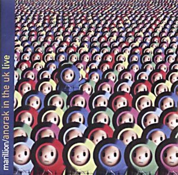

Machiavel
Magical Power Mako
Magma
Malicorne
Mandalaband
Mannheim Stroller(Test CD)
Marcos Valle
Marillion
Marillion tribute album
Mark Almond
Martini, Mia
Jasun Martz
Mason,
Nick
Mason + Fenn
Mastermind
Matia Bazar
Mephistopheles
Mercury Rev
Mia
Grazia Di Michelle
Mike Heron's Reputation
Minotaurus
Mira Kubasinska & Breakout
Miranda Sex Garden
Mongol
Moody Blues
Morte Macbre
Mugen
Museo Rosenbach
Mushroom
Mutantes
Mythos
[Budgie, 이훈구, hglee@fdcl.kaist.ac.kr]
Machiavel _Same_ (1976)
1. Johan's Brother Told Me
2. Cheerlesness
3. Cry No More
4. When Johan Died, Sirens Were Singing
5. I Am
6. Leave It Where It Can Stay
Bonus Tracks
7. To Be Free
8. Don't Be Free
9. When You Turn Green
얼마전에 이들의 앨범이 ranjit 의 리스트에 올라가 있기에 급히 구했습
니다. AR 5 호에 이 앨범에 대한 소개가 있었는데 성시완 씨가 극찬을
했었죠. 미국에서 주문해서 구할만한 가치는 충분히 있는 앨범이라고 생
각됩니다. 이 씨디는 네덜란드에서 제작되었고 이들의 74년도 미발표 작
품 세곡이 보너스로 들어있습니다.
Machiavel 은 벨기에가 자랑하는 대표적인 프로록 그룹입니다. 그러나
이 76년의 데뷔작은 그렇게 프로록 냄새가 짙게 느껴지진 않습니다. 하
지만 2번째 트랙인 _Cheerlesness_ 와 마지막 트랙 _Leave Where It Can
Stay_ 두곡 만으로도 소위 맛이 가기에는 충분합니다:)
_Cheerlesness_ 에서 빛을 발하는 사람은 무엇보다도 불구의 몸으로 노
래를 부르는 Marc Ysaye(Drums, Vocal) 와 키보드 주자 Alberto
Letecheur 입니다. 이 노래에선 실연당한 사람이 자신을 버린 연인을 향
해 기막힌 목소리로 넉두리를 합니다. 아마 실연당한 상태에서 이곡을
들으면 징징 짜지 않고는 못배길거 같군요. 이 곡은 기.승.전.결 이 아
주 분명한 평범한 발라드 곡 이상의 노래입니다. 중반부부터 빛을 발하
는 키보드 연주도 아주 일품입니다. 마지막 부분에 이르면 기타와 스트
링 그리고 키보드, 드럼 등의 합주가 매우 웅장하여 귀를 꽉채우는 감동
을 느낄 수 있읍니다.
마지막 트랙인 _Leave It Where It Can Stay_ 는 그 구성이나 연주등 모
든면에서 가장 프로그래시브한 곡이라고 생각되는군요. 우선 첫부분에
나오는 Ysaye 의 보컬이 인상적이고 가사 또한 가슴에 와 닿습니다.
In time there is no space for you~~~~
In space there is no time for me~~~~
그러나 이 곡의 백미는 중반부 이후에 나타나는 Jack Roskam 의 기타플
레이 입니다. Roskam 은 Machiavel 의 본 데뷔앨범에만 참여한 것으로
알고 있는데 아마 흑인인 듯 하고, 플레이가 매우 블루스적입니다. 전반
적으로 분위기를 상승시키는 몽롱한 Letecheur 의 키보드도 듣기 좋지만
Roskam 의 기타소리는 결코 화려하지 않지만 끈적끈적하게 다가오는 블
루지한 맛때문에 이곡을 자꾸 듣게 만드는것 같습니다. 이 곡을 들으면
플로이드의 _Shine On Your Crazy Diamond_ 에서 들리던 길모어의 환상
적인 기타플레이가 연상됩니다.
구하셔도 전혀 후회되지 않을 앨범이라고 자신있게 추천드립니다:)
[최정준, SECADA@hitel.met, 93.6] |
[이동훈, meddle@nuri.net] 오늘은 magical power mako 의 1집인 magical power 를 소개해 드리도록 하겠습니다. 이미 아트록 12호를 통해서 95년 초반에 재발매된 3장의 앨범들 중에서, 2집인 super record 가 소개되었죠. 매직컬 파워 마코는 Polydor 시절에 3 매의 앨범을 발표하였는데... 1집은 Magical Power, 3집은 Jump 라는 타이틀을 달고 있습니다. 그는 최근에도 정식 스튜디오 앨범을 미국에서 발매하여 꾸준한 창작력을 과시하고 있는데요... 제가 모든 앨범을 들어본 결과... 역시 미소년 시절에 발표한 1, 2 집이 가장 뛰어난 앨범이더군요. Magical Power Mako - Magical Power (POCH-1486) Magical Power Mako - Super Record (POCH-1487) Magical Power Mako - Jump (POCH-1488) Magical Power 는 Pierrot Lunaire의 음악과 상통하는 면이 많습니다. 특히 Gudrun 에서 보여준 테잎조작, 남성 보컬의 강렬함과 서정적인 피아노의 조화, 서로 자국의 민속음악을 도입했다는 점 등등... 뮤지션의 나이 역시 비슷하지요? 하지만 매직컬 파워 마코는 여성 보컬 대신에 어린 아이들의 코러스를 사용하였고, 멜로트론을 과감히 도입하였습니다. 앞면은 Cat Side 인데... 참... 이 앨범은 아트웍이 상당히 괴기한데요... 우선 앞 커버의 커다란 Polydor 마크가 상당히 인상적이구요... 씨디의 경우 뒷 커버에 고양이의 안면이 무섭게 표현되어 있습니다. 씨디 속지의 뒷면에는 Dog Side 를 의미하는 멍멍이 얼굴의 커다랗게 찍혀있구요. ^^; 저는 개인적으로 Dog Side 의 서정미와 Space 를 혼합한 음악에 높은 점수를 주고 싶습니다. Cat Side 의 경우 일본 특유의... 뭐랄까... 협동정신? ... ^^; 뭐 그런것 때문에 거부감이 생기더군요... 아마 유럽권 음악에 전혀 때묻지 않은 매우 독창적인 음악이기 때문인지도 모르겠습니다. Dog Side : 8. open the morning window, the sunshine comes in, the hope of today is small bird sing 제목이 매우 길죠? ^^; 이 곡을 가장 정확하게 표현한다면 the Beatles 의 White Album 중에서 "I will + 싸이키델릭" 이 아닐까요? 아름다운 어린이들의 합창으로 시작하며 후반부로 들어가면 싸이키델릭한 기타와 저음의 남성 나래이션이 오버랩 됩니다. 이 앨범에서 가장 쉽게 접근 가능한 곡이며, 제가 추천하는 곡이기도 합니다. 9. ruding piano 메트로놈의 똑딱~ 소리에 경쾌한 피아노가 즐거운 곡입니다. 소품. 10. shukuyakushi nenbutsu kanehari 11. american village 1973 12. look up the sky 이 앨범에서 가장 뛰어난 space : the mind trip 입니다. 2집인 super record 의 음악적인 방향을 어느정도 제시한 명곡이며, 일본 아트록 역사에서 가장 독특한 곡들 중 하나로 남을 것입니다. (너무 과장인가? ^^; 하지만 꼭 들어보시길.) 우선 아트록 팬들에게 절대적인 인기를 누리는 mellotron 이 넘실 넘실~~ 하지만 Mako 는 속지에서 "멜로트론은 흥미로운 악기다... 하지만 나는 다시 이 악기를 연주하지 않을 것이다." 라고 말하고 있는데... 그의 생각관 다르게 후에도 멜로트론을 연주하였죠. ^^;; 한가지 놀라운 사실은... Mako 가 15살되던 해에 작곡 하였다는데... 역시 아이의 아름다운 마음과 멜로트론은 어느정도 상관 관계가 있는 것일까요? 그래서 그에겐 멜로트론이 어린 시절의 추억을 상징하는 것이고... 어른이 되면 소년의 추억을 빼앗기기 싫어서 더 이상 연주를 하지 않겠다는 것일까요... 좀더 상상하면 정신 건강에 해롭겠죠? ^^; 후반부로 들어갈 수록 깊은 상상에 빠져들게 하는 look up the sky의 가사를 음미하면서 오늘의 리뷰는 이만... :-) look up the sky the only thing you should do now look up the sky it's my only hope now look up the sky peace, everywhere look up the sky happiness for you look up the sky the blue sky look up the sky poem by MAGICAL POWER MAKO 이동훈
[Fish, 신인철, icshin@chiak.kaist.ac.kr]
이제 슬슬 저도 Magma에 입문하려고 하는데.. Univeria Zekt를 꼭 들어보라고 하
신 분이 있어서. 어떨까요? Magma의 member들이 많이 참여했다던데 마치 Yes로
치면 _Cinema_(90125 era) version of Magma ? Recommendation 부탁합니다..
[Oak-Man, 장민수, jangms@mobi.etri.re.kr]
Univeria Zekt 는 Magma 입니다. Magma 가 (Laurent Thibault 가 70년대 초에
설립한) Theleme 이라는 레이블에서 음반을 발표하기 위해 당시 소속되어 있던
Philips(?)에 양해를 구하고 잠시 이름만 바꾼 그룹이 Univeria Zekt 입니다.
Magma 의 두번째 앨범인 _1001 Cetigrades_ 시절의 멤버들과 대동소이한 라인업
으로 구성된 Univeria Zekt 의 음악은 어쩔수 없이 _1001 Centigrades_앨범과 대
동소이한 음악성을 표출하고 있습니다. 최근에 Musea 에서 Theleme 레이블을 기
념하는 박스 세트가 발매되었는데 그 박스 세트에 Univeria Zekt 의 _The Unnam-
ables_ 도 포함되어 있습니다. 낱장으로도 판매한다는군요. (참고로 이 세트에는
Zabu, Ergo Sum, 그리고 모음집인 _13+2 Puissance_ 가 포함되어 있습니다.)
Univeria Zekt 의 음악은 그저 프렌치 재즈락이라고 말할 수 있겠네요. 물론 Ma-
gma 의 향취(:)) 가 느껴지지만 그리 강한 편은 아니고... Magma 의 팬에게는 없
어서는 안될 귀중한 음반이지만 입문자에게 추천할 만한 좋은 앨범은 아닙니다.
차라리 13+2 Puissance 를 추천해 드리고 싶군요. 이 앨범에는 _Mekanik Destru-
ktiw Kommandoh_ 의 초기 버전이 라이브로 수록되어 있는데, 그야말로 아기자기
한 맛을 느낄 수 있답니다. 두번째 앨범인 _1001 Degres Centigrades_ 와 Magma
본연의 음악성을 획득한 _MDK_ 사이의 깊은 골을 이어주는 짜릿한 트랙이지요.
[Oak-Man, 장민수, jangms@mobi.etri.re.kr]
더블 앨범이라고 하시는 걸 보니 _Serge Bringolf Strave_ 라는 Bringolf 의 셀
프 타이틀 데뷔 앨범인 것 같군요. Bringolf 의 앨범은 저도 서울에서 여기저기
기웃거리다가 정말 운좋게 구했던 음반입니다. 아마도 몇년 전에 수입되었던 것
인가본데... 비닐 케이스에 해동 물산인가 하는 스티커가 붙어있었거든요.
물론 Zeuhl팬에겐 크나큰 기쁨을 주는 음반이지요! 그 음악적인 성취감 때문이라
기 보다는 또 한장의 Zeuhl 음반을 소장했다는 그 성취감 때문이긴 하지만.. :-)
아, 이건 좀 과장시킨 말이구요, 단지 Zeuhl 계열이라는 딱지때문에 설레이는 가
슴으로 들어본 몇장의 앨범이 음악적인 완성도 면에선 좀 그런그런 것들이 있어
서.. (물론 제가 들어본게 별로 없으니까 이건 그냥 푸념으로 접으시고요... :))
이 앨범은 80년에 발표된 음반인데 Bringolf 는 드러머이고, 전체적인 음악 분위
기는 좀 밍밍한 재즈 락이라고 할 수 있겠는데... 밍밍하다는건 시원챦다는게 아
니라 강한 인상을 주지 못한다는 것입니다... 여성 코러스와 브라스가 흘러나오
고... 저도 한두번 들어보고 그저 꽂아두고만 있는 형편이라 잘 기억할 수가 없
네요. 집에 가서 저도 다시한번 들어봐야 겠네요 :)
[Ork-Man, 장민수, jangms@mobi.etri.re.kr]
Magma - Mekanik Zeuhl Wortz
(1994, Kiss No. 39, 2CDs)
- Live recording from March 2, 1976 at the Opera, Reims, France
[수록곡]
(Zund 1:Disc 1)
1. Mekanik Destruktiw Kommandoh 42:00
(Zund 2:Disc 2)
1. De Futura Hiroshima 25:00
2. Emehnteht - Ptah 27:00
[멤버]
Christian Vander : Drums, Voices
Stella Vander : Voices
Klaus Blasquiz : Voices
Patrick Gauthier : Keyboard
Benoit Wiedmann : Keyboard
Bernard Paganotti : Bass
Gabriel Federrow : Guitar
Didier Lockwood : Violin
마그마의 76 년도 라이브를 담은 두장짜리 해적판 CD 입니다. Seventh Records
에서도 최근 AKT 레이블을 통해 75 년 Le Taur 에서 의 실황 공연을 담은 두장짜
리 CD 를 발매했습니다. 마그마의 팬들에겐 참으로 살맛나는 요즘이네요.
본 앨범을 발매한 Kiss 레이블(해적 레이블) 은 이전에 _Theusz Hamtaahk_이라는
해적판 CD 를 발매한 적도 있습니다. 대개 해적판 CD 들은 음질면에선 그런대로
들어줄만 하지만 믹싱 수준이라든가 담겨진 음악의 참다운 멋을 이끌어낸다는 면
에서 실패하는 경우가 대부분인데, _Theusz Hamtaahk_ 이나 본앨범 모두 많은 부
분에서 마찬가지의 약점을 드러내고 있습니다. 해적판의 한계이지요. 사실 음악
을 연주한 아티스트의 의도가 전혀 반영되지 않은 모양새로 마무리가 이루어지는
해적판 음반들은 아티스트를 사랑하는 마음만이라면 구입하지 않는것이 바람직하
리란 생각입니다... (당연한 이야기이지요;>) 근데도 워낙 구하기 힘든 마그마의
라이브라서 그저 기쁜 마음으로 급히 구할수 밖에 없었던 점, Vander 가 이해 좀
해 주었으면... :)
본 앨범은 수록곡으로만 놓고 보아도 마그마의 팬들을 희열의 구렁텅이로 몰고갈
만큼 화려합니다. Theusz Hamtaahk 3 부작의 마무리 제 3 부에 해당하며 가장 하
드한 프로록의 하나인 Mekanik Destruktiw Kommandoh, _Udu Wudu_ 앨범에 수록되
었던 Jannick Top 의 장중한 락 오케스트레이션 De Futura, 그리고 이집트의 창
조의 신인 Ptah 와 성인 Emehnteht-Re에 관한 임프로바이제이션 Emehnteht-Ptah!
특히 Ptah 는 마그마 시절을 통털어 Vander 의 유일한 드럼 솔로 곡이며 정식 발
매된 적이 없는 전설의 희귀 트랙 !! 이쯤되면 선곡만으로도 이 앨범은 이미 반
쯤은 성공한 셈이지요. 수록곡만 보고도 모든 마그마 팬의 가슴은 쿵쾅거리기 시
작할 겁니다. :-)
결론: 이 두장의 CD 세트는 'Ementeht-Ptah' 만으로도 그지없는 만족감을 안겨줍
니다. 이 세상에서 마그마를 제외하면 자신의 인생에 남는 것이 없다고 할 만큼
그 자신의 모든 것을 쏟아내어 마그마를 창조하는 Vander 의 가장 적나라한 모습
이 이 곡을 통해 드러납니다. 야만스럽고 원시적이며 주술적인 연주.Vander의 스
틱은 결코 기계적으로 북을 두드려대지 않습니다. Vander 의 리듬은 메트로놈에
동기화(synchronized) 된 강약의 조절이 아니라, 가슴에서 뿜어져 나오는 에너지
- 생명의 에너지로 동기화(motivated) 된 존재의 표출입니다. 그의 리듬은 불규
칙적이며 강약은 혼돈스럽고 거칠게 흔들거립니다. 마치 원시 종교 의식의 한가
운데에 있는 듯한 느낌을 받게 됩니다. Vander 는 자신의 드럼 연주에서 다양한
음색의 탐탐(tom-tom) 이 중요한 역할을 한다고 말하는데, 우리는 이곡에서 드럼
연주를 흉내내는 Vander 의 광란에 휩싸인 목소리와 그에 따르는 무지몽매한 탐
탐의 타음을 들을 수 있습니다. 그가 절정을 향해 치달으며 외치는 외마디"Satan,
Ja!!". 혹시 그는 각종 주술에 능한 원시종교의 주술사는 아닐까? 실로 의심하며
한숨을 내쉬게 됩니다. 나머지 두곡은 녹음이 만족스럽지 못한 관계로 원곡이 가
지는 힘이 다소 상실된 모양새입니다. 특히 보컬 부분의 녹음이 취약해서 Klaus
Blasquiz 와 Stella Vander 의 보컬이 크게 부각되지 못하는 아쉬움이 남습니다.
그럼에도 불구하고 M.D.K. 의 난해한 부분에서 Blasquiz 는 엄청난 음폭의 음들
을 오르내리며 코바이아어로 빠르고 능란하게 임프로바이제이션을 구사합니다.감
탄사를 연발할 즈음 Bernard Paganotti의 베이스 소리가 왕왕거리기 시작하는데!
(얼쑤! :)) 본 앨범의 M.D.K. 는 _Live Kohntark_ 시절의 버전인 것으로 생각되
는데 후반부의 연주는 _Live Kohntark_ 의 네번째 면에 실린 Mekanik Zain 과 동
일한 형태의 연주입니다. 그리고 중반부에는 Paganotti 의 베이스 솔로가 길게
삽입되어 있습니다. Paganotti 의 완전 충전된 베이스 소리가 아무런 기교도 얹
지 않은채로 방사됩니다. De Futura 에서도 Paganotti 의 베이스가 주요 악기로
서 불을 뿜고 Blasquiz 의 저음으로 깔리는 보컬이 색다른 느낌을 주긴 하지만,
전체적으로 힘이 결여되고 원곡의 그루브감이 감쇄되어 있어서 만족스럽지 못한
연주입니다. 하지만 몇번을 반복해서 들으면 들을수록 M.D.K. 와 De Futura 에서
도 조금씩 새로운 맛이 느껴지는 것이 아무래도 이 앨범은 grow-on-you 타입인것
같네요.
본 앨범은 _Live Kohntark_ 과는 대별되는 매우 강력하고 거친 마그마의 일면을
느낄 수 있는 음반으로 큰 만족감을 줍니다. 단지 본 음반이 해적판이란 점은 일
말의 아쉬움과 죄책감(개인적으로)을 안겨주는군요. 앞에서 언급한 정규 라이브
음반인 _In Concert 1975 "Le Taur"_ 에도 M.D.K 와 Kohntarkosz 등 가슴 떨리게
만드는 곡들이 들어있다고 하니.. 이번에는 죄책감없이 마그마의 꽉찬 음들을 만
날 수 있겠지요!!
[Ork-Man, 장민수, jangms@mobi.etri.re.kr]
Magma - Concert 1975 "Theatre Du Taur"
(1994, AKT IV, France)
"1975년 9월 24일 프랑스 Toulouse 의 Theatre Le Taur 의 실황 공연"
(Zund 1)
1. Kohntarkosz (32:29)
2. HHAI (11:18)
3. Kobaia (11:49)
(Zund 2)
1. Mekanik Destruktiw Kommandoh (38:15)
(Members)
Christian Vander Drums, Voices
Stella Vander Voices
Klaus Blasquiz Voices, Percussion
Gabriel Federow Guitar
Patrick Gauthier Keyboard
Benoit Wiedmann Keyboard
Didier Lockwood Violin
Bernard Paganotti Bass
최근에 반데가 Seventh Records의 자매 레이블로 "공식 부트렉
(Official Bootleg)" 음반을 발매하기 위해 만든 AKT 레이블의 네번째 앨범입
니다. AKT 는 반데와 마그마에 관련된 공연 실황이나 과거의 세션 녹음 등을
음반으로 발매해 오고 있습니다. 92 년의 Le Voix De Magma 실황(AKT I), 콜롬
부스의 신대륙 발견을 기념하는 반데의 솔로 공연 실황 Les Voyages De
Christophe Colomb(AKT III), 반데와 Jannick Top, Klaus Blasquiz, Rene
Garber 가 73 년 Mekanik Destruktiw Kommandoh 의 녹음을 마치고 새벽에 녹음
했다는 70 여분 길이의 즉흥 세션 Neheh(AKT II) 가 AKT 를 통해 발매되었는
데, Le Voix De Magma 의 실황 공연 앨범 이후의 두장의 앨범은 음악팬들의 흥
미를 돋우지 못한 의외의 앨범이었습니다.
하지만 네번째 앨범은 마그마 팬들을 흥분 상태로 몰고 갔지요 :) 이번
앨범은 마그마의 75 년도 라이브를 담은 총 94 분여에 이르는 두장짜리 CD 입
니다. 75 년 9 월이라면 마그마의 정규 라이브 앨범인 HHAI/Live(75년 6월) 가
녹음된 때와 거의 동일한 시기이지요. 따라서 멤버 구성도 키보드의 Patrick
Gauthier 를 제외하고는 HHAI/Live 와 동일합니다. 하지만 음악적으로는
HHAI/Live 와 많은 차이점을 보이는데, HHAI/Live 가 비교적 차분하고 정제된
분위기였다면, 본 앨범은 좀 더 거칠고 파괴력있는 분위기의 연주를 펼치고 있
습니다. 이것은 녹음 음질의 영향이라고도 할 수 있는데, 정규 앨범임에도 불
구하고 부트렉의 속성은 버릴 수 없었는지 매우 낡은 음질입니다. 스테레오 분
리도도 좋지 않아서 거의 모노처럼 들리구요. 고음역도 많이 사그러 들어 있고
보컬도 잘 들리지 않습니다. 그러나 다행히도 빠가노띠의 베이스 음과 반데의
드럼 소리는 제 힘을 유지하고 있습니다. (이 음반을 들으면서 킹 크림슨의 네
장짜리 라이브 CD 세트인 The Great Deceiver 의 깨끗한 음질에 놀라움을 금치
못하게 되었지요 :-)) Blasquiz 의 인터뷰를 읽어보면 프랑스의 비조직적이고
아마츄어적인 공연 문화를 실감할 수 있습니다. 마그마는 당대 세계의 최고 그
룹 중 하나였음에도 불구하고 그들의 공연 여건이나 재정 상황은 그리 좋지 않
았다고 합니다. 게다가 반데는 음악에만 관심이 있었지 그룹을 유지해 나가는
조직적인 면모는 보여주지 못한 듯 합니다. 본 앨범은 그러한 밴드의 상황을
대변하는 듯, 녹음 장비와 녹음 기술의 허술을 드러내는 조악한 음질. 협소한
공연장인 듯 관중들의 박수소리는 어렴풋이 그 수를 헤아릴 수 있을것만 같습
니다. 그러나, 사이사이 의미모를 관중들의 웃음소리가 들리는 가운데 터져 나
오는 밴드의 힘은 감동의 수준을 넘어서 공격적이고 신경질적으로 들릴 정도입
니다.
전체적으로 음질과 공연장 분위기가 기대에 못 미치고 있지만, 마그마의
음악은 이런 환경에도 아랑곳하지 않고 높은 밀도를 유지하고 있습니다.
HHAI/Live 에 비해 반데의 드럼과 빠가노띠의 베이스 소리가 전면에 드러나고
있어서 최근에 발매된 해적판 CD 인 _Mekanik Zeuhl Wortz_ 에서처럼 강렬하고
거친 힘이 잘 분출되고 있구요. 또 각 악기의 연주와 Blasquiz 의 보컬은
_Mekanik Zeuhl Wortz_ 보다 더욱 높은 긴장감을 유지하고 있습니다. 개인적으
로 무척 만족할 수 밖에 없는 마그마 Zundography 의 소중한 아이템이네요 :-)
[3M, ecokis@plaza.snu.ac.kr]
Magma -
*현재* 느낌입니다.
Kohntarkosz - good
Live- overall good
Udu Wudu - oveall good
Atthak - good
한편의 시각으론 독특한 비상업적 Fusion Jazz(means *unlike* Weather Report's
"Heavy Weather")로 몰 수도 있겠지만...Eskaton 등 유사 밴드들이 우러러
추종했던 Magma만의 세계, 예...Zeuhl-World입니다.
"Live(aka Hhai Live 75)"부터 시작하시면 됩니다.
license로 나온 "Kohntarkosz"의 수록 시간 대부분을 차지하는 'Kohntark part
I,II ?'가 더욱 생동감 있는 live로 실려 있습니다.
"Udu Wudu"에 실린 대곡 'De Futura(?)'도 매우 좋습니다.이 두 음반이
좋으시다면,스타일이 달라져서 실망했네 등등 세간의 말도 많았던 "Atthak" 역시
마음에 드실 것입니다.
0000 series로 나올 가능성이 큰 "Mekanik Destructiw Kommandoh(?)"도
기대되는군요.
Thanks orkman님 for your kind info.
Malicorne - Almanach ***1/2 [meddle, 이동훈, meddle@nuri.net] 예전에 국내에 라이센스된 '기차안의 노인' 앨범이 매우 인상적이여서... 어렵게 구한 앨범입니다. Gwendal, Malicorne 앨범들은 프랑스에서 찍었는데 이상하게도 구입이 어렵네요... 하여간... 노인 앨범에서의 프록한 색체를 제거한다면 바로 Almanach 앨범이 되는데여... Gabriel 의 특이한 창법도 여전하고... Marie 의 보컬이 리드하는 곡도 들어있습니다. 전체적인 분위기는 상당히 엄숙하고 진지합니다. 들어볼만한 앨범인것 같습니다.
Mandalaband / The Eye of Wendor:Prophecies
[libero, 김성우, swkim@gaia.kaist.ac.kr]
프로그레시브 록 그룹들이 흔히 주제로 삼는 것 중 두가지를 이야기하자면,
하나는 현실세계의 비판이고, 다른 하나는 이와는 동떨어진 환상적인 세계에
의 간접체험을 생각할 수 있습니다. 물론, 어떤 그룹은 이 두 가지를 모두
이용하기도 합니다.
여기서, 소개하려는 앨범은 두번째 주제를 가지는 concept album입니다.
Mandalaband는 본래 영국의 David Rohl이라는 프로듀서, 작곡가이자 고대역사
학자(특히, 이집트)의 프로젝트 밴드입니다. 1975년에 중국에 대한 티벳의 핍
박과 같은 현실적인 소재로 동명 타이틀 앨범을 발매하였고, 3년 뒤 본 앨범
"The Eye of Wendor:Prophecies"를 Chrysalis레코드를 통해서 발매하였습니다.
그리고, 얼마뒤 해산하였습니다.
본 앨범 "The Eye of Wendor:Prophecies"는 환타지소설의 대부격인 J.R.R.
Tolkien의 환상적인 작품세계를 소재로 하고 있으며, 총 14곡 40여의 러닝타
임을 가지고 있습니다. 데뷰앨범과 마찬가지의 웅장한 오케스트레이션 반주에
키보드, 드럼, 베이스, 기타의 박진감 넘치는 록 연주를 들려주고 있으며, 본
작에 참여한 게스트 뮤지션들이 뛰어난 보컬 하모니의 풍성한 음악을 들려줍
니다. 전체적으로, 마치 환타지 소설을 영화화하여 그 영화음악을 듣는 듯한
느낌이 들 정도입니다. 타이틀곡인 첫 곡 도입부에서는 본래 "The Lord Of
The Rings"(반지전쟁)의 사운드트랙을 위해 쓰여진 아름답고 민속적인 멜로디
가 나오기도 하고, 여섯번째 트랙 "The Tempest"에서는 역시 Tolkien의 세계
에 관한 concept album을 만들기도 했던 Isildurs Bane(Sweden)의 어두운 분
위기, 그리고, 긴박하고 극적인 분위기를 많은 곡들에서 자연스럽게 표출하고
있기도 합니다. 본 작에는 또한 10cc, Barclay James Harvest, Maddy Prior
(몇안되는 좋아하는 포크그룹 Steeleye Span의 보컬이죠. 몇주전 메트로 미도
파에서 SS의 또다른 버전의 씨디가 수입됐더군요), Justin Hayward(무디블루
스), Paul Young(별로 안 유명한 Paul Young인듯) 등등이 게스트 뮤지션으로
참여하고 있습니다. 그리고, 앨범 속지의 각 곡에 참여한 뮤지션들 이름을 자
세히 보시면 또 한명의 아는 이름을 발견할 수 있는데, 바로 Norman Barratt
(Gravy Train의 리더)입니다. 마지막으로, 본 앨범은 뛰어난 연주력과 난해한
구성보다는 서정적인 심포닉 록을 더욱 좋아하시는 분께는 - 제가 최근 즐겨
듣는 앨범 중에 Kerrs Pink(Norway) 의 "A Journey On The Inside" (아트록지
8호 참조)와 더불어 - 더할 나위 없는 훌륭한 작품일 거라고 생각합니다.
참고로, RPM에서 발매한 이 씨디에는 또 마지막 보너스 곡으로 데뷰앨범에
실려서 엄청난 심포닉 록을 들려주었던 20여분의 대곡 "Om Mani Padme Hum"
(티벳 국가와 같은 제목이죠. 같은 멜로디도 차용하고 있는진 모르지만...)이
실려있으므로, 데뷰앨범을 사지 않고 이 CD만 사는 것도 money를 줄이는 방법
이 될 수 있을 듯..
덧말1: 앨범 타이틀 중에는 Tolkien 작품의 소재를 나타내는 이름이 많은데,
Wendor에 관한 이야기가 어떤 소설이죠?(속지에 간단한 이야기가 나오
긴 하지만) Wendor, Florian, Almar, Carthilias, Elsethea, Waldow,
Silesandre, Aenord, Damien....
- libero -
Seong-Woo Kim
swkim@gaia.kaist.ac.kr
[Neo-Zao, 김남웅, zao@jean.iml.goldstar.co.kr
http://jean.iml.goldstar.co.kr/~zao/zao.html]
[Mandalaband - S/T, '75]
만다라는 밀교가 창출해 낸 성역공간으로서 석가만의 공간이 아닌
중생들도 득오의 경지를 갖는 보리심을 가진다면 성불하여 들어
갈 수 있는 개방된 성역입니다. 밀교란 불고의 비교를 말하는데
이는 불교가 다신교와 힌두교적 요소를 수용하여 체계화 한 것이죠.
따라서 정통의 불교에 존재하는 여래와 불, 보살외에 더욱 많은
부처들이 있습니다. 이는 각자의 내면에 신, 불, 우주라고 하는
초월적 존재를 직접파악하여 일치하려는 신비주의적인 요소를
가지는 것입니다. '75년에 발매된 만다라밴드의 데뷰앨범은 밴드의
이름과 곡명등에서 동양의 신비주의에의 관심을 적극적으로 표명
하고 있습니다. 이는 이국적인 것을 그리워 하는 서양인의 다소
속물적인 객기라고도 볼 수 있으나 이 밴드의 2집의 경우 J.R.R
Tolkien의 반지전쟁을 테마로 하고 있는 점에서 보면 본래 이
밴드의 관심사가 신화나 팬터지에 있었던 것으로 생각됩니다.
음악에 대한 리뷰이전에 이 첫 앨범의 재킷에 대해 말씀을 하면
1집의 곡을 거의 대부분 작곡했다지만 연주에는 참여하지 않고
있는 David Rohl이 손수 페인팅한 만다라라고 하는군요. 그런데
이 만다라는 사실 어디서도 보지 못한 창작 혹은 사이비성의 것이
아닌가 생각됩니다. 우선 만다라를 대표하는 태장계와 금강계의
양계 만다라의 공통점이라 할 수 있는 중앙의 대일여래가 이 그림
에서는 보이지 않습니다. 물론 동심원 형태의 중대8엽원이라든가
연화의 등장으로 보아서는 태장계 만다라의 형태를 띄고 있는
것이 아닌가 하지만 또 원의 바깥에는 정토를 묘사하는 듯한 정토
만다라의 형태를 띄고 있어 혼란이 가중됩니다. 이는 만다라가
그 내부에서는 감히 침범할 수 없는 성스러움을 가지고 있어 외부의
세속에 대비되는 구조를 가지는 것에 위배되는 것이 아닐까 생각
해봅니다.
앨범의 첫곡은 엘피의 앞면을 차지하고 있는 대곡으로 4부로
구성된 '옴 마니 반메 훔'입니다. 이 진언은 이른바 불교에서
'관세음보살본심미묘육자대명왕진언'이라하는 것으로서 가장
성스런 '옴'으로 부터 세속적인 '훔'을 차례대로 외는 것입
니다. 만다라밴드는 이러한 매우 동양적이고 불교적인 소재로
약 20여분간 자신들의 능력을 최대로 발휘하고 있는 듯 합니다.
상당히 강렬하게 연주하고 있는 기타나 어색한 구석이 없는
수준급의 오케스트레이션. 건반을 담당하는 빅 에머슨의 실력은
동시대의 건반주자들 중에도 상당한 위치에 있다고 생각합니다.
2악장에서 보여주는 에디잡슨을 연상시키는 피아노 (이 말은
좋은 아티큘레이션을 보여준다는 말임.) 솔로나 시종일관 지속
되는 오케스트레이션 등, 악기의 사용시점을 잘 파악(특히
Glockenspiel의 사용) 하고 있다는 생각이 들고 따라서 훌륭하
다는 칭찬을 아낄 수 가 없습니다.
그러나..
만다라밴드의 불교적인 주제에의 접근은 실패라고 생각합니다.
가사로 티벳어를 사용했다고(Ref. Art Rock Magazine. by C.S. Lee)
하고 상당한 수준의 연주를 들려주는 좋은 심포닉 락인데도
불구하고 실패라고 생각되는 이유는? 그것은 보통사람들도 누구나
지적할 수 있는 동양적 멜로디를 전혀 도입하지 않은 것일 수도
있습니다. 그러나 이러한 점은 그다지 중요한 것은 아니죠.
제이드 워리어는 단지 음향과 분위기만으로도 동양의 이국적
인 분위기를 가장 아름답게 그려 낸 증거가 있습니다. 클래식
쪽으로 본다면 훨씬 많은 예가 있을 수 있죠. 문제는 이 들의
멜로디가 너무 통속적이라는데에 있습니다. 이 사실은 아이러닉
하게도 구스타프 말러가 생존시 자신들의 작품에 대한
음악평론가들의 평에 괴로워했던 사실과 상황이 유사합니다.
당시의 평론가들은 말러의 멜로디가 통속성이 너무 강하다고
비판했고 말러 또한 자괴감에 괴로워하면서 테마를 하나 하나
따로 보지 말고 대신 테마의 전개에 주목해달라고 자신을
변호했던 상황과 유사합니다. 당시의 모든 사람들은 어쨋건
말러의 기가 막힌 오케스트레이션에 대해서는 칭찬을 아끼지
않았으니까..
그러나 말러의 멜로디에 대해서 통속적이라고 말하는 사람은
현세에 별로 많지 않습니다. 만약에 그런 말을 할 사람이라면
충분한 근거를 대지 않고서는 자신의 속물성을 속일 수가 없겠죠.
그러나 여기 만다라밴드의 대중음악을 감히 말러의 경우에
비교하지 않는다 하더라도 그들의 멜로디는 통속적입니다. 특히
보컬의 경우 이렇게 강렬한 심포닉 락에는 어색한 BJH나
무디블루스 풍의 전원적인 색채를 가집니다. 이러한 보컬리스트가
남미나 동양권 대중가요의 멜로우 코드를 노래한다면....
결과는.... "이 것은 통속적인 것이다."라고 이야기 할 수 밖에는
없군요.
대곡 '옴마니반메훔'이 끝나면 4곡의 중편이 나오게 되는데 저의
개인적 생각으로는 오히려 이 곡들의 완성도가 더 높다고 생각
합니다. 특히 '록'이라는 면에서 본다면..
전체적으로 본다면 이 앨범은 좋은 앨범입니다. 특히 연주에
관심을 두지 않는 심포닉락의 팬이라면.. 꽉 찬 사운드와 '75년
이라는 시대를 감안할 때 매우 현대적인 어레인지..
이 들의 두번째 앨범을 들어보고 싶다는 생각이 상당히 드는 군요.
[likidas, 김형석, likidas@dangun.kaist.ac.kr]
Mandalaband - Mandalaband
1. Om Mani Padme Hum
1 악장 - 좀은 스산한 분위기에서 시작해서 코러스가 들어가는
웅장한 분위기의 심포닉 락을 연출해 낸다. 날뛰는 기
타소리가 조금 부조화 스럽게 느껴지지만 꽉 채워지
는 무그와 오르간의 영향으로 무게있는 심포닉 락을
들려 준다. 특히 계속이어지는 코러스의 옴마니반메훔
은 락적인 경건함 (이런걸 말할 수 있다면...)을 불러
일으키기 까지 한다. 대부분의 가사가 티벳어로 쓰여
졌다고 하지만, 곡의 분위기가 동양적이라기보다는 유
럽적인, 그것도 중세 유럽적인 냄새가 많이 난다는 점
이 이쉽다. (이들에게는 불행한 상상력의 부족이다...)
2 악장 - 서정적인 피아노의 터치로 시작하여 1악장의 무게를
덜어준다. 전반적으로는 ELP 풍의 키보드 중심의 연주
로 단순한 주제로 이끌어지는 임프로비제이션 (여기서
이런 말을 쓸 수 있다면..) 들이 편안하게 진행된다.
3 악장 - 2악장의 끝과 연결되는 아름다운 아리아로 문을 연다.
(단지 보컬이 그다지 뛰어나지 못하다는 점만 빼면..)
긴장을 더해가는 보컬의 전개에 점점더 가해지는 키보
드의 힘이 2악장의 주제를 끌어 힘차게 달려간다. 보
컬과 키보드 파트가 주고 받으며 긴장감을 높여가지만,
아무래도 절정을 향하여 가기에는 힘이 좀 딸리는 듯,
마무리는 평범하게 이루어 지고 만다. 역시 상상력의
부족.
4 악장 - 마지막 피날레는 기타가 중심이 된 락이다. 엇박으로
시작하여 고조되어 되어가는 기타의 날뜀과, 무그의
점진적 상승이 후반부의 보컬 코러스와 함께하여 웅장
한 피날레를 이룬다. 다만 주제가 중세를 무대로 한
영화의 배경음악에 딱 알맞을 그런 서양적 분위기라는
점이 '옴마니반메훔' 이라는 곡명에 맞지 않는 다는
점이 아쉬울 따름이다. 전체적으로 뛰어난 연주는 아
니지만, 꽉찬 만족스러운 곡의 전개이다.
2. Determination
첫 곡에서의 외도를 반성이라도 하듯, 영국적인 락 사운드로 돌아왔다.
시작의 키보드에서 기대된것 과는 달리 단순한 리듬의 곡. 기타의 연주
가 좀은 안정되지 못했지만, 첫곡에서 불안하게 느껴졌던 보컬은 잘 맞
춰 가고 있다. 곡의 전체 분위기는 특이할 것이 없지만, 완성도 측면에
서는 높은 점수를 받을만 하다. 중반부의 몰아치는 기타의 애드립이 70
년대 중반의 그것으로 보기엔 제법 화려하다. 해비한 연주는 아니지만,
80년대초의 해비메틀이 생각나는 곡.
3. Song for a King
두번째 곡에서 사라졌던 키보드가 돌아 왔다. 곡의 전개가 많이 부드러
우며, 서정적인 분위기를 내기 위해 많이 노력하고 있는 것으로 느껴지
나, 역시 역부족. 전개는 마치 르네상스의 곡들을 연상시키나, 완성도
의 측면에서는 아직 좀 모자라는 듯. (아무래도 Song for a season 이
King 보다야 좋지.. ^^;) 드럼의 좀더 역동적 사용과, 피아노를 좀 더
서정적으로 강조 했더라면 (아님 아예 빼던지..)좋은 곡이 될 수 있었
을 것 같다는 느낌.
4. Roof of the World
역시 얘들은 역동적인 곡들에 알맞은 놈들이다. 좀은 통속적인 주제로
작하지만 보컬과 디스토션 걸린 기타가 멋지게 달려간다. 드러밍과 신
디사이져로 이루어진 오케스트레이션도 적절히 배치되었다. 전 곡에서
실망을 주었던 드러밍도 곡에 뒤떨어짐이 없다. 상상력의 부족으로 인
한 좀은 손쉬운 주제가 아쉬운 점. 세상의 꼭데기에서 부르는 승리의
노래.
5. Looking in
기타와 피아노가 빠지는 순간 이들의 곡도 충분이 정적인 분위기를 연
출할 수 있지 않을까 라고 느꼈다면, 이곡이 해답이다. 정적인 분위기
로 부터 차근히 끌어가는 솜씨가 보통은 넘는다. 다만, 보컬이 이러한
분위기에 맞지 않는 다는 점이 아쉬울 뿐. 동양적인 주제를 갖고 이런
전개를 이루어 냈더라면 이라는 점이 첫곡에 대한 아쉬움으로 남는다.
아쉬운점은 몇가지 있으나, 오랜만에 만난 들을 만한 심포닉 락 그룹이
었다. (75 년작. 6.5 점)
[Neo-Zao, 김남웅, nwkim@archer.postech.ac.kr]
아주 우연한 기회로 'Americal Gramaphone' Label에 대해 이야기 하게 되는군요.
What a serendipity !
일단 어메리칸 그라마폰은 노란색딱지의 사진만 바꿔서 수 없이 많은 음반을 양
산해 내는 도이취 그라마폰과는 상관없는 회사입니다. 레이블 딱지가 황토색이라
는 이유, 이름이 비슷해서 오해를 낳을 수 있으나 전혀 다른 회사죠. 이들이 주
장하는 자신들의 음악은 형용사 _Eclectic_ 하나로 축약됩니다. 간단하게 이 레
이블의 역사를 말해보면, 작곡과 프로듀서를 담당하며 레이블의 사주인 Chip Da-
vis는 빵광고음악의 큰 성공 이후, 그가 작곡한 _신선한 공기_ 음악들을 자신의
레이블로 발표하기 위해 1974년에 어메리칸 그라모폰을 태동시켰습니다. 이 레이
블의 최고 히트작은 크리스마스 앨범들인데 세계적으로 100만장을 넘는 판매고를
올렸고, 그래미상에 오르기도 하였습니다. 이 레이블은 역시 Fresh Aire 시리즈
가 가장 중심이 됩니다. 이 시리즈는 현재 7부까지 나왔는데요, 4부까지는 사계
절에 해당하는 앨범입니다. 자신들은 1부는 바로크적이고, 2부는 중세적, 3부는
르네상스적, 4부는 20세기의 아방가르드적인 음악을 담았다고 하는데, 제가 들어
본 바로는 이 모든 요소가 긴밀하게 합쳐져 있다고 생각됩니다. 이후 5부 부터는
대규모의 합창단과 런던 심포니와 협연하여 더욱 장대한 음악을 연출합니다. 5부
은 프랑스 인상파 음악에 근거하여 외계에 대한 주제를, 6부는 그리스 신화에 근
거 바다를 묘사했다고 합니다.
어메리칸 그라마폰은 Fresh Aire에 참여했던 아티스트들을 중심으로 솔로앨범을
내고 있습니다. 드뷔시를 전공한 Jackson Berkey는 FA에서 피아노를 담당하는데,
FA의 시리즈에 한 두곡씩 들어간 Interlude라는 인상파적인 소품들을 따로 내놓
은 음반과 라프마니노프, 드뷔시, 라벨의 음반을 내 놓기도 했습니다. FA의 기타
를 담당하는 Ron Cooley도 재즈와 클래식을 절충한 앨범을 내 놓았고 이밖에, 키
보드의 Spencer Nielsen, 베이스와 류트로 매우 고색창연한 음을 드려주는 Eric
Hansen등이 있습니다.
이 레이블의 음악들은 어떤 책을 보니 뉴에이지음악으로 분류 해 놓았는데 전혀
그렇지 않습니다.사실 이들이 주장하는 _Eclectic_이라는 단어가 딱 어울리는데,
굳이 _프로그레시브적_ 인 입장에서 보면 매우 클래시컬한 음악에 팜프락적인 혹
은 Triumvirat적인 신서사이저음이 들어간가든지, (사실 이들이 강력한 타악기와
신서사이저음으로 휘 몰아 칠땐 굉장한 위압감을 느끼기도 합니다.) 조용한 연주
부분 에서는 (특히,초기 앨범들에서) Camel의 중기 사운드를 느끼기도 합니다.
기존의 클래식음악과 다른 점은 가령 예를 든다면, 피아노 타건후에 인위적으로
뎁스가 깊은 딜레이를 건다던지, 갑자기 천둥이나 빗소리 시계소리같은 효과음이
나온다던지, 매력적인 요소가 많습니다. 좀더 부풀리면, 히시아시 조의 애니메이
션 사운드 트랙이나 Ozric Tentacle의 기타가 없는 민속적인 연주를 좀더 가볍게
한 연주도 연상됩니다. 물론 훨씬 클래시컬 합니다. 아주 조용한 드뷔시적인 피
아노 솔로 후에 들려오는 신서사이저 솔로, 또 후에 이어지는 중세적인 분위기의
리코오더와 류트 연주.... 이정도로 밖엔 표현을 할 수 없군요.
대학 1학년때 이들의 음악을 듣고 너무나 좋아했던 기억이 새롭습니다. 개인적으
로는 짧다면 짧고길다면 긴 10여년 열을 내며 판을 사고 들었던 기억중에 5번 정
도, 전혀 예상치 못했던 음악에 빠졌던 기억이 있는데 그 중 에 한 구석을 차지
하는 음악입니다. 그런데, 포항으로 내려온지 거의 2년이 차가는 내내 그들의 음
악을 못 들었는데, 어제 아주 우연히 포항시내에 나갔다가 습관적으로 집어 올린
오디오 잡지의 부록이 American Gramaphone의 샘플러 CD가 부록으로 끼여 있더군
요. 지겹게 사온 오디오 잡지에 식상해서 이제는 신제품 리뷰정도 밖에는 안보는
데, 그 CD때문에 다른 생각없이 샀습니다. 와서 들어보니 역시 좋습니다. 재킷이
좀 그런데... 원래 샘플러 CD니까요. 제가 가지고 있지 않은 후기에 해당하는 음
악들이 많아서 좋았습니다. 사실 잡지에서는 음질 테스트용으로 광고를 하고 있
지만 이건 예전의 스타카토나 짧은 악기연주로 만들어진 그런 only test용!은 아
닙니다. 충분히 즐길만한 음악이 많이 들어 있는 후기 어메리칸 그라마폰을 알수
있는 괜찮은 판입니다.
--- Track List
1. Hark Fanfare - from 'A Fresh Aire Christmas'
2. Toccata - from 'Fresh Aire III'
3. Baroque-A-Nova - from 'Classical Gas'
4. Z-Row Gravity - from 'Fresh Aire V'
5. Clockwork - from 'Distant Thunder'
6. Mozart Piano Concerto #21 - from 'The Mozart Collection'
7. Lumen - from 'Fresh Aire V'
8. Escape From The Atmosphere - from 'Fresh Aire V'
9. Grand Canyon Suite(Cloud Burst)
- from ' Yellowstone : TheMusic of Nature'
PS)
1. 심포닉락이 아닙니다. 그냥 조금은 새로운 음악을 찾아보시는 분만 구해
보세요.
2. 본인은 이 잡지와 전혀 관계가 없습니다. 샘플러 CD가 들어 있는 잡지는
Stereo Music 26호입니다. 가격은 8천오백냥
[이영진, cohen20@lycos.co.kr]
Marcos Valle "Vento Sul"
1.Revolucao Organica
2.Malena
3.Pista 02
4.Voo Cego
5.Bodas De Sangue
6.Democustico
7.Vento Sul
8.Rosto Barbado
9.Mi Hermoza
10.Paisagem De Mariana
11. Deixa O Mundo E O Sol Entrar
12.O Beato
제 2세대 보사노바 아티스트로써,
브라질이 뽐내는 명콤포져 마르코스 발레Marcos Valle.
그의 방대한 음악 영역에 뿌리 내려져서
찬사로 열매 맺힌 수많은 명곡의 숫자에 비하면
마르코스 발레에 대한 개인적 정열이 모자라는 탓인지,
아직은 바라만 보고 있는 작품들이 다수인 실정입니다.
그중에서 이번에 CD화 되어
직접 귀로 접할 수 있게 되어 매우 기뻤던 작품이
72년작인 "Vento Sul"이였습니다.
미국 시장에서의 성공 등,
보사노바의 절정기를 몸소 체험한 그였지만
60년대 말 보사노바의 쇠퇴와
브라질 내의 군사정권에 의한
어두운 사회 현실 등에 영향 받게 되어
사회적 메세지가 담긴 "Viola Enluanada"를 발표하면서
70년대 그의 음악 세계는
또다른 전기를 맞이하게 됩니다.
본작은 그중에서도
가장 적극적인 시대적 융합을 보여주었던
미묘한 사이키 성향마저 가미된
록조의 면모가 강하게 표출된 앨범으로
마르코스 발레 본인 스스로도
특이한 앨범 작품으로 자평하고 있습니다.
당시 그의 백뮤직을 맡고 있었던
그룹 오 테르소O Terco가 레코딩에도 적극적으로 참여,
솔로적인 감각보다는
밴드로써의 일체화된 음악적 느낌을
전해주고 있습니다.
음악적인 흡족감으로도
말할 나위 없는 수작이며
앨범 쟈켓만으로는 그의 전 앨범 중
최고작이 아닐까하는
극히 개인적인 생각이 들기도 하는 작품. ^^
코헨 이영진 드림
[JIK, 이윤직, g945306@dal2.kaist.ac.kr] 다름이 아니라 Marillion fan 여러분의 고견을 좀 듣고 싶어서요.제가 Marillion 의 음악을 접한 건 비교적 최근이었습니다. 여러분도 아시다시피 Marillion의 앨 범이 좀 흔하지않습니까? 뭐, 요즈음은 흔한 앨범이 한두개가 아니지만. 어쨌든 그러한 이유로 저는 그들의 앨범구입을 항상 뒤로 미루어 왔었습니다. 그러다가 얼마전 최초로 그들의 앨범을 사게 되었는데, 그것은 바로 "Clutching at the Straws"와 "Misplaced Childhood"였습니다. 처음엔 좀 실망을 주더군요. 제가 그 들에게서 70년대 사운드를 기대했었기 때문인지도 모르지만요. 그런데 두번, 세 번 들을수록 그들의 음악에 점점 끌리게 되더군요. 처음엔 마치 Peter Gabriel과 비슷하게 들리던 Fish의 목소리가 들으면 들을수록 매력적이라고 느껴졌습니다. 특히 Pseudo Silk Kimono - Kayleigh - Lavender - Bitter Suite - Heart of Lo- thian으로 이어지는 "Misplaced Childhood"의 Side A와 "Clutching at the Stra- ws"의 Hotel Hobbies - Warm Wet Circle - That Time of the Night 의 3부작에서 의 Fish의 보컬은 그야말로 압권이었습니다. [Fish, 신인철, icshin@chiak.kaist.ac.kr] Marillion을 좋아하신다니 정말 반갑습니다. 특히 말씀하신 두앨범 _MC_와 _CaS_i 는 대중적인 요소와 훌륭하게 접목시킨 80년대 neo prog의 정말 수작이죠.. 저는 _MC_의 처음엔 _Heart of Lothian_까지의 side1 이 좋았으나 들으면 들을수록 si- de2의 _Mylo_, _white Feather_등이 더 좋아지던데.. 제가 가지고 있는 Fish 및 Marillion의 저의 선호도 순위를 올리죠.. 1. Fugazi - Marillion 2. Script for a Jester's Tear - Marillion 3. Vigil in a Wilderness of Mirror - Fish 4. Clutiching at Straws - Marillion 5. The Thieving Magpie - Marillion 6. Misplaced Childhood - Marillion 7. Internal Exile - Fish 6. Real to Reel - Marillion 8. Uncle Fish and his amazing electric bear - Fish 9. For whom the Bells Tolls - Fish 10. Brave - Marillion 11. Holidays in Eden - Marillion 12. Seasons End - Marillion 13. Songs from the Mirror - Fish [JIK, 이윤직, jiklee@chiak.kaist.ac.kr] 얼마전 강남 고속터미널 지하에 있는 대일 오디오랜드에서 Marillion 의 앨범을 몇 장 구입했습니다. 구입한 앨범은 이들의 데뷰 앨범인 _Script For A Jester's Tear_, 그리고 _Seasons End_와 _Brave_입니다. 아직 시간이 없어서 Fish 대신 Steve Hogarth가 노래하는 _Seasons End_와 _Brave_는 제대로 못들어봤지만 처음 몇곡 들어본 후의 느낌은... 영 실망이군요. Steve Hogarth가 어떤 인물인지 잘 은 모르겠지만 너무나 popular한 목소리를 갖고 있군요.역시 Marillion은 Fish의 개성이 이끌어 가던 팀이 아닌가 생각됩니다. 반면, _Script For... 앨범은 너무나 만족스럽습니다. 여섯곡 모두 수준작인데다 가 Fish의 독특한 vocal technique이 곳곳에서 번득입니다. 특히 He Knows You Know... 이 앨범의 백미라고 생각되는군요. 아, 빨리 Marillion의 초기앨범들 ( 2,3집이 _Fugazi_와 _Real To Reel_ 이 맞나요? ) 을 구해야 할텐데... [Fish, 신인철, icshin@chiak.kaist.ac.kr] Marillion의 얘기가 다시 나와서 정말 반가와요. Fish의 solo album과 Marillion 의 Fugazi와 Real to Reel을 구하신 다고요 ? Credit card 만 가지고 계시면 CDC 에 다 있으니까 2주면 실험실에서 받아 들으실 수 있읍니다. 그리구.. Fish의 official boot도 CDC에 다 있어요.. 모두 5종류인데.. 1. For whom the bell tolls (Metallica가 아님 !! :-)) 2. Pigpen's Birthday 3. Derek Dick and His amazing electric bear 4. Sushi 5. Uncle Fish and crypt creepers 개인적으론 2,3,4를 추천하고 싶군요..Season's End와 Brave에 실망하셨다고요? Brave는 그래도 좀 들을만 하던데. 그리구, SfJT album에서 He knows you know 말고도 Title 곡 Script for a jester's Tear와 Forgotten Sons도 꼭 들어보세요 가사를 꼭 음미하시면서... [Fish, 신인철, icshin@chiak.kaist.ac.kr] Derek Dick은 Fish의 본명입니다.. Derek William Dick.... 말씀드린 La Gazza Ladra는 Thieving Magpie와 같은 앨범입니다.Fish가 Marillion 을 떠나면서 남긴 두장의 Live CD이죠.머 Marillion의 fan들에겐 Must라고 할 수 있는 앨범입니다... 첫번째 CD에는 정식앨범에선 들을수 없는 single record의 B side 곡들이 들어있고, 특히 Fugazi의 live version은 원곡보다 훨씬 강력합니 다. 두번째 CD에는 Misplaced Childhood의 전곡이 live로 들어있죠. 이 La Gazza Ladra(Thieving Magpie)는 미국및 Europe 전역에서 Out-of-print이지만 CDC를 통 하면 Japanese import를 구할수 있읍니다... 그리고 제가 최근 contact하고 있는 Pittsburg의 Paul 이라는 친구가 하고 있는 CD shop이 있는데 그 친구를 통하면 CDC에서는 Out-of-Print라 구할수 없는 Real to Reel, Fish의 새 studio album _Suits__ 및 갖가지 Fish/Marillion related collector's item을 살수있읍니다. 물론 Paul은 net access도 있고요, VISA및 Mastercard도 받습니다 !!! Paul이 제게 보내준 catalog를 첨부하죠...참! Paul 의 주소는, Paulsstore@aol.com 입니다... FISH - VIGIL IN A WILDERNESS - U.K. CD [$20] FISH - INTERNAL EXILE - U.K. CD [$20] FISH - INTERNAL EXILE - CD SINGLE [$10] FISH - CREDO - CD SINGLE DIGIPAK [$10] FISH - SOMETHING IN THE AIR - LOGO PACK - CD SINGLE [$12] FISH - SOMETHING IN THE AIR - PENGUIN PACK - CD SINGLE [$12] FISH - SONGS FROM THE MIRROR - U.K. CD [$21] FISH - NEVER MIND... FEAT. "HOLD YOUR HEAD UP" - CD SINGLE [$10] FISH - FOR WHOM THE BELLS TOLL - U.S. 2 CD [$21] FISH - UNCLE FISH & THE CRYPT CREEPERS - U.S. 2 CD [$21] FISH - DEREK DICK & HIS AMAZING BEAR - U.S. 2 CD [$21] FISH - PIGPENS BIRTHDAY - U.S. 2 CD [$21] FISH - SUSHI - U.S. 2 CD [$21] FISH - OUTPATIENTS '93 - U.S. CD [$10] FISH - SUITS - 1 LP PICTURE DISC 33 RPM [$13] FISH - SUITS - 2 LP 45 RPM [$15] FISH - SUITS - IMPORT CD [$20] FISH - LADY LET IT LIE - 12" PICTURE DISC [$10] FISH - LADY LET IT LIE - CD SINGLE #1 [$10] FISH - LADY LET IT LIE - CD SINGLE #2 [$10] MARILLION - FUGAZI - U.S. CD (OUT OF PRINT) [$10] MARILLION - REAL TO REEL - U.K. CD [$20] MARILLION - INCOMMUNICADO - CD SINGLE [$10] MARILLION - B-SIDES THEMSELVES - U.S. CD [$15] MARILLION - SEASONS END - U.S. CD [$13] MARILLION - UNINVITED GUEST - 7" SINGLE [$5] MARILLION - HOLIDAYS IN EDEN - U.S. CD [$13] MARILLION - HOLIDAYS IN EDEN - U.K. CD [$20] MARILLION - NO ONE CAN - CD SINGLE [$10] MARILLION - NO ONE CAN - 7" SINGLE [$5] MARILLION - NO ONE CAN - LTD. EDITION 7" SINGLE BOX [$8] MARILLION - HOOKS IN YOU - 7" SINGLE [$5] MARILLION - DRY LAND - CD SINGLE [$10] MARILLION - COVER MY EYES - LTD. EDITION BOX - CD SINGLE [$10] MARILLION - COVER MY EYES - 7" SINGLE [$5] MARILLION - EASTER - 7" SINGLE [$5] MARILLION - SIX OF ONE... - U.S. VIDEO [$15] MARILLION - SIX OF ONE... - U.S. CD [$13] MARILLION - SYMPATHY - CD SINGLE #1 [$10] MARILLION - SYMPATHY - CD SINGLE #2 [$10] MARILLION - BRAVE - U.S. CD [$14] MARILLION - BRAVE - 2 LP [$20] MARILLION - BRAVE - GIANT FLY POSTER [$10] MARILLION - BRAVE TOUR - SMALL POSTER [$10] MARILLION - THE GREAT ESCAPE - CD SINGLE (HOLLAND) [$10] MARILLION - HOLLOW MAN - CD SINGLE #1 [$10] MARILLION - HOLLOW MAN - CD SINGLE #2 [$10] MARILLION - HOLLOW MAN - 7" SINGLE [$5] MARILLION - ALONE AGAIN IN THE LAP... - CD SINGLE #1 [$10] MARILLION - ALONE AGAIN IN THE LAP... - CD SINGLE #2 [$10] MARILLION - ALONE AGAIN IN THE LAP... - 12" PICTURE DISC [$10] Paul's Compact Discs 4526 Liberty Avenue Pittsburgh, PA 15224 (U.S.A.) 개인적으론 Marillion의 앨범중 Fugazi와 The Script for a Jester's Tear를 제 일 좋아하지만 가장 accessible하고 일반적인 prog fan에게 가장 appeal할 수 있 는 Misplaced Childhood 와 Clutching at Straws를 추천하고 싶네요..Genesis의 Foxtrot나 Nursery Cryme, Yes의 Drama를 좋아하셨다면 즐기실수 있을거에요... 한마디만 더하자면 수많은 80년대 이후 출생한 neo progger들 중 별 신통치 않은 음악을 하고있는 (마치 Asia + 후반기 Rush의 sound) 팀들이 대부분이지만 Mari- llion과 IQ의 Musicianship은 IMHO, Yes/Genesis/ELP에 버금간다고 생각해요... [JIK, 이윤직, jiklee@chiak.kaist.ac.kr] Marillion 이야기가 나왔길래 초보자의 입장에서 한마디 하겠습니다. Fish 의 솔 로앨범이나 Fish 탈퇴 이후의 marillion을 제외하고 이야기한다면, 제가 그들의 음악을 접한 순서는 다음과 같습니다. 1. Clutching at Straws 2. Misplaced Childhood 3. Script for a Jester's Tear 4. Fugazi 5. Real to Reel (예정) --- 아직 못들어 봤음. 그런데, 제가 좋아하는 순서를 이야기한다면, 4-3-2-1,즉 위의 역순이 되는군요. (우연의 일치일까?) 보통 Marillion의 음악을 추천할 때, Misplaced Childhood를 가장 먼저 추천하는 경우를 많이 보았는데, 이것은 이 앨범이 어느정도의 대중성 을 그들만의 분위기로 표출해주고 있기때문이 아닐까요? 저 역시도 매우 좋아하 는 앨범이고,marillion에 빠져들기에(?) 가장 적합한 앨범이 아닐까 생각합니다. Clutching at Straws... 이 앨범은 제 개인적인 생각으로는 처음에 접하지 않는 것이 좋을 듯 합니다. 몇곡을 제외하면 초창기 그들만의 sound를 찾아보기 힘들 정도로(너무 과장이 심한가...) 대중적으로 흐른 앨범이 아닌가 생각됩니다.저도 이 앨범을 듣고 marillion을 포기할 뻔했던 기억이 있습니다. 다행히도 같은날 Misplaced Childhood를 같이 샀기에 망정이지... 하지만 어느정도 marillion에 정을 붙이신후 들으신다면 나름대로 훌륭한점을 많이 발견할수 있는 앨범입니다. 그리고, 초창기 두 앨범... Script for a Jester's Tear와 Fugazi는 말할나위 없 는 이들의 대표작입니다. 서정성과 강렬함이 공존한다고나 할까요. 제가 가지고 있는 앨범은 위의 네 앨범과 Fish 탈퇴이후의 두 앨범(Season's End, Brave), 그 리고 Fish의 Official bootleg인 Sushi 입니다. [Fish, 신인철, icshin@chiak.kaist.ac.kr] > 다름이 아니라 Marillion의 새 앨범이 나온것 같은데 맞나요? > Fish 형님이 조용하신 걸 보니 아닌 것 같기도 하고... :-) > 혹시 들어보신 분 계시면 간단하게라도 Review해 주시면 감사하겠습니다. > 이번 새 앨범에 꽤 심혈을 기울인 것 같다는 소리도 들리던데, > 뭐 아무리 잘 만들었어도 Fish 시절의 앨범들만 하겠습니까만 > Brave 정도만 돼도 사줄만한 가치는 있을 것 같아서요. > 예.. 이제 미국에 발매된지 4주정도 되었죠.. 저도 지난주에 받아보았는데.. Title은 "Afraid of Sunlight" 입니다.. 제 홈페이지에 가면 jacket 사진을 보실 수가 있구요.. ;) 그쵸.. "Brave" 와 어쩔수 없이 비교를 하게되는데.. 전체적으론 "Brave"와 같은 Mellow한 분위기와 Hogarth-era Marillion의 난잡한 AOR 곡류 (예를 들면 Hooks in You, Uninvited Guest, "Holidays in Eden"의 대다수 곡들... "Brave"의 Alone again in the lap of luxury 등등)의 곡이 절묘한 밸런스를 이루고 있는 앨범입니다.. 첫곡인 Gazpazo(맞나 ? 지금 앨범이 옆에 없어서..)는 마치 Script for a Jester 's Tear 시절에 사용하였던 effect들로 시작해서 방방 뜨는 U2나 foreigner의 pop적인 곡을 연상시키는 썩 훌륭한 (?) opening track입니다.. 두번째 곡은 지금 Marillion mailinglist를 뜨겁게 달구고 있는 (후진곡이내 아니네 하며..) Cannibal Surf Babe라는 title의 곡으로 재미있는 melody와 "Looks like she had sex with T.Rex" 라는 야릇한 가사가 어우러진 곡이죠.. 불어인지 뭐 이상한 나라의 말을 여자가 쭝얼거리며 다음 track들 Afraid of Sunrise/Beautiful/Afraid of Sunlight로 넘어가는데.. 이부분의 link는 무척 마음에 듭니다 ..(Warm Wet Circle Trilogy를 연상시킨다면 지나친 기대인가요 ? ;) ) 특히 Beautiful은 Hogarth의 코맹맹이 목소리가 잘 어우러진 American AOR style의 Ballad곡으로 또 역시 팬들을 벗겨먹기 위해 두가지 format의 CD single로 발매되었읍니다.. 역시 앨범의 highlight는 마지막곡 King 인데요.. 썩 괜찮습니다.. Brave 보다는 조금 못하지 않나하는게 제 생각인데.. 다들 grow on you style이라고 하니까.. 조금 더 들어봐야 할것 같아요.. *** Marillion / Made Again *** 1996. May. 28 드디어 Marillion은 이 앨범을 마지막으로 EMI에서 쫓겨나게 되는것 같습니다. 근 10년전.. Fish가 Marillion을 떠날때.. 이들은 _Thieving Magpie_라는 타이틀의 더블 라이브 앨범을 발표하였죠. 이 앨범의 두번째 디스크에는 _Misplaced Childhood_의 전곡이 라이브로 들어있었죠 ? 이번 새 앨범의 두번째 디스크에는 역시 _Brave_의 전곡이 라이브로 담겨있읍니다. 게다가 영국발매음반에는 역시 _Thieving Magpie_때와 마찬가지로 조그만 포스터가 한장 들어있네요.. 어느덧 Steve Hogarth가 마릴룐에 가입한지도 10년이 다 되어갑니다. Fish의 탈퇴를 아쉬워 하던게 어제같은데요.. 쿠쿠 정말 세월이 빠르군요.. 쩝... 앨범얘기를 더 하면요.. Disc Two는 말씀드린대로 1994년 4월 빠리에서 가졌던 Brave Tour에서 공연하였던 _Brave_ 앨범의 전곡이 연주되고 있구요.. Disc One은 _Season's End_, _Holidays in Eden_ , _Afraid of Sunlight_ , 그동안 Hogarth가 참여하였던 앨범중에서 고르게 선곡되어 있구요.. Disc One의 전반부는 1991년 런던에서 가졌던 실황중에서 녹음하였구요.. 후반부는 작년 9월에 Rotterdam에서 가졌던 _Afraid of Sunlight_투어에서 녹음한것 같습니다.. Fish시절의 곡도 두곡 들어있네요.. Kayleigh와 Lavender가 접속으로요.. :-) 전체적으로 아름다운 아트워크하며.. 좋은 음질등.. Marillion의 팬이라면 어쩔수 없이 살 앨범인것 같습니다.. 언젠가 상업통신에서 만났던 한 중학생의 얘기가 생각납니다.. "프로그레시브락 그룹 라이브 앨범요 ? 거 재미없잖아요.. 그냥 스튜디오 앨범과 똑같이 연주하고 앞뒤로 박수소리만 들어있자나요.." 일련 맞는 말이기도 합니다.. 주책없이 앨범한장낼때마다 라이브 앨범을 내는 Current Floyd도 그렇구요.. Marillion의 경우도 지난번 _Thieving Magpie_나 이번의 _Made Again_은 그런 부류라고 할 수 있겠네요.. 반면 라이브 EP였던 _Brief Encounter_나 _Real to Reel_같은 경우는 스튜디오 앨범과는 많이 차이가 있는 생동감 넘치는 연주를 보여주었었죠.. 특히 Forgotten Sons나 Garden Party 같은 곡에서요.. 이번 라이브 앨범에서도 그런 모습을 좀 많이 보여주었었으면 하는 생각이 들기도 하네요.. [안병욱, anwook@brave.yonsei.ac.kr] From: Kim Seul Kee _mandala_ > >안녕하세요. >한동안 기사가 올라오지 않아 기다리다, 재가입하고 >좀 정신이 없어서 못봤는지 모르겠네요. >마릴리온 새앨범 들어보신분 어떤지 좀 알려주세요. >피쉬님이나, 안병욱님, 이창식님께선 틀림없이 들어보셨으리라 >생각하거든요. >멋진 리뷰를 기대하겠슴다... Marillion이 주는 감동이란 글쎄요... '보편성의 미학'이라는 표현이 적당하지 않을 까 싶은데요...^^;; "난 스티브 호가의 목소리가 정말 싫어.. 아기가 우물우물 되는 듯한 꼭 바보같이 들린단 말야........ Fish가 진국이지...니들 생각은 어때 ?!" 얼마전 마릴리온 메일링리스트에 이렇게 포스팅한 친구가 있었어요.. 마릴리온 ML계에서 완전히 매장 당했습니다. 이런류의 글이 올라올 때면. 마릴리온 freaks들이 꼭 공통적으로 충고하는 내용이 한가지 있어요.. "음..그건 네가 뭔가를 기대하고 급하게 들어서 그래... 반복해서 들어봐.. 언젠가(!)는 다시 좋아지게 될거야.. 글고 마릴리온은 피쉬와 호가의 밴드가 아니란 사실을 기억하길...." 이창식님이 정리하고 계신 앙케이트 저도 참 재밌게 읽고 있는데요... 예전의 폴등에서 보지 못했던 예바동민들의 공통적인 'best'가 어렴풋이 잡히는 것도 같습니다... 개인적인 경우에도 이런 필청앨범들을 들은 후에 느끼는 감동도 일품이지만, 결국 기억에 남는건 마릴리온의 앨범들뿐이 없으니... '마릴리온의 사운드야 말로 "Growing on" 스타일이야...' 라고 말씀드리다면, 동민님들은 어떻게 느끼실지 모르겠습니다..^^;; 새앨범 얘기를 하기전에 서두가 좀 길어졌어요..죄송... 그렇습니다... 11번째 스튜디오 정규 앨범 'Marillion.Com'이 얼마전에 발매되었죠. 이젠, 앨범의 퀄리티를 떠나 2000년에도 늘 새앨범의 기대감에 부풀게 하는 이들에게 경의를 표합니다..^^;; (아~Yes의 The Ladder와 Camel의 Rajaz도 있군요.......) 이번 새앨범은 여러가지 면에서 비교할 만한 것 들이 있습니다.. 우선, Fish의 최근작 "Raingods with Zippos"의 발매 이후, 연이어 발표 ?榮募?점하고, 역시 비교대상이 될 수 밖에 없겠죠... RwZ 앨범의 꽤 칭찬을 받은 25분짜리 epic 'Plague of Ghost'를 만들어내는데 큰 일조를 했던 Porcupine Tree의 Steve Wilson이 역시 'Plague of Ghost'와 비교할만한 Marillion.Com의 15분짜리 epic 'Interior LuLu'에도 믹싱으로 참여하고 있다는 점 입니다.. 피쉬의 Plague of Ghost가 주는 통쾌함이 강약의 완급을 조절한 것이었다면, 2~3분정도 호가의 ?셉떳꼭막?시작된 후, 중후반부 약 13분간의 지속되는 긴장감이 주는 'Interior LuLu'의 통쾌함은 최근에 들어본 여러 앨범들중 가히 최고입니다.. 통상 이정도의 러닝타임 곡이면 중간에 쉬어가는 부분이 있기 마련인데... 짧지않은 13분동안 계속되는 긴장감이란...ㅇㅏ~ Steve Wilson 이놈 이거 인간이 아닙니다. 대선배들을 자기식대로 요리해 Porcupine Tree보다 더 Porcupine Tree다운 Marcupine을 만들어 냈습니다.... 그 외 기억나는 트랙으로 호가의 보이스가 일품인 레게풍의 엔딩 트랙 'House'...... 아마도 저희 가족의 크리스마스 송이 될 듯...... 완성도 높은 'Go' 등을 들 수 있겠네요. 앨범의 전반적 분위기는 'This Strange Engine'과 비슷합니다.. This Strange Engine앨범.. 역시 발매 당시 온갖 욕은 다먹은 앨범이지만, 지금에서야 다시 재평가 받고 있죠.. 실망스러웠던 전작 앨범 'Radiaion'은 라이센스가 안되었는데, 이번 앨범도 라이센스로 발매될지는 잘 모르겠네요... 칭찬문구만 나열한 것 같은데요.. 실망스러운 점은 역시 컨셉앨범은 아니라서 앨범위주의 감상보다는 좋아하는 트랙위주로 선곡해서 듣게된다는 점하고.. 'Interior LuLu'를 제외하곤 Steve 'Heavy' Rothery의 기타와 Mark Kelly의 건반소리가 많이 줄어 들었다는 점입니다... 결론적으론 좋은 앨범인것은 부인할 순 없지만 역시 Marillion freaks들에게만 호감을 줄 수 밖에 없는 앨범이라는 것도 인정해야만 할 것 같습니다.... 한가지 충고 말씀은. ^^;; 마릴리온이 주는 감동에 실패하신 분들은 중간앨범부터 듣지 마시고 Fish 시절의 1집부터 차근차근 들어보시기 바랍니다.. 이유는, 이들의 스튜디오 11장 앨범은 그 스타일이 전부 틀리거든요.. 순차적으로 들었을 때 이해되는 그 공통적인 감동을 중간의 어느 한 앨범에서 얻을 수는 없는 것 같아요... '마릴리온 특집'으로 샤웃캐스트 생방송을 해보려 하고 있는데, 잘 준비가 안되네요.. 올해가 가기전엔 꼭 시도해 보겠습니다... 기대해주세요..~ *** Marillion - The Singles 82-88 *** [박준식, xanadu@postech.ac.kr]
준식입니다....^^
많은 분들이 잘 아시겠지만...
마릴룐의 가장 최근의 '공식' 발매음반은
'The Singles 82-88' box set입니다...
물론 fan club release들이 있기는 하지만서도...
그들이 Fish-era시절 발표한 12장의 single을 모아놓은 box set으로
사실상 이런 저런 다양한 version의 single을 complie한것입니다...^^
사실 88년 'B'Sides Themselves'와 remaster series를 통해
Fish-era의 거의 모든 B-sides곡들이 cd화 되었지만요...
이번 box set의 의미랄까 하는것을 생각해 보자면
아마도 'B'Sides Themselves'의 remaster version이라고 하는것이
가장 적절한 평가가 아닐까 싶습니다...
Box set의 구성은 다음과 같습니다...^^
CD 1: Market Square Heroes
1. Market Square Heroes
2. Three Boats Down From The Candy
3. Grendel
CD 2: He Knows You Know
1. He Knows You Know (Edited 7" version)
2. Charting The Single (Edited 7" version)
3. He Knows You Know (Edited 12" version)
CD 3: Garden Party
1. Garden Party (Edited version)
2. Margaret (Edited Live)
3. Garden Party (Album version)
4. Charting The Single (Live)
5. Margaret (Live)
CD 4: Punch And Judy
1. Punch And Judy (7" version)
2. Market Square Heroes (Edited Re-recorded version)
3. Three Boats Down From The Candy (Re-recorded version)
4. Market Square Hero! es (Re-recorded version)
CD 5: Assassing
1. Assassing (7" version)
2. Cinderella Search (7" version)
3. Assassing
4. Cinderella Search (Full version)
CD 6: Kayleigh
1. Kayleigh (Single edit)
2. Lady Nina (Single edit)
3. Kayleigh (Alternative mix)
4. Kayleigh (Extended version)
5. Lady Nina (Extended version)
CD 7: Lavender
1. Lavender (7" version)
2. Freaks
3. Lavender Blue
CD 8: Heart Of Lothian
1. Heart Of Lothian (Single version)
2. Chelsea Monday (Live)
3. Heart Of Lothian (Full version)!
CD 9: Incommunicado
1. Incommunicado (Single version)
2. Going Under
3. Incommunicado (Album version)
4. Incommunicado (Alternative version)
CD 10: Sugar Mice
1. Sugar Mice (Album version)
2. Tux On
3. Sugar Mice (Radio edit)
4. Sugar Mice (Extended version)
CD 11: Warm Wet Circles
1. Warm Wet Circles (7" remix)
2. White Russians (Live)
3. Incommunicado (Live)
CD 12: Freaks
1. Freaks (Live)
2. Kayleigh (Live)
3. Childhoods End? (Live)
4. White Feather (Live)
휴... 힘드네여...^^
12장의 cd가 각각 예전에 아트록지의 보너스 cd커버와 유사한 종이질의
Picture Sleeve에 담겨져있고 이 12장을 다시 하나의 작은 하드보드 box에 담아놓았습니다...
말그대로 single cd답다는 느낌도 들고...
(이왕이면 mini cd로 만들어보지.. 하는 생각도 들고...^^)
개인적으로는 상당히 맘에 듭니다...^^
물론 cd이외에는 기타 부클릿이나 포스터 등은 전혀 들어있지 않습니다....-_-;;
각 cd의 running time은 대충 15-30분정도인데
꽤 짧다고 생각되지만 합쳐 놓으면 4시간에 가까운 분량입니다...
수록곡들의 상당수는 이전에 single을 통해서가 아니더라도
이미 remaster series나 The Best of Both Worlds를 통해 들을수 있는 곡들이고..
거기에 B'Sides Themselves를 통해서도 들을수 있었기 때문에
다소 김이 빠지는 듯한 느낌도 있지만요...
저는 개인적으로 B'Sides Themselves를 들어보지 못했었고 해서
꽤 즐겁게 듣고있습니다...
특히나 Margaret같은곡은 참 인상적이네요...
(처음 들어보거든요....)
아뭏든 마릴룐에 관심이 없으신 분들이나...
그들을 접한지 얼마되지 않으신 분들께 까지 권해 드릴만 하지는 못하지만...
아뭏든 fish-era의 모든 studio작업은 이 box set으로 마무리 할 수 있을거 같습니다...
H-era의 single box set도 빨리 나왔으면 좋겠네요...^^;;
준식
ps. 병욱님 멜 보냈었는데 소식이 없으시네요... 바쁘신가봐요???
*** Marillion - Live from Loreley *** [박준식, xanadu@postech.ac.kr] 준식입니다....^^ 제가 얼마전 마릴룐의 Live from Loreley 비디오에 담긴 cd를 구한다는 포스팅을 한적이 있는데... 구할수가 없더군요....-_-;; 사실 인철님이나 병욱님은 가지고 계실거라고 생각했는데...그렇지가 못한터라.... 그 이후로 넵스터에 들어가 거의 매일 검색어로 Marillion과 Loreley를 입력한 끝에.... 드뎌 전곡을 구했슴다....^^;; cd로도 굽고요....^^ (개인적으로 넵스터 없어짐 저는 어디가서 부틀랙들 구할지 암담합니다...) 이 파일들 구하다가 한 독일의 마릴룐 팬을 알게 됐는데... 그 실황 녹화/녹음하는 현장에 자기가 있었다고 하더군여....-_-;; 얼마전에 인철님께서 롸져 와러스의 '생생하게' (In the Flesh...-_-) 앨범을 리뷰하시면서 가본 공연의 실황음반을 듣는기분이 묘하더라는 이야기를 해주셨는데... 바로 그공연의 비디오를 보는기분이란 어떨라나요.... 내얼굴 나오나 찾아도 보고....^^ 내 목소리 혹시 안들어갔을라나 세세히 들어보고....^^ 암튼 참 힘들게 구했습니다... 의외로 전곡구하기가 어렵더라구요... 재미있는것이.... 제가 이런저런 경로로 전곡을 구해놓으니까 며칠사이에 많은 분들이 받아가신 덕분에 지금은 전곡 구하기 참 쉬워졌습니다.....^^ 트랙리스틉니다.... 1. Slainte Mhath 2. Assassing 3. Script for a Jester's Tear 4. Sugar Mice 5. Hotel Hobbies 6. Warm Wet Circles 7.That Time of the Night 8. Kayleigh 9. Lavender/Bitter Suite 10.Heart of Lothian 11.The Last Straw 12.Incommunicado 비록 full concert 실황은 아닙니다만....74분 30초에 이르는 시간동안 꽉꽉 채워서 담은 알찬 라이브앨범 되겠습니다...^^ 그간 Real to Reel/Brief Encounter나 도둑까치 앨범을 통해 접했던 fish-era 마릴룐의 실황은 그닥 만족스러운건 못되었었습니다... 가장 큰이유가 왠지 너무 썰렁하다(-_-)라는 것이었는데요... 스튜디오에서 겹겹이 채색된 사운드를 공연장에서 재현한다는 것이 무리일수도 있다는 생각이 들기는 했지만....이후 Hoggy-era에서의 공연들... 특히나 Made Again같은 실황을 들어보면 느낄수 있는것이지만... 오히려 문제는 녹음과 프로듀싱이 아닐까 하는 생각을 해 봅니다... 물론 스튜디오에서 수정을 가했기 때문이다는 식으로 생각해볼수도 있지만....-_-;; 암튼 이 공연 정말 엄청난거 같네요....^^ 거의 전 수록곡이 스튜디오를 능가합니다....(너무 고리타분한 표현인가요???) 가장 주목할만한 것이 Cori Josias라는 여자의 백보컬입니다.... 다른 공연실황들을 보면 Peter Trewavas 혼자 넘 썰렁한 백보컬을 들려준 덕분에 어떨때는 듣고있는 제가 다 무안하다는 생각이 들곤했는데....-_-;; 여기서는 그녀가 확실하게 피쉬의 보컬 백킹을 해주고 있다는 생각이 듭니다.... 특히 두번째곡 Assassing은 제가 가장 싫어하는 fish-era 곡이라고 해도 과언이 아닌곡인데... 완전히 한방 먹은 기분입니다....(오오 전투적이여.....이렇게 파워풀할수가.....^^) '어릿광대의 눈물을 위한 각본' 역시 제가 지금까지 들어본 실황들중 가장 뛰어나구요.... 여기에 제가 가장 좋아하는 fish-era의 곡인 Sugar Mice... Warm Wet Circles 삼부작.... 그리고 "삐뚤어진 어린시절 1부".... 한참 열심히 라벤더를 부르던 우리의 피쉬... 울거 같은 목소리로 "This is for you... and I could hear them singing, singing" 글고 따라부르는 관중들...(좀 썰렁하긴 했지만....-_-;;) 아아 제가 왜 이제서야 이 cd를 듣게 되었단 말입니까...-_-;; Heart of Lothian... 삐뚤어진 어린 시절에서 제가 가장 좋아하는 곡은 "Childhood End/White Feather"이기는 합니다만... 가장 좋아하는 부분이라고 하면... 바로 이 부분입니다.... "Rain On Me!!!... It starts rain...It starts rain...Let it rain on me!!!" 제가 왜 이부분을 좋아하는지는 잘 모르겠지만서도 암튼 넘넘 좋아요...^^ 마지막곡인 Incommunicado에 이르면 할말이 없어지네요.... 이곡도 제가 그다지 좋아하는 곡이 아니었는데....-_-;; 정식 cd가 아닌 다운받은 mp3로 만든 cd입니다만... 너무 맘에드는 cd입니다... 제발 이 cd 재발매 되었음 좋겠어요... 기왕이면 full concert로 해서요... 얼마전에 비디오도 구했는데 담에 서울 올라갈때 꼭봐야겠네요....^^ 준식이었습니다....^^
[AR] Marillion - Anoraknophobia (2001/UK)
[안병욱, brave@hdec.co.kr]
안녕하세요..
안병욱입니다.
Marillion의 12번째 스튜디오 앨범이 발매되었습니다..
공식 due 일자는 5월 7일인가 그럴텐데요..
암튼 그 조바심 턱에 다른 루트(?)를 통해 mp3로 먼저 받아
한 3일내내 이들의 신보만 듣고 있었네요.. ^^;
아~ 물론 앨범은 pre-order 중이구요... ^^
Marillion (2001/UK)
Anoraknophobia
커버 이미지가 꽤 귀엽죠...웬 에스키모 꼬마녀석들...
앨범 타이틀 명 'Anoraknophobia'에 무슨 뜻일까 호기심은 더해지는데...
'Anorak'은 일반명사로는 '후드가 달린 에스키모용 외투'를 뜻하지만,
통상 'any kind of fanatic'이라는 의미로도 쓰인다고 해요..
뭐 '일종의 광신도 집단'쯤 되겠네요.
'phobia'는 '공포 또는 혐오' 쯤 을 뜻하는 접미어구요.
유추해보면, Marillion이 자신들의 오랜 팬집단을 표현한 것이 타이틀명이 되고,
커버 이미지의 꼬마 에스키모들이 'the army of anorak'(?!)쯤 되는가 봅니다..
실은 개인적으로 음악적으론 이들에 정착하고
근 15년동안 여전히 이들의 신보를 기다리는 즐거움에 살아왔지만,
음..에스키모 꼬마쯤이야.. ^^;;
트랙리스트를 잠깐 살펴볼까요...
1. Between You And Me (6:27)
2. Quartz (9:08)
3. Map Of The World (5:04)
4. When I Meet the God (9:19)
5. The Fruit Of The Wild Rose (6:59)
6. Separated Out (5:58)
7. This Is The 21st Century (11:09)
8. If My Heart Were A Ball It Would Roll Uphill (9:30)
속지와 가사를 확인하지 못한 상태에서
트랙명만 보고 사운드를 판단할 순 없었지만....
음악을 듣기전 트랙시간을 보고 그렇게 마음에 들수가 없었는데요... ^^;
들어가는 곡, 쉬어가는 곡, 나가는 곡, 날 띄어주기 시작 할 곡
그리고 마지막으로 날 날려버릴 곡 등이 어느곡인지 훤히 보였거든요.. ^^;
안그러세요 ?! ^^
다행으로 여겼던 것은 전앨범들과는 달리
15분이 넘는 대곡스타일 곡이 없었다는 것이었고
많지않은 8곡중에 중편정도되는 10여분내외의 곡이 4곡, 6분내외의 곡이 4곡..
결국엔 65분의 풀 런닝타임을 꽉 채우는 균형잡힌 앨범이란 걸
금새 눈치챌 수 있어요..
실은 Marillion은 15분정도의 대곡에 훨씬 강하답니다..
하지만, 앨범전체로 볼 땐 다른 곡들이 죽을 수 밖에 없으므로
이번 앨범과 같은 셋 리스트도 좋은 것 같아요..
자~ 그럼 사운드는요 ?!
"You're all wrong about Marillion.
Whatever you thought you knew about this record, forget it.
Just put it on and listen to it."
우리의 호프(?!) 보컬리스트 Steve Hogarth의 이번앨범에 대한 일침입니다.
'쩝 잊어버리라니 뭘..실 별 기대도 안하고 있었는데...' 사실이지요..^^;;
이들의 공식 홈페이지 marillion.com에 가면
한 술 더 뜹니다..
'우리들의 새앨범을 듣고 아래의 단어중 어떤 걸 써서라도 리뷸 쓸 생각 하지마..'
(Progressive rock, Genesis, Fish, dinosaurs, predictable, concept album)
청자들 만큼이나 Marillion 멤버 자신들도 큰 스트레스를 받아 왔던 모양입니다...
Marillion의 표현 그대로 'Challenge'임이
틀림없는데...
음악을 듣기전 어느정도의 우려섞인 사전지식과 함께
그나마 저에게 위안거리였던 것은
이번 앨범의 프로듀서가 'Brave'앨범의 프로듀서 였던
Dave Meegan 이란 사실뿐 이었죠..
지금 생각해 보면, 참으로 의미심장한 타이틀명이
아닐수 없는데
그동안의 이들에 대한 애정은 차치하고서라도
결론부터 말씀드리자면
정말로 훌륭한 'Contemporary Rock Album'이라고 말씀드리고 싶네요..
(휴~ 위에 있는 단어는 안썼다...)
[박준식, xanadu@postech.ac.kr]
마릴룐의 12번째 스튜디오 앨범 Anoraknophobia가 도착했습니다... 전에 pre-order할때 주문했으니 언제 주문한건지도 기억이 안납니다만... shipping 된것은 알고 있었지만... 언제나 도착하려나 기다리고 있었는데... 학교내에서 받게 되는것임을 감안하면... 의외로 일찍 도착한거 같네요....^^ 보라색의 디지팩은 매우 깔끔한 뒷처리가 돋보입니다.. 음악 cd가 담겨있다는 느낌보다는 작은 하드커버 수첩을 연상케하네요... 전작 dot com의 디지팩이 그냥 일반 jewel case 보다도 못한 엉성한 디지팩으로 혹시나 하고 디지팩을 구한 팬들에게... 분노와 실망만을 안겨 주었었다면....^^ 이번 디지팩은 그다지 신기할거 까지는 없지만 그래도 성의있는 포장입니다....^^
안쪽을 열어보면 두장의 cd와 가운데 들어있는 두꺼운 booklet이 보이고요... 두터운 부클릿의 압권이라고 하면 아무래도 12페이지에 걸친... 이 앨범을 pre-order한 약 12000명의 팬들의 이름일 겁니다...
작년 6월 경이었나...
이메일로 발송되는 마릴룐 뉴스레터가 하나 날아왔습니다... "우리가 다음 앨범을 Dave Meagan이랑 만들건데 너네가 pre-order를 하면 너네 이름을 부클릿에 넣어줄께...." 6개월 혹은 그 이상이 걸릴 이들의 새 스튜디오 앨범작업을 위한 예산을 모은다는 것이었죠....
글쎄요.... 과연 마릴룐의 멤버들의 기대가 어느정도였는지는 모르지만... 전세계에 있는 극성스러운 마릴룐팬들에 의해.... 12000명 이상의 pre-order가 들어왔고... 이것은 Made Again 앨범을 끝으로 이들을 쫓아냈던 EMI에게도 매우 인상적이었던 모양입니다... 당시 마릴룐의 remaster 시리즈와 82-88 single box set등을 발표하면서 현재의 마릴룐측과 이런저런 교섭이 오고갔던 모양인지... 결국 작년 8월 EMI와의 재 계약이 공식 발표됩니다.....
"팬들에 의해 음반 역사의 새로운 한획이 그어졌다... 어쩌구" 하는 식으로 까지 이야기 하는것은 좀 지나치다고 생각되지만.... 마릴룐에 대한 강한 신뢰를 보여준 팬들의 freaks 혹은 anorak적인 모습은 참 보기 좋은 것이었죠... (그런데 왜 갑자기 HOT의 광팬들이 생각나는지는 잘 모르겠네요...-_-;;) 예전에 영화 "아름다운 청년 전태일"에서... 마지막 엔딩크레딧에 올라가는 이름들을 보고... 오히려 영화 자체보다도 감동을 받았던 기억이 나는데요....
뭐 그정도 까지는 아니더라도... 제이름이 들어있는 cd에 어느정도의 친근감이 드는것은 사실이네요.... 일단 제가 가장 좋아하는 마릴룐 앨범인 Afraid of sunlight와 This Strange Engine이후로 계속 이어지는 모던록-_-에 대한 애정공세는 계속되는듯 합니다...
용감님께서 이야기하신 Progressive Rock, Genesis, Fish, Dinosaurs, Concept Album등의 단어는 실제 3기 마릴룐에게는 어울리지도 않을 뿐더러 이들 역시 그러한 것이 묶여있는것은 참을수가 없겠죠...(우린 변했어여!!!!)
여기서 잠시 지금의 마릴룐 흔히 3기 마릴룐의 앨범을 잠시 뒤적거려 보면... This Strange Engine ('97) 사실 지금이야 완전히 다른 평가를 받는 앨범이지만.. 처음 나왔을때는 이구동성의 혹평을 받았던 앨범입니다... 위에서 제가 모던록에 대한 애정공세라고 했는데... 그러한 성향이랄까 하는것을 드러내기 시작한 앨범이기도 하지요...
무엇보다도 이전의 마릴룐과는 확연히 구분되는 Acoustic 악기 비율의 증가가 가장 귀에 띕니다... Radiation ('98) 재미있는것이... 1기부터 3기까지 4장단위로 구분되는 각기의 2번째 앨범은 참으로 많은 찬반 양론을 불러일으키는거 같아요... Fugazi, Holiday In Eden, 그리고 Radiation까지...^^ 사실 다른 마릴룐 앨범과 비교할때 그렇게 두드러지는 앨범은 아닙니다만... Three Minute Boy-Now She'll Never Know-These Chains로 이어지는 '노골적인' 마릴룐 발라드나 마지막곡 A Few Words For the Dead같은 곡은 나름의 매력을 지니는 곡들입니다... 저는 개인적으로는 Holiday In Eden보다 이앨범이 더 좋은데요....^^
.com ('99) 저의 경우 처음 들었을때 "오호... 이렇게 까지 변하나??" 하는 생각을 했던 앨범입니다... Porcupine Tree의 Steven Wilson의 참여 덕분이었을까요?? 첫곡 A legacy부터 마지막곡 House까지... 한곡도 버릴것 없는 앨범이라고 생각하는 멋진 앨범입니다. 이 앨범에서 모던록이라는 단어로 포괄되는 90년대 일반 록음악과 마릴룐의 사운드적 결합이 어느정도 완성되었다고 생각이 되구요...
드디어 Anoraknophobia (2001)이 나옵니다....^^ 먼저 Genesis, Fish...하는 단어보다는 Radiohead, Porcupine Tree 등등의 단어가 더 쉽게 떠오르고요...^^ 리뷰들을 보면 Massive Attack이야기가 나오던데... 저는 Massive Attack의 음반을 들어본적이 없기때문에 뭐라고 할말은 없네요... 전작에서 어느정도 완성된 사운드에 더해서 사이키텔릭이랄까 하는 반복에 의한 트립효과 같은 또다른 요소가 들어있습니다...
트랙리스트는 용감님이 올리셨으니 저는 생략하기로 하고.... 먼저 cd가 도착한 이후로 계속해서 귀에서 맴도는 곡이 하나 있으니... 바로 3번째곡인 Map of the world입니다... 전형적인 3기 마릴룐의 pop-rock이라는 평가가 가능하겠지만....^^ 이들의 앨범을 주욱 들어봐도 이러한 느낌의 곡이 흔하지는 않습니다... (전형적인 것은 아니라는 거죠....) 이런곡은 바동민 여러분께 추천하기에는 좀 그렇지만.. 만일 마릴룐이 한국공연을 한다면 무슨 수를 써서라도 부르게 만들고 싶은 곡이 "80 Days"인데.... 이곡에서 느껴지는 느낌이 바로 80 Days를 꼭 빼닮았습니다...^^;; 아마도 당분간은 계속해서 듣고 다닐곡이 아닐까 합니다....
그리고 한곡더 꼽는다면... This is The 21st Century....11분짜리.... 3기 마릴룐의 10분이 넘는 대곡들.... This Strange Engine - A Few Words For the Dead - Interior Lulu 까지... 제 개인적인 생각일지는 모르지만.... 3기 마릴룐의 10분이 넘는 대곡들이 처음 몇번의 청취로 친해지기는 어려웠습니다...
물론 꼭 쉽게 귀에 들어오는 곡이 좋은곡인것은 아닙니다만... 과거 이들이 만들어냈던 대곡들에 비한다면... 처음 들었을때 느껴지는 흡입력같은것은 없었다는 것이죠...
그런데 이번에는 제 귀가 그동안 익숙해져서인지.... 너무 쉽게 적응이 되었습니다.... 이번 앨범에서 유난히 많이 쓰인 Drum loop가 도입부를 장식하고.... 언제나 처럼 매력 만점인 호가스의 보컬에 빠져 든다는 생각이 들즈음에... 곡의 후반부로 들어가면서 두드러지기 시작하는 Steve Rothery의 사이키한 연주는 최근 몇장의 앨범에서 별반 드러나지 않았던 그의 존재감을 새롭게 부각시킵니다.... Steve Rothery의 연주가 다시 살아나기 시작했다는 것은 전작 dot Com에서 부터 어느정도 감지된 것이기는 합니다만.... Afraid Of Sunlight 이후로 점차 줄어들었던 그의 기타 소리가 다시 전면에 드러나기 시작했다는 점은 이제 제 4기로 접어들게될...(저만의 생각일지도...) 마릴룐이 어떠한 음악을 하게될것인지 대충이나마 짐작하게 해주는 요소이기도 합니다...
그리고 첫곡 Between You And Me... 들으면서 '후후 옛날엔 이곡 싫어했겠군....' 하는 생각이 얼핏들었는데요... Under The Sun이나 Rich같은 '신나는' 마릴룐을 만나실수 있겠습니다...^^
나머지 곡들도 리뷰를 하고 싶기는 한데.... 저만 혼자 너무 말을 많이하면... 좀 그래서...^^ 용감님 다시 받아주실래요??....(^_^)
마릴룐 메일링 리스트에는 "우리의 음악취향을 마릴룐에게 맞추는것이 아니냐?"라는 이야기도 나왔는데요... 글쎄요.... 그말도 어느정도 수긍이 가는것이 몇몇곡은 정말 몇년전의 저라면 결코 좋아할수 없었을 곡이기도 하고.... 어떤곡은 좀 당혹스럽기도 합니다... 익숙해지면 또 다시 중독이 될지도 모르지만요....^^
마릴룐의 인터뷰를 보니까... 이번에 다시 EMI와 계약도 하고 해서... 이번 투어에는 예전에 가보지 못한 나라들도 가서 공연을 해보고 싶다는 이야기를 했는데... 혹시나... 하는 기대를 가져도 될라나요....^^ 요즘은 하도 별별 친구들이 다 와서 공연을 하기에 괜한 기대를 또 해봅니다...
준식
[박��식, xanadu@postech.ac.kr]  Track List CD1 CD2 05. Answerin Machine 이건 마릴룐의 공식 홈에서 구입할 때 오는 두장짜리구요… 01. Intro 개인적으로는 한 장짜리도 나름대로 알차다는 생각이 듭니다..
먼저 커버를 보면 가장 최근의 스튜디오 앨범인 Anoraknophobia의
커버에 나온 스튜디오 실황(--;;)으로 녹음했다는 이야기도 있네요... 소규모 관객만 모아놓고 스튜디오에서 연주한 실황입니다..^^ 그리고 그들의 Live Archieve Club인 Front Row Club에 대한 이야기도
있는데... 이야기가 자꾸 옆으로 새네요… 첫곡 Intro는 말그대로 intro구요
Pete Trewavas의 베이스 연주가 인상적이었던 곡 Quartz를 지나면 Afraid of Sunliht의 두 곡 Out of this World 와 Afraid of Sunliht는 이제 거의 이들의 고전처럼 되어버린 곡들입니다. Afraid of Sunliht 의 감동은 여전하네요...
The Great Escape에서는 관객들의 목소리도 잠깐 들을수 있구요… 그 다음곡 Waitin to Happen은 용감님이 무척 좋아하시는 곡이지요?? 마지막 두곡 This is the 21st Century와 When I Meet God은 ^^ 전체적으로 3기 마릴룐의 음악을 잘 정리하고 있습니다… 몇몇곡에서는 90년대 초중반보다 맛이 많이간 호가스의 목소리도
들을수 있지만 준식이었습니다… -------------------------------------------
|
[brave, 안병욱, anwook@bubble.yonsei.ac.kr]
근 1년 6개월 동안 제대로 발매될 지 의심(?)스러웠던
마릴리온 트리뷰트 앨범이 "Hope for the future"란 타이틀로
드디어 발매되었습니다.
메이져 밴드들의 그럴듯한 트리뷰트한 사운드를 기대하셨다구요...?!
먼저 이 앨범의 속사정부터 알아보는 것이 순서일 듯 하네요..
우선 이 앨범의 모든 수익금은 "interplast"라는 빈민 어린이들을 위한
국제 메디칼 의료 지원센터로 들어가게 되는 'chariy album'의 형식을 띄고 있습니다.
따라서 트리뷰트 앨범에 참가한 아티스트들에겐 한푼의 개런티도 지급되지
않았고, 녹음비용까지 각자가 알아서 부담하는 형식이라서. (메이져 밴드들이
참여하지 않은 결정적 이유...)
그리고 앨범 프로젝트 매니지먼트에는 마릴리온 크루들이 전혀 참여하지
않은채 마릴리온 빅 팬인 한 여성 아마튜어에 의해서 진행되었다고 하네요...
우여곡절이 많았을 것이라는 것은 '안봐도 비디오'고
그만그만한 아티스트들을 참여시키는 데도 힘이 들었을 것이라는 생각이 들어요.
곡들을 살펴보면,
1. John Wesley - Fallin' from the moon (from Brave '94)
마릴리온 freaks들에겐 친숙한 Wes가 브레이브 앨범의 the great escape의
2번째 파트를 AOR풍으로 멋지게 편곡하여 끈적끈적한 목소리로
원곡만큼은 아니지만 나름대로의 감동을 전해줍니다.
2. Timescape - The Space..(from seasons end '89)
개인적으로 hogarth era favourite follows중의 하나인 space를 스웨덴
출신의 prog-metal 팀 timescape이 커버하고 있습니다...
원곡과는 전혀다른 인더스트리알 풍의 강력한 리프, 단순한 리듬, 정말로 파워풀한
보이스.....원곡에서 엔딩부분의 호가스가 열창하는 부분은 랩으로 처리하고,
딱 한번 "everybody in the whole of the world~~" 이라고 질러대는데....휴~
정말 멋진 편곡이라는 생각이에요....
3. Braintree - Going Under (from Clutching at straws '88)
한가지 특이한 점은 트리뷰트 앨범에 참가한 팀들이 프로그를 연주하는 팀들이
+아니라,
특이하게 인더스트리알(그런지 까지), 모던락, 펑키풍으로 연주하는 팀들이 많다는
+거에요...
원곡에선 넘 짧았던 이슬같이 영롱한 피쉬의 "Going Under"를
Braintree가 인더스트리알/그런지 풍으로 장장 5분(?)의 러닝타임으로 맛깔나게
불러 재끼고 있습니다. 목소리는 피쉬와 정말 비슷하네요
4. And Again - Out of this world (from Afraid of sunlight '95)
패러디와 리메이크의 차이점을 극명하게 보여주는 트랙..
연주는 좋지만, 호가스의 보이스, 로더리의 키타 한소절까지
그대로 흉내내고 있습니다...오리지날의 가치만 올려주는 트랙..
5. Evil Genius - Just for the record (from Clutching at straws '88)
역시 인더스트리알 풍의 커버.....피쉬를 열심히 흉내내고 있지만,
턱도 없습니다..
6. Chicken Fried Funk - Cannibal Surf Baby (from Afraid of sunlight '95)
이 트랙을 듣기전 팀명만 보고 치킨 한조각에 생맥주 원샷하고 펑키한 음악
들었으면 좋겠다고 생각했는데, 정말 똑같네요...
펑키한 편곡에 깔끔한 연주...오리지날 보다 괜찮아요..
7. Scott Jones - Sugar Mice (from Clutching at straws '88)
만일 노래방에 피쉬의 슈가 마이스가 있다면...
5백원짜리 테입에 녹음해 놓고 집에와서 한번 들어보고
쓴 웃음을 지을........"왜 내가 마이크를 잡았을까....!!"
8. Accelerated Decreptitude - Afraid of Sunlight/That time of the night
(from Afraid of sunlight '95 & from Clutching at straws '88)
복잡한 팀명을 가진...어쨌든 호가스와 피쉬의 곡을 짬뽕해서
아날로그 건반 반주만으로 호가스 보이스 컬러와 비슷하게 멋지게 불러주네요...
9. Twist of F8 - Tux on (from ?)
Tux on이라...암만 생각해도 어느 앨범에 수록된 곡인지 생각이 나질 않네요..
사운드는 별로..
10. Body - She Chameleon (from Fugazi '84)
호가스가 라이브에서 'the script for jester's tears'까진 부르지만
'Fugazi'앨범의 수록곡들은 선곡하지 않는 것으로 유명합니다...
이유는 앨범의 분위기가 넘 절망적이고 피쉬의 개인적인 카리스마가
너무 강하다나...어쨌든 이 앨범에 참가한 팀들이 피쉬의 곡들을
잘 소화내내지 못하는 것도 그런 이유에 기인한 듯한...
암튼, 피쉬의 "Sushi" 라이브 앨범의 'she chameleon'을 연상했던 제가
잘 못이지요...마릴리온의 '맛가네 명곡'을 '맛가네 졸작'으로 편곡하여
연주는 열심히 해대고 있습니다...
최악의 트랙
11.The Wish - The Answering Machine (from Radiat10n '98)
단순한 편곡에 그저그런 사운드....
12. Tracy LaBarbera - Beautiful (from Afraid of sunlight '95)
뷰티풀한 선곡에, 뷰티풀한 보이스, 뷰티풀한 연주..트리뷰트 앨범의
베스트 트랙입니다....호가스의 보컬보다 훨씬 잔잔한 목소리(물론 여성)와 함께
아날로그 건반과 색스폰 솔로까지....질서없이 널려있는 앨범의 트랙들을
마지막에 와서야 정리를 해 주네요...
앨범의 컨셉은 좋았지만,
트리뷰트 앨범으로서 음악적으로 실패한데는 몇가지 이유가 있다고 생각해요...
우선 선곡 리스트중 절반이상이 10장의 스튜디오 정규앨범중
'h era- Afraid of Sunlight'앨범과 'Fish era -The Clutching at Straws"앨범에
치중이 되어 있다는 점..
물론 개인적으로는 'brave'앨범과 함께 위 두 앨범을 가장 좋아하지만,
cannibal surf babe/just for the record/the answering machine...같은 트랙들이
마릴리온 classic이냐 하는데는 아쉬움이 많이 남습니다.....
White Russian/Kayleigh/Easter/This Strange Engine같은 트랙이 들어갔었으면..
하는 생각도 들고..
그리고 이 앨범이 유럽판으로 계획.瑛만? 미국판 보다 훨씬 좋았으리라는 아쉬움도
+듭니다..
가장 큰 문제점은 트랙의 반이상이 '패러디'수준에 머물러 있어 오히려
오리지날의 가치만 확인시켜 줬다는 점이에요...
그래도 이 앨범을 통해 가장 큰 수확이라고 한다면,
다른 밴드들이 근접하기 힘든 역시 '마릴리온은 위대하다'라는 점과
그리고 이 앨범을 1,000장만 찍었다는 것.
마릴리온의 독립레이블인 Racket club에서 2,000장만 찍어낸
Marillionrochester tour fund cd는 멤버들의 자필 싸인과 전기가 들어간 경우
무려 $250선에서 cd만 있는것은 $100선에서 거래된다고 하네요...
단돈 $11주고 산거지만,
Die hard Marillion fan이라면 기념으로 소장하고 있을만한 앨범이라는 생각입니다...
[임선희, homilbat@hanmail.net] 음악이 큰 영향력을 행사할 수 있음을 새삼 깨달았습니다. 며칠 전 자정 넘어 수면을 취하려고 불끄고 누운 상태에서 우연스레 켠 라디오, 그리고 라디오에서 우연스레 흘러나온 Mark almond의 Monday Bluesong, 순간적으로 자살하고 싶은 충동을 느낀 건 분명 그 음악이 내 의식 밖의 그 무언가를 건드렸기 때문일 것이란 생각이 들더군요. (뭐, 의식적으론 죽어야할 이유가 딱히 없었으니 말이죠.) 그 음악이 끝나고 나서도 음악에 대한 여운이 남아 잠은 달아나 버리고, 그렇게 멀뚱멀뚱 몇 십분동안 어두운 허공만 바라보고 있었습니다. 그래서 다음날 그 밴드에 관한 정보를 검색해보니 생각보다 정보가 그리 없더군요. allmusic guide에 나온 간단한 정보이외에 그 이상의 정보가 있는 사이트를 찾을 수가 없었습니다. 그다지 인기는 없었나 봅니다. hottracks에 그들의 음반이 4장정도 있고, 현재 다 품절된 상태인 것으로 보아 국내에서 인지도가 아예 없는 것은 아닌 것 같은데, 그들의 각 앨범 수록곡이 무언지조차 찾을 수가 없네요.(아시는 분 계시면 좀 알려주세요) 암튼, 그래도 그들의 음악은 구할 수 있어서 열몇곡정도를 어제오늘 내내 듣고 있는데, 이런 곡을 지금에서야 알게 되었다는게 안타까울 정도로 좋습니다. 하나의 앨범마다 각기 특색이 있는 것인지, 아니면 한 앨범 내에 다양한 곡들이 수록되어 것인지는 잘 모르겠지만, 그 열몇곡되는 곡들의 분위기가 각기 다릅니다. 재즈냄새가 진하게 배어나오는 곡들이 있는가하면, 보사노바풍의 곡도 있고, 어쿠스틱기타소리가 맑게 들리면서 휘파람까지 부는 포크스타일의 곡도 있습니다. 그야마로 프로그래시브합니다.^^ 또한, 기타와 색소폰이 그렇게 잘 어울릴 수 있음을 느끼게 해 주었고, 우수에 젖은 듯한 보컬도 참 맘에 듭니다. 이들에 관한 정보가 없다는 것이 참으로 가슴 아프군요. 혹시 예바동민 중에 이들의 음악을 일찍이 들어봐서 이들에 관한 정보를 가지고 계신 분이 있다면 좀 알려주시면 감사하겠습니다.(꾸벅) 오랜만에 포스팅을 해서 그런지 좀 낯설면서 어색하네요. 헤헤(무안해서..) [박찬응, cwpark@kobaco.co.kr] 이사람들 정보가 그리 없나요? 예전엔 이들 앨범이 여기저기에 널려있었는데.. 지금은 안그런가? 암튼 재즈에 항상 분류되어있는 것으로 봤는데.. 예전에 CF에서 쓰였던 just a friend가 많이 알려져있죠? I see her everyday..but she turns her face away.. 머 이런 가사로 시작된 걸로 기억나는데.. 개인적으론 home to you란 노랠 좋아합니다. 최상의 발라드중 하나죠..전화끊는 효과음도 좋고..느긋한 색서폰도 좋고.. [이강영, kylee@kias.re.kr] 굳이 뭐라고 이름붙이기 어려운 부드러운 재즈/포크/블루스 곡들을 들려주는 마크-알몬드는 기타를 주로 맡는 존 마크와 색소폰등을 맡는 쟈니 알몬드로 이루어진 영국인 듀오입니다. 옛날에 핫무직인가에 한 번 제법 자세히 소개된 적이 있었지요. 듀오 외의 나머지 멤버들은 다 세션들이라 앨범마다 바뀝니다. 앨범은 다음과 같습니다. Mark-Almond (1971) Mark-Almond II (1972) Rising (1972) Mark-Almond 73 (1973) To the Heart (1976) Other People's Rooms (1978) Last & Live (1994) Nightmusic (1996) 첫 네 앨범이 많이 알려지고 사랑받고 수입되었고 지금도 어디엔가 돌아다니고 있을테고요, To the Heart는 좀 더 뉴에이지스러웠던 것으로 기억하는데 이 앨범은 사실 잘 들어보지 않아서 모르겠습니다. Other People's Rooms 은 엘피 시절에 라이센스로 나온 일도 있습니다. Last & Live 와 컴파일레이션 앨범도 수입되어서 많이 보였습니다. 말씀하신 월요일의 우울한 노래는 Rising 앨범의 첫 곡이지요. 저도 이 앨범을 빽판으로 친구 집에서 듣고 이들에게 관심을 가졌고 지금 가지고 있는 씨디도 이 앨범이 유일합니다. 불사조가 날아오르는 자켓때문에 당시는 프로그로 오해했었습니다. ^^ 이들의 음반중에서 비교적 록 내음이 많이 난다고 얘기됐었는데 요즘 들어보니까 정말 그런가 싶네요. 지금은 보기힘든 바동의 초창기 멤버 flyers군이 이 앨범의 What am I living for 를 들으며 열변을 토하던 기억이 새롭군요. 아뭏든 지금도 즐겨듣는, 누구나 좋아할만한 앨범입니다. 그밖에 이들의 대표곡은 Other People's Rooms을 필두로 다른 버전으로 여기저기 실린 Ghetto 를 꼽고... 싶은데 들은지 하도 오래돼서 사실 기억도 잘 안나네요. -_- 그리고 존 마크의 솔로앨범들도 거의 비슷한 음악을 들려줍니다. 하얀 바탕에 빨간 장미 한송이의 자켓이 눈길을 끌고, 바하의 평균율 중 한 곡에 (아마 1번이었던 걸로 기억하는데...) 가사를 붙인 첫 곡, 중국인형이 많이 사랑받았던 The Lady and the Artist와 그보다 더 듣기 좋다는 ^^ Songs for a Friend (1975) 가 있습니다. ?더 유명한 팝가수인 Marc Almond 와 혼동하지 않도록 조심하시길. 이건 한 사람의 이름입니다. (비슷하게 혼동하기 쉬운 예로는 예스의 존 앤더슨 (Jon) 과 컨트리 가수인 존 앤더슨 (John) 이 있죠.) Lennon [Pollen, pollen@shinbiro.com] Mark-Almond II (1972)가 제가 들어본 것 중에선 제일 추천할 만하다고 생각합니다. 'Monday Bluesong'같은 분위기에 매료되셨다면 말이죠. 1. The Bridge 2. The Bay 3. Solitude 4. Friends 5. Journey through New England 6. One Way Sunday 7. Sunset 8. Ballad of a Man 예의 늘어지는 느릿느릿한 보컬로 진행하다(어찌보면 정말 노래 부르기 싫어 +미치겠는데... 라는 듯한, 그 독특한 John Mark의 '권태로운 척하기' 말이죠) 갑자기 영롱한 Vibes의 업템포로 전환하는 참신한 'The Bridge' : 낮은 톤의 어쿠스틱 기타, 베이스 위에 피아노가 다소 맑은 소리를 내면서 칙칙하기 그지없는 보컬과 어우러지는, 게다가 후반부의 흐느적거리는 색소폰마저 가미되는 'Solitude' (이 곡이 자살 씬의 BMG로 제일 어울릴 듯 함) : 'What am I living for' 풍의 산뜻한 보컬 하모니 'One Way Sunday' : 단장의 색소폰 독주로 문을 연 후 뛰어난 interplay를 장시간 펼쳐주는(불꽃은 절대 튀지 않고, 여백이 더없이 풍부한, 느릿느릿한) 앨범의 백미인 'Ballad of a Man' : 등이 주목할만한 트랙들입니다. 1집도 괜찮았던 것 같은데, 'City'같은 곡은 좀 더 재즈 쪽에 가까운 업템포의 곡이었죠. 방방뜨는 건 물론 아니고. 마크 알몬드는 절대 '맑다'는 느낌은 가질 수 없는 밴드인 것 같아요. 후기의 'Just a Friend'같은 곡 땜에 '까페 뮤직'류로 분류되기도 했지만, 초기 작품들은 (필로폰 아니라 마리화나류의) 드럭이면 드럭이고, 진흙 속에서 퍼올린 곡들 같기도 하고, 술로 치자면 탁주 같아요 ^^. 탁주는 너무 심한 비유인가? (막걸리에 어울리는 곡이라는 뜻은 절대 아님) [이강영, kylee@kias.re.kr] 뽈렝님 반가와요. ^^ 아까 수록곡도 물어보셨군요. 조금 조사해 보니 다음과 같네요. Best of (1997) The city The ghetto home to you lonley girl monday bluesong one way sunday sausalito bay suite, the tramp & the young girl tuesday in new york what am i living for 언급되었던 노래들이 다 들어있죠? ^^ 또다른 컴파일레이션은 Best of (1991) Tuesday In New York The Ghetto The City Tramp & The Young Girl The Suasalito Bay Suite One Way Sunday Monday Bluesong What I Am Living For Lonely Girl Home To You 이들의 대표곡이 뭔지 금방 알 수 있군요. 가만있자, 그러고보니 제가 아까 Tuesday In New York 앨밤을 빠뜨렸군요. 이게 마크-알몬드던가, 존 마크던가? 정규앨범들은 제가 아는 한 다음과 같습니다. Mark-Almond (1971) Ghetto City Tramp & The young girl Love... Song for you ------------------------ Rising (1972) Monday bluesong Song for a sad musician organ grinder I'll be leaving soon What am I living for Riding free the little prince the phoenix -------------------------- Other people's room (1978) The city Girl on a table You look just like a girl again Other people's rooms Lonely people Just a friend When I have you Vivaldi's song 이 앨범에 비발디 송도 있었나...? ---------------------------- To the heart (1993) busy on the line everybody needs a friend here comes the rain (parts 1 & 2) new york state of mind / return to the city one more for the road trade winds ----------------------------- Nightmusic (1996) lack bird on a white sky city of dreams cruising don't go nightmusic skyline still of the night 같은 곡이 여러 앨범에 들어있기도 한데요, 컴파일레이션이 아니면 대부분 다르게 편곡된 곡들입니다. 적어도 게토는 그렇더군요. 씨티는... 기억이 안납니다... -_- Lennon [jiklee@netian.com] 저도 Mark Almond와 Jon Mark를 좋아했었던 적이 있어서(물론 지금도 좋아하지만) 위 앨범들 중에 'The Standing Stones of Callanish'와 'Hot Night'을 샀는데 그 이후로 다른 앨범들은 안 사게 되더군요. ^^ 둘다 들어본지 너무 오래되서 기억도 잘 안 나지만 'The Standing Stones of Callanish'는 Jon Mark가 Callanish의 석상에 영감을 받아 곡을 썼다는데 그야말로 밋밋한 신세사이저 음악이구요.. (지금 찾아보니 CD가 없네요.. 누구한테 팔아버렸는지 어디다 버렸는지 기억도 안 나네요.. 혹시 저한테 이 CD 사가신 분 예바동에 안 계신가요? ^^) 'Hot Night'은 그나마 예전 스타일이지만 'The Lady and the Artist'나 'Songs for a Friend' 와는 비교가 안 되는 앨범입니다. 좀더 캬바레틱하게 변했다고 해야 할까요? (확인해보니 이 앨범 92년도 앨범이네요.. 제가 93년에 CD를 샀으니 올뮤직 가이드 리스트 가 좀 잘 못 된 듯..) 암튼 저도 다른 앨범들이 궁금하네요..
어제 아일랜드 감상회에 갔다가 회원들의 열화와 같은 추천에 힘입어, 그냥 샀습니다. 이탈리아의 대표적인 여가수 중에 하나라고 하는 데, 불행히도 이제는 고인이 됐다고 하더군요. 감상회 뒷풀이 장소에서는 술집의 어수선한 분위기 때문에 제대로 듣지 못했었는데, 불꺼진 방에서 고인이 되었다는 미아 마르띠니의 목소리를 듣는 것은 한마디로 충격이었습니다. 과연 이렇게 노래를 부르는 여자의 모습은 어떤 모습일까? 이런 식으로 노래를 부른다면 행여나 몸안의 내장이 다 튀어 나오지나 않을까? 몸속의 내장은 아니어도 적어도 목에 팔둑같은 핏줄은 서겠지... 이탈리아 특유의 감수성과 낭만 위에 펼쳐지는 마르띠니의 목소리는 심장을 쥐어파고 드는 듯합니다. 도대체 어떻게 이야기를 해야할 지... 꼭 들어보시기 바랍니다. 웬지 까떼리나 까셀리는 당분간 못들을 것 같군요. -vertigo-
[orkman, 장민수, cats@gw2.hyundai.co.kr] 지난번 예바동 감상회 및 1,2차 뒷풀이를 마치고 마이도스에 들러서 두장의 중고 CD를 구입했슴니다. 가격은 만만치 않았지만 오랫동안 마음에 두어 왔던 시디들이라서 바동 공금까지 융통해가며 구입을 했죠. 한장은 스웨덴의 Ad Perpetuam Memoriam 에서 재발매한 Jasun Martz의 'The Pillory'란 앨범이고, 또 한장은 Urban Sax의 네번째 앨범인 'Spiral' 이었슴니다. APM은 Kultivator의 앨범을 재발매하면서 주목받기 시작한 레이블인데요, Myrornas Krieg, Eskaton, Akasha(이상 재발매), Death Organ, Simon Steensland, Ensemble Nimbus 등을 발매해서 많은 프로록 팬들의 지지를 받고 있죠. APM은 초기에 주로 스웨덴의 희귀 명작들 - Kultivator, Myrornas Krieg - 을 발굴하는데 힘을 쏟았는데 최근엔 유럽 각국으로 그 영역을 확대하고 있슴니다. 그 대표적인 예가 Eskaton(프랑스)의 첫 앨범이었던 '4 Visions'와 Jasun Martz(독일)의 'The Pillory' 이지요. Jasun Martz의 'The Pillory'는 에디 잡슨이 참여했고 멜로트론이 과다하게(:)) 사용되었다 하여 처음 재발매되었을때부터 화제를 뿌렸슴니다. 저는 처음에 이 앨범이 에디 잡슨의 프로젝트인 것으로 오해를 했었죠. :) 근데 실제 이 앨범의 주인공은 독일의 Jasun Martz라는 청년이네요. :) Jasun은 콘셉트를 수년간 발전시키고 국제적인 협조를 얻어서 1978년에 공들여서 이 앨범을 발매했답니다. Jasun은 멜로트론과 신디사이저 등 건반 악기를 연주하고 있고요, 에디 잡슨은 바이얼린 주자로 참여하고 있슴니다. 이 두사람 외에도 오케스트라급의 인원이 이 앨범에 참여하고 있구요... 원래는 다그마 크라우제 (Dagmar Krause)도 섭외를 했었나본데 스케쥴상 앨범에 참여하지 못했다네요. :) 앨범은 거의 절규에 가까운 폭음이 될때까지 아주 서서히 앰플리튜드를 높여가는 악기군의 총주로 시작됩니다. 이후 기대했던 것보다 훨씬 더 앰비언트하고 클래시컬한 연주가 펼쳐집니다. 코러스가 등장하면서 분위기는 까르미나 부라나를 연상시키기도 하구요. 클라우스 슐쩨를 연상시키는 두껍고 풍부한 음의 텍스쳐가 아주 깊은 속까지 건드리는 느낌을 받게 됩니다. 상당히 강렬한 음악이죠.
[Pollen, pollen@bubble.yonsei.ac.kr]
고향에 내려가 한 일주일 있다 왔습니다. 부산에도 타워레코드가 생겨서 친구랑
한 번 들렀었는데.....그렇게 찾아다녔던 Fictitious Sports('81)가 있더군요.
(서울의 타워에도 있었는진 모르겠지만......)
이 앨범을 찾아보려고 'R' (Robert Wyatt) 코너나 'C' (Carla Bley) 코너에서 서성
거렸었는데, 타이틀이 Nick Mason's Fictitious Sports 더군요. 그러나, Carla Bley
아줌마의 입김이 더 센 듯.....모든 곡을 그녀가 작사/작곡했고, 프로듀싱은 Nick
Mason이랑 같이 했다고 나와 있네요. 연주자들은 대부분 Carla Bley Band의
멤버들인 것 같은데. Steve Swallow도 있구요, Mike Mantler(Trumpet)도 종횡무진
활약하고 있군요. Robert Wyatt는 Vocal로만 참여하고 있는데, 몇 곡 빼곤 모두
리드보컬이니까.....Wyatt 목소리 즐기시는 분은 좋을 것 같군요.(저도 흐뭇.....)
이런 앨범을 레코드 진열할 때 어디다 꽂아두어야 할지 좀 난감할 듯 하군요.
타이틀로만 보면 Progressive 에다 두어야 할 것 같고(Nick Mason!), 그런데 실지
연주들은 오히려 업템포의 재즈록 쪽이라고 해둬야 할 것 같은데. 그게, Robert
Wyatt의 보컬이 섞이니까 또 묘한 기분을 주는군요. (흐흐..장단을 맞추면서 몸을
흔들어야 할지, 축 늘어져서 담배를 뽀꼼거려야 할지.....)
<Hot River>는 방송을 탔던 것 같은데, Karen Kraft라는 여성 보컬리스트와
함께 그가 애절한(처절한?) 분위기를 자아내는, 전반적인 앨범 분위기와는 다르게
얼핏 핑플에 가까워지는 것 같군요. 물론, 앨범의 백미는 <I'm A Mineralist>라고
말해야 겠지요. 이 곡은 Carla Bley가 'Robert Wyatt를 위해'를 위해 작곡했다고
생각되는군요.
Wyatt의 보컬은 <Sea Song>에서와 비견되는, 비장미(!)를 유감없이 드러내고
있습니다.
그녀의 키보드 연주는 Minimalism에 가깝고, 중반부에 Mike Mantler가 역시 미니멀
적인 Guitar Backing 위에서 한 번 뒤집어 엎긴 하지만, 비슷한 코드에 음색만 달리
칠하는 연주 스타일이 그녀의 밴드로서는 처음 시도하는 건 아닐 겁니다. (꽤
오래전에 라이센스로 나왔던 <Social Studies(Social Study?)>란 앨범에 있는
'Reactionary Tango'라는 재미있는 곡을 기억하시는 분 있으신지......)
전 이런 꼴의 프로젝트에 흥미가 가는데요. 예바동민 여러분들은 아마 이 앨범을
대개 알고 계시리라 생각함에도 불구하고, 괜히 제 흥에 한 번 써 봤습니다.
Tangerine Dream의 전작이 'Special Edition'이란 마킹을 달고 재발매되어 있던데,
관심있으신 분 참고하시고요. 그리고, 오르크망님께.....파워 스테이션에 Art Zoid
의 앨범이 하나 들어왔던데. 혹시 아시는지요?
<Berlin> 앨범은 부틀랙으로 하나 가지고 있는데 꽤 괜찮더군요.
그 땐, 아주 질겁을 했었는데, 지금 들어보니...... 소개 좀 해주세요.
모두 새해 복 많이 받으세요. 물러갑니다.
(이 놈의 기숙사 벽은 구멍이 숭숭 뚫렸나? 추워 죽겠어요.)
[윤석화, 577102, 93.2]
MASON + FENN [PROFILES]
Side A 1. 몰타 (Malta) [6:00]
2. 거짓을 위한 거짓 (Lie
for a lie) [3:16]
3. 로다 (Rhoda) [3:22]
4. 프로필 1부, 2부 (Profiles
part 1, part2)
[9:58]
Side B 1. 이스라엘 (Lsrael) [3:30]
2. 그리고 주소를 (And
the address) [2:45]
3. 멈보 점보 (Mumbo jumbo)
[3:53]
4. 우편번호 (Zip code)
[3:05]
5. 흑색 얼음 (Black ice)
[3:37]
6. 하루가 끝날 때 (At
the end of the day) [2:35]
7. 프로필 3부 (Profiles
part 3) [1:55]
이 음반은 이미 음악세계 86년 7월호에 전영혁의
디스크 가이드 3
(록계의 천재들이 남긴 불후의 실험음반들) 에 소개된 앨범으로
엄밀한 의미에서 프로락이라고 할수는 없지만 그렇다고 특정음악
쟝르에 귀속시키기에는 어려운 다양한 음악성을 느끼게 해주고
있습니다.
닉 메이슨은 설명이 필요없는 인물이고 릭 펜은 그룹 10CC출신의
기타리스트라고 합니다. 이둘의 조인트 음반은 마치 페트릭
모라즈와 빌 브러포드의 음반 (Flags)을 연상시키는데 그 음반못지
않는 걸작이라고 생각합니다.
더욱이 매기 릴리와 데이비드 길모어, 멜 콜린스가 참여해주고 있
어 앨범을 더욱 빛내주고 있는데 매기 릴리와 데이비드 길모어
가(Lie for a lie) 를 불러주고 있고 멜 콜린스가 (And the address
Mumbo Jumbo, Black ice)세곡에서 그의 매력있는 색소폰 연주를
들려주고 있습니다.
이 음반에서 가장 추천하고 싶은 곡은 역시 타이틀곡 프로필 1부,
2부인데 처음부분은 핑크플로이드의 곡을 연상시키고 후반부는
퓨전재즈적인 연주가 들으면 들으수록 신선한 감동으로 다가
옵니다. 이곡 외에도 나머지 모든 곡들이 그들의 역량을 충실히
보여주고 있다고 생각하는데, 전박사의 지적처럼 닉 메이슨의 드럼
솜씨는 물론이고 오히려 10CC시절에 과소평가받았던 릭 펜의 예리한
기타 터치가 그를 재인식하게 만드는 음반이라고 생각합니다.
*** Mastermind - Mastermind part III Tragic Symphony ***
[Fish, 신인철, icshin@chiak.kaist.ac.kr] 얼마전 tape trade를 통해서 이들의 live recording과 1집 2집의 sampler 몇곡을 듣고 '머.. 괜찮다..' 싶어서 수표끊긴 귀찮구 그래서 실험실의 암딸라상 아주머니. 크크. 한테 딸라를 바꾸어서 이들의 앨범을 주문했읍니다.. 근데.. 지난 주말 이곳저곳을 왔다갔다 하다보니 그들의 3집앨범 'Tragic Symphony'가 지구레코드에서 염가형 CD로 나와있더군요.. 음.. 지구레코드는 왜 Art Rock지에조차 광고를 안하는건지.. 어쨌던 사려했던 앨범이구.. 예전의 지구레코드의 잘나가던 시절.. RCA, CBS/columbia 등을 거느리고 있던 시절과 요즘의 몰락.. prog minor label 몇개 계약해서 전전하는 모습이 조금 안돼보이구.. 더구나 그 파격적인 염가정책이 마음에 들어서 지구레코드건 웬만하면 다 사주려는 마음에..(예전엔 시완것도 다 사주려 했지만 너무 많이 나와서.. :)) 할 수 없이 미리 샀읍니다.. 더구나 제목이 Tragic Symphony 인데.. 이차대전때 죽은 아버지 때문에 아직도 depress되어있는 Roger Waters가 만들어내는 Tragic progressive (if such a expression exists), 어렸을때 당한 Kayleigh 와의 실연에서 비교적 최근에야 정신을 차린듯한 Fish가 만들어내는 Tragic progressive.. Alice와의 이혼 후 꿀꿀한 심정을 적나라하게 노래한 Peter Hammill이 'Over'에서 보여준 Tragic progressive.. 이러한 것들을 아직도 계속 좋아하는 나에게 Tragic은 무척 마음에 들었구.. 게다가 Synphony.. 아직도 Sympho-only-crowd에 지나지 않는 나이기에 Tragic Symphony라는 타이틀은 Brainstorm 등에 비해 훨씬 끌어당기는 매력을 지닌 그런 이름이었읍니다.. 머 전체적으로 sound는 괜찮습니다.. 외지에서 본 이들의 모습이 마치 Echolyn의 Brad Kull을 연상시키는 progger라기 보다는 heavy metal guy look 이라서 개나소나 다 흉내내는 progressive metal .. DT나 FW의 clone이 아닐까 했는데.. 다행히 그쪽보다는 Magellan이나 Cairo등 Magna Carta label style이라고 하면 좋은 비교가 되겠네요.. Echolyn 이나 Discipline, Kalaban 같은 동시대의 미국 progger 와 비슷한.. 하지만 Echolyn이나 Discipline이 보여주는 Gentle Giant influence 보다는 Cairo 의 ELP 영향이 느껴지는 그런 sound 입니다.. 하지만 이 band에는 keyboard player는 없구요.. key처럼 들리는 sound는 모두 leader Bill Bernard 가 만들어 내는 midi-guitar sound랍니다.. 그런 사실을 알고 들으니까 조금 신기하기도 하구요.. Member 구성은 같은 Ma 씨인 Magellan이 Gardner 형제중 형의 one man band이듯이 Mastermind도 Bill Bernard의 one man band 입니다.. 특이하게 근데 stage bassist가 앨범에 credit 되어있네요.. 첫곡 Tiger Tiger 인가 하는곡은 맛이간 80년대 ELPowell 이나 최근의 ELPalmer 를 연상시키는 조금은 맥빠지는 곡이지만 조금은 slow tempo의 All the King's Horses(도대체 이 제목은 얼마나 많이 쓰이는 건지..) 도 괜찮고 마지막 suite 삼부작 Tragic Symphony는 진솔하고 담백한 기타 연주가 무척 마음에 듭니다.. Cairo와 마찬가지로 vocal의 취약함이 좀 문제지만 이러한 계통의 사운드를 안키우시는 분이 아니면 싼값에 살만한 CD인것 같습니다.
[Lennon, 이 강 영, kylee@chep5.kaist.ac.kr] Tournee는 Matia Bazar의 앨범중에는 가장 들을만 하죠. 특히 Tram은, 서정적인 음악을 좋아하시는 분이라면 누구나 좋아하실거에요. 옛날에 성시완의 'Undergr- ound Papyrus 에서 당당 2위를 차지한 곡이기도 하구요.Tram외의 곡들도 밝고 팝 의 내음과 이태리풍이 잘 섞인 곡들입니다. 그런데 Tournee 외의 Matia Bazar의 앨범은 별로 재미를 못봤어요. 자켓도 그렇 고... 너무 poppy해서 권하고 싶지 않네요. 뭐 yesterday 다시 부른거 그런것도 있고... 아뭏든 Tournee, 꽤 보기 힘든 앨범중 하나엿는데 이제 많은 분들이 즐 기실 수 있겠군요.
[홍서연, Nunc, 94.12]
MATIA BAZAR Tournee
저물어가는 날의 음악
ＭＡＴＩＡ ＢＡＺＡＲ <Ｔｏｕｒｎｅｅ>
=-=-=-=-=-=-=-=-=-=-=-=-=-=-=-=-=-=-=-=-=-=-=-=-=-=-=
1994.12.14일자 주간전국 대학신문에 실었던 글입니다.
12월의 정서로 쓴 글인데..너무 늦게 올리게 되었네요.
날이 추워지고 해가 짧아졌다. 학교 문을 빠져나갈 때
쯤이면 벌써 어둠이 수북하게 쌓이고, 또 한 해가 간다는
걸 기억해 내고는, 어릴 적엔 결코 가져본 적 없는 느낌
으로 하루하루가 무거워지곤 한다. 지하철을 타고 집으로
향해 가면서 가끔씩 지상으로 나올 때 창밖으로 보이는
따스하게 번져가는 불빛, 일상의 냄새, 내 삶의 가벼움과
무거움들. 그런 저물녘의 풍경을 들려주는 음악이 있다.
Matia Bazar의 <Tournee>.
Matia Bazar는 이탈리아의 progressive rock 그룹인
Museo Rosenbach와 J.E.T.의 멤버들이 모여 75년에 결성
한 그룹으로, 76년의 <Matia Bazar I>로부터 89년의 <Red
Corner>에 이르기까지 11장의 앨범을 발표했다. 79년작인
<Tournee>는 다섯번째 앨범인데, 이들의 음악이 늘 그랬
듯이 음악 형식의 실험과 난해함은 보이지 않으나 곡 하
나하나가 완벽하게 짜여지고 매력적인 멜로디와 감각적인
사운드를 들려주는 소품들로 이루어져 있다.
첫곡인 'Tram(전차)'에서부터 우리는 한껏 내지르면서
도 편안하게 다가오는 안또넬라 루지에로(Antonella
Rougierro)의 목소리에 취하게 된다. 그녀의 목소리는 폭
신한 스펀지처럼, 듣는 이들 모두를 순식간에 빨아들여
제 안에 담아 두는 기술을 지닌 것 같다. 그녀의 목소리
안에서 악기들이 제각기 자리를 찾고, Carlo Marrale(기
타)와 Pierro Cassano(키보드) 두 남성 보컬의 허스키한
목소리가 폭넓은 화음을 만들어내며 어울어들고, 듣는 이
들은 포근하게 잠드는 것이다. 제각기 어둠 속에서 빛나
는 불빛을 바라보며 생각에 잠기는 저물녘 전차 안에서의
풍경을, 이들은 어른들의 감성으로 노래한다. 안또넬라의
보컬, 멜로디의 굴곡, 세련된 편곡 모두가, 어리숙한 아
이들의 소박한 세계로부터 멀리 떨어져나와 이제 막 성인
의 문턱을 넘어서 온 사람들의 지친 어깨를 연상케 한다.
하지만 내가 그들을 좋아하는 건 단지 지쳐 있지만은 않
기 때문이다.
이 앨범의 여덟곡이 어느 하나 빠뜨릴 수 없이 모두 좋
지만, 그중에서도 가장 사랑하는 곡 'Ragazzo in Blue
Jeans'(블루진 입은 소년)에서 이들은 이렇게 노래한다.
"블루진 입은 소년아, 너는 맨발로 너의 길을 가는구
나...진실을 구하는 네 길을 계속 가렴. 수천가지 색깔의
꽃과 아이들 사이에서 새로운 음악은 태어난다. 만일 네
가 음치라 할 지라도 그건 그다지 중요하지 않아. 너는
아무것도 소유하지 않은 이들의 친구이니까. 신발을 벗으
면 누구나 날 수가 있지. 나를 기다려줘, 나를 기다려
줘..." 미친듯이 "나를 기다려 줘"라고 소리치는 안또넬
라의 목소리가, 날 수 없는 일상의 무게를 알아버렸으면
서도 신발을 벗으면 날 수 있다고 아직도 믿는, 그렇게
꿈꾸며 집에 돌아가는 저물녘의 삽화 한 컷이 되어 아직
도 귀에 울린다.
[이상현, amondull, 95.2]
Matia Bazar --- semplicita(소박한 당신)
이곳의 '아트락' 게시판도 이제는 참 오래된 것 같다.
하지만 그보다 더 오래전에는 '프로그레시브 락' 게시판이었던 것 같다.
92년. 처음 이 게시판에 왔을때의 느낌들.
어쩌면 그것은 젊음의 신선함이었고, 낯선것에 대한 무한한 호기심이었다.
한장의 음반을 손에 들고 미쳐 날뛰던 내 모습에 신기해 하던 이들의 표정.
그 의아해 하던 표정들 속에서 내가 아직도 살아있음을 느꼈던.
'진보'라는 굴레가 버거워서 '아트'라고 치장했던 음악들.
마띠아 바잘의 '셈프리치따'를 라디오에서 처음 들었을때
참 아름답다고 생각했다. 물론 결국에는 서글퍼지는 그런 아름다움을.
"그래 ! 이탈리아 음악인데 어련하려구.... 것두 '마띠아 바잘' 음악인데."
그렇게 건성으로 넘어갈 음악이었는데 그때 내 녹음기에는 녹음 버튼이
눌려진 상태였던 것이다.
그러니까 ! '그레이스 슬릭'의 다분히 선동적인 음악인 'The Seasons'의
바로 뒤에 녹음되었던 '셈프리치따'는 오랜만에 녹음 테잎으로만 버티던 내게
일주일내내 그 테잎을 갈아치울 엄두를 못내게 만들었다.
여성 보컬인 '마띠아(Antonella Ruggiero)'가 고음에서 들려주는 미성이야
어느덧 익숙해지련만 J.E.T의 멤버였던 알도 스텔리따(Aldo Stellita)가
들려주는 후반부의 여운은 아무리 듣고 또 들어도 새롭기만 했던 것이다.
그것은 마치 '빌리에또 페르 인페르노(Biglietto Per L'inferno)'의
Confessione 중반부에 흘러나오는 남성 코러스에 견줄만한 끈질긴
집착이었다.
이번에 시완 레코드에서 '셈프리치따'를 내놓는다는 소식을 들었을때
오랜만에 레코드 가게앞을 설레임으로 지나치게 되었다.
물론 '마띠아 바잘'의 음악은 멤버 구성원들이 전에 활동했던
그룹(J.E.T, 무제오 로젠바하)들의 음악과는 사뭇 다르다는 사실을 알고
있었다.
또한, 이탈리아 음악이라면 내가 '깐쵸네'풍의 음악보다는 '샹듀스트'나
'라떼에미에레'의 음악에 더한 매력을 느끼고 있다는 것을 알고 있었다.
하지만 '까떼리나 까세리'나 '일 조르디 데이 셈브리치'의 음반을
샀을때의 흥분 또한 간직하고 있었던 것이다.
[이동훈, meddle@nuri.net] Mephistopheles Music and Lyrics by Simon Heath Vocals : Paul Gaffey 제가 이 앨범에 관심을 갖게된 이유는... 바로 그 유명한 madden & harris 의 peter harris 가 mellotron 세션을 해 주었다는 사실이죠. 따라서 자연스럽게 peter harris 란 이름에 콩깍지가 씌워서 상당히 '전원적인' '아름다운' 심포닉록이 아닐까... 라고 크게 착각을 했었더랍니다. ^^; mephistopheles는 매우 스케일이 큰 심포닉록이라고 할 수 있겠는데요... 우선 스트링과 코러스를 많은 부분 삽입해서 클래식컬한 분위기를 전달해주고 있으며 보컬인 paul geffey 의 능력이 상당하네요. 하지만 기대했던 mellotron 의 사용은 그리 효과적이지 못하군요. 가장 주목받을만한 곡이라면... 역시 peter gabriel 풍의 paradise 를 꼽을 수 있겠네요. 보컬의 성격묘사가 갸브리엘 처럼 자유 자제로 변화하죠. 다른 5곡에 비해서 상당히 밝은 분이기의 경쾌한 곡입니다. 또한 5번째 곡인 dear people 초반부의 peter harris의 멜로트론이 상당히 아름답죠. 전체적으로 약간 산만하다는 인상을 지울 수가 없네요. 별을 아무리 많이 줘도 2개 이상 줄 수 없는 졸작에 가까운 앨범. 이동훈
[정철, zepelin@popsmail.com, 99] |
[Gilsan, 김영호, arirang@star.gsw.re.kr] Magicos Juegos Del Tiempo (신비한 시간의 불꽃) Mia의 2집입니다. 한마디로 이 앨범은 아름답다하고 얘기할 수 있으며,Lito의 키 보드 웍이 예사롭지 않다는 것을 느끼게 합니다.제가 갖고 있는 앨범은 5곡의 보 너스 트랙이 포함되어 있지만, 여기서는 정규곡들에 대한 느낌만 간단히 적었습 니다. 1. Lirical Del Sol (태양의 시) 피아노의 인트로 속에 시작하여 Lito, Alberto,그리고 Liliana의 화음(라틴어 계 열의 비음 섞인 목소리)과 중간 중간에서 피아노의 빠르게 진행되는 울림이 아름 답습니다. 2. Crisalida, Mi Nina (번데기 속의 소녀) 첫곡과 마찬가지로 Lito, Alberto, 그리고 Liliana의 화음, 천둥소리, 그리고 피 아노 위에 수놓아지는 오르간, 전기기타, 드럼이 Alberto의 목소리와 함께 멋지 게 소녀를 노래합니다. 3. Los Molinos De La Calma (정숙을 낳는 것) 우리나라 뽕짝의 기타 인트로와 비슷하게 시작하는 곡인 데, 짧은 시간 동안에 Alberto, Lilina, Lito가 돌아가면 한곡조 뽑아갑니다.이 앨범의 다른 곡들에 비 해서 좀 집중이 덜가는 곡입니다. 4. Antiguas Campanas Del Pueblo (시골의 종) 본격적으로 Lito의 화려한 건반 솜씨가 뿜어져 나오기 시작합니다.6분 14초의 길 지 않은 시간이지만, 크게 3개의 부분으로 이루어져 있습니다. - 째즈적인 터치 의 피아노와 베이스 속에서 Lito 키보드웍이 고개를 들기 시작합니다. - Lito의 오르간 위에 Liliana에서 시작하여 세명의 보컬라인이 멋진 화음을 만들어 냅니 다. - 본격적으로 Lito가 멋진 솜씨를 뿜어내기 시작합니다. 중후한 오르간에서 부터 가녀린 전자 키보드 속으로 듣는 이를 마구 몰아넣다가 종소리로 화려함을 끝냅니다. 5. Archipielagos De Guernaclara (Guernaclara 열도) 이 앨범에서 가장 아름답고 멋진 곡입니다. 좀더 중후함이 실린 피아노 터치 속 에, 그리고 어쿠스틱 기타와 가벼운 터치의 피아노 속에, 그리고 Lito/Alberto/ Liliana의 목소리로 그들만의 독특한 아름다움 속에 서두를 시작하다가, Nano의 기타 웍과 Lito의 키보드 웍(처음에는 째즈적인 터치의 피아노로, 그리고는 중후 한 오르간)이 멋진 조화를 이루어 냅니다. 6. Romanza Para Una Mujer Que Cose (어느 소녀에게 바치는 사랑의 시) 제목이 의미하듯 사랑을 노래하는 곡입니다. Nono의 맑은 기타와 Lito의 피아노, Alberto의 자제된 보컬, "쏴아~~"하고 깔리는 키보드, Lilina의 스캣과 읊조림. 가벼운 터치의 피아노 속에 "빠라빠 빠라빠라라 바~~암.."하고 잠시 사랑의 기쁨 을 노래합니다. 사랑의 변덕스러움 때문인지 Lito의 키보드 웍은 점점 무거워지 고 화려해지다가 다시 처음의 분위기 돌아갑니다. 7. Corales De La Cantata Saturno (Cantata Saturno 찬가) 그레고리 성가 비슷한 성당 분위기의 합창과 시작되는 이곡은, 이러한 합창 속에 깔리는 Lito의 키보드 웍과 Daniel의 contrabajo acustico(하프시코드 비슷한 소 리??)도 좋지만, 역시 12명의 남여로 이루어진 목소리가 만들어내는 중후하고 깔 끔한 아름다움이 일품이군요. a) Cancion De Nacimiento (탄생) b) Estadia En La Casa De Las Aranas (Las Aranas 저택에서) [o r k m a n, 장민수, cats@super5.hyundai.co.kr] 그끄저께 Mia 의 2 집인 _Magicos Juegos Del Tiempo_ 를 구입해서 몇번 들었습 니다. 대체적으로 좀 장황하다 싶은 느린 박자의 곡들이 주를 이루고 있더군요. 낭만주의 적인 곡전개가 들을만하기는 하지만 사실 그리 주목할 만한 뛰어난 점 은 없는 것처 럼 들렸습니다. 한 3 번 정도 감상을 했는데요.. 원래 앨범에 실렸 던 정규곡들은 귀에 들어오지 않는 반면... 보너스로 수록된 곡들이 튀더군요!! 보너스 곡들은 라이브 연주곡들인데 정규 앨범에 수록되지 않은 곡들인 것 같습 니다. 이 곡들은 모두 단촐한 어쿠스틱 악기들로 반주되는 곡들인데, 정규 앨범 수록곡들과는 성격 이 매우 다른 곡들입니다. 아방가르드적인 릴리아나의 보컬로 시작되는 약간은 서늘하면서도 의미심장한 분위기의 무반주 보컬곡 Egloga A La Primera Carta De La Manana, 남미의 민요적인 분위기가 물씬 풍기는, 단촐한 어 쿠스틱 기타 반주로 불려지는 La Casa Del Viento, 민속적/민간 신앙적인 요소와 실험적인 대중 음악이 제대로 결합된 듯한 서늘하면서도(또다시...) 서정적인,또 한 아름다운 곡 Las Brujas De Calamita, 정규곡들이 보여준 서정성을 비웃는 듯 한 아름다운 어쿠스틱 기타와 보컬들의 협연, 조심스런 조화 !!(Mia 의 멤버들은 목소리로 구사하는 음의 조화에 대해 심오한 미적 감성을 가진 것이 틀림 없습니 다!!!) El Triste De Los Mares I... 그리고, 쓸쓸한 플룻이 가세하는 전주에 이 어 어쿠스틱 기타와 자유분방한 목소리들의 어울림이 다시 한번 펼쳐지는 El Triste De Los Mares II. 자... 이렇게 약 24분간 Mia 의 환상적인 Unplugged Live 가 펼쳐집니다.... 저는 자신있게 말할 수 있습니다. 이 Mia 의 두번째 앨범 CD 에 담긴 음악 중에 진실한 음악은 이 24 분간의 라이브 뿐이라고요!! 이 24 분간 Mia 는 자신들이 보여줄 수 있는 가장(가장?) 진실되고(겉치례가 없는) 아름다운(겉치장이 없는), 그리고 최소한의 실험정신이 투철하게 배인 매력적인 음악을 들려주고 있습니다. 아.... 이 음악들이 음반으로 발매된 것을 다행으로 생각하며, Mia 의 재발매 CD 는 많은 분들이 사서 들어 보셨으면 하는 생각이네요. 다른 분들은 어떻게 생각 하실지... :) #지금 듣는 음악은... : Mia - Las Brujas De Calamita [신인철 icshin@불라불라불라..] 사실 MIA의 2집인 Magicos..는 Argentine출신의 팀이라는 것도 신기하구. 한 친 구가 하두 recommendation을 하여 연말에 일본에서 trade를 통하여 무척 비싼 값 에 구하였는데 사실 저는 그다지 즐겨듣지 않았읍니다.. vocal위주의 웅얼웅얼 거리는 약간 저에겐 졸리는 듯한 구성.. IMHO ! 하지만 6번째 곡 Archipielagos De Guernaclara는 아름다운 chorus가 아주 인상적이었읍니다.. 근데 일본어로 된 해설지를 잘 보다 보니 3집 앨범 'Cornonstipicum'은 완전히 다른 symphonic style이라고 하더군요. 그래서 얼마전 수입된 'Cornonostipicum' 을 사보았는데.. 정말 !!! 제가 좋아하는 symphonic style이더군요 !! 2집 앨범 에선 마지막곡의 song credit에만 나와있는 guitarist Daniel Curto가 정식 mem- ber로 가입하여 분위기를 완전히 바꾸어 놓은것 같았읍니다.특히 마지막곡 title track 17분짜리 곡이 무척 마음에 듭디다.. 이 앨범에도 역시 Live album인 'Conciertos'의 곡들이 bonus track으로 들어있는데요.. 2집에 들어있는 track들 과는 달리 좀 Windham Hill label의 live album들을 연상시키는 좀 지루하다 싶 은 guitar solo등이 수록되어 있더군요. bonus track 은 'Migos Juegos Del Tiempo'에 실린 곡들보다 훌륭한 것 같지 않습디다.. 1집 앨범.. 'Transparencias'인가요? 는 안들어보았는데 좀 궁금하네요. OrkMan 님이 LP로 가지고 계시죠? 그 앨범의 CD reissue에도 Conciertos album의 bonus track이 들어있을테니 그것만 사면 live album Conciertos의 곡들을 모두 bonus 로 얻는게 되겠네요 ~ (빠지는 곡도 있으려나 ?) 'Transparencias'도 나머지 두 앨범과는 다른, 클래식 록 style이라는데.. 궁금하네요.. 2, 3집 앨범과 어떻게 틀린지.. [o r k m a n, 장민수, cats@super5.hyundai.co.kr] 음... 저도 비슷한 느낌이었어요. 이 MIA 의 2집은 노래(가사)가 매우 중요한 역 할을 하고 있습니다. 2 집에 실린 라이브는 특히 그런 느낌을 강하게 주는데.... 2집 CD 에 보너스로 실린 라이브를 주로 들으면서 음악을 이해하다 보니 2집의 정규곡들도 점점 귀에 들어오는게 정이 붙는군요. 참 좋은 앨범입니다. 보통 3집 앨범이 MIA 의 앨범 중에서 가장 널리 알려져 있지요. 1집인 Transparencias 의 두번째 면에도 한면을 가득 채우는 타이틀 곡이 실려 있습니다. 매우 낭만적인 느린 곡이예요. 가사는 없고 Liliana 의 스캣이 아름답게 흘러나오는... 약간은 지루합니다. 하지만 첫번째 면에는 꽤 역동적이고 심포닉한 곡들이 실려 있습니 다. 이탈리안 프로록을 연상시키는... 클래식 락이라는 말이 나온 건 가끔씩 클 래식 작품이 인용되기 때문인가 보네요. 아... 그리고 MIA 의 드러머는 바로 여 성인 Liliana 인데... 여자라고 생각해서 그런지 드럼 소리가 참 앙증맞아요.:-)
Grazia Di Michelle - Cliche
[종합예술인, villastrangiato@hanmail.net] 그라지아 디 미쉘...난 이 여자가 누군지 모른다.그러나
음반의 소개에 앞서서 이것 하나만큼은 확실하다.너무도 아름다운 음악을
한다는 사실이다. |
[이영진, cohen20@digito.com]
Mike Heron's Reputation "Mike Heron's Reputation"
('75)
언젠가 Incredible String Band의 레코드를 사모으다가
정규 앨범이 10 여장이 넘는다는 사실을 알고는 가볍게 놀라면서,
뭐 전작 모을 필요까지야...라는 생각을 했던 적이 있습니다.
단 한 장의 정식 레코딩, 아니 단 한 장의 자주 제작 비닐만을 남긴
영국의 6,70년대의 포크 록 그룹들이 발걸음에 툭툭 채일 정도로
많았던 반면, 상업적 성공을 거두었던 그룹들은 기꺼이 다작(多作)을
마다하지 않았죠.
Steeleye Span이, Pentangle이, Fairport Convention 등등.
ISB 역시 정규 앨범 뿐만이 아닌 비교적 최근까지 왕성한 활동을 했던
멤버들의 솔로 작품까지 더해지면 엄청난 양의 디스코그래피를 보여줍니다.
그 중 Robin Williamson과 함께 그룹의 두 중심축이며
ISB 재적 시절 이미 한 장의 솔로 앨범을 발표한 바 있는,
(Mike Heron "Smiling Men With Bad Reputations" /'71)
ISB 해산 후 결성했던 Mike Heron의 엄밀한 의미의
두번째 작품에 해당하는 위치에 놓인 "Mike Heron's Reputation".
본 작품은 ISB 멤버들의 초기 솔로 작품들이 공통분모로써
나누어 갖는 (비록 성질의 그것은 조금씩 차이를 보일지라도)
브리티쉬 포크록의 선연한 서정성과, 자연의 소리로써 갖는
"음(音)"의 따뜻한 의미를 있는 그대로 전해주기에 모자람 없는
작품입니다.
굳이 비교를 하자면, 멀티현악연주자 였던 Robin Williamson에 비해선
록적인 성향이 두드러졌던 Mike Heron이였기에,
간결하고 심플한 곡조 사이의 비트적 강약 조합과
풍요로운 사운드의 조율은 투명히 들여다 보이는 예쁜 멜로디를
더욱 돋보이게 합니다.
이것은 그가 주도 했던 후반기 ISB 시절의 레코딩과도
또다른 상큼한 맛이 배어납니다.
수록곡 중, 후에 Manfred Mann's Earth Band가
더욱 프로그레시브한 구성으로 커버를 했던 "Singing The Dolphin"은
내 안의 까닭없는 우울함의 가사상태를 일깨워 주는
조용하지만 거대한, 본 앨범의 백미.
ISB 식구들 이외에도 (우정 출연의 Robin Williamson 포함)
Melanie, Duncan Brown, Linda Thompson, Krysia Kocjan 등의
호화롭다 못해 사치스러울 정도의 화려한 게스트 들의
지원사격을 받은 본작은, 접하는 모든 사람들의 면면을
깊게 각인 시킬 브리티쉬 포크 록의 정가운데,
고요한 태풍의 눈에 안식한 작품이 아닐지.
코헨 이영진 드림.
** Minotaurus / Fly Away (1978) **
[cicco, 이윤직, jiklee@chiak.kaist.ac.kr] 지난 10회 감상회였던가요..독일 언더락 특집에서 맹경무씨가 하시던 멘트가 불현듯 떠오르네요.. "..이런 음반을 만나면 콜렉터로서의 희열을 느끼게 됩니다..." 음..잘은 기억이 안나지만 이런 의미였던 것 같네요.. :-) 그런 거창한 멘트와 함께 소개하셨던 곡이 바로 이 앨범의 첫곡 '7117'인데요, 그때도 많은 분들이 박수를 치면서 환호하셨지만 이 곡은 아무리 들어봐도 그야말로 드라마틱한, 박수받을 만한 곡이라고 생각됩니다. 하지만 앨범 전체적으로 평가할때는 글쎄요, 언더그라운드 특유의 어설픔이 조금은 느껴지기도 합니다. But, 확실히 들을만한 앨범입니다.
[Polish Rock Review]
[cicco, 이윤직, jiklee@chiak.kaist.ac.kr]
*** Mira Kubasinska & Breakout / Ogien ***
(1973 Muza, 1997 Digiton 재발매, Poland)
최근 폴란드의 신예 밴드들이 국내 팬들에게도 많은 인기를 끌고
있습니다만 6, 70년대에 활동했던 그들의 선배 뮤지션들은 그만큼
주목받지 못하고 있는 것 같은 느낌입니다. Niemen, SBB, Exodus
정도가 그나마 많이 알려져 있나요? 그 와중에 Exodus의 경우
'The Most Beautiful Day", "Supernova" 같은 대표작들도 아직 재발
매가 이루어지지 않고 있죠..
Ogien...
폴란드의 록음악에 관심을 갖게 된 이후로 제 입수 희망 목록의
첫머리에 자리 잡고 있던 이 음반이 작년에 CD로 재발매 되었다
는 것을 알고 놀라움과 함께 무척 가슴이 설레었던 기억이 나는데요..
Blackout이란 이름으로 60년대부터 blues 록을 위주로 연주활동을
시작했던 이들은 밴드명을 Breakout으로 개명하고 걸출한 여성 보컬
리스트 Mira Kubasinska와 공동 작업을 하게 됩니다.
본 재발매 CD에는 이들의 대표작이라고 알려져 있는 "Ogien"
외에도 "Mira"라는 타이틀의 앨범까지 2-on-1의 형식으로 수록하고
있어 한층 흐뭇함을 더해주네요. 정보의 부족으로 인해 이들의
디스코그라피는 알 수 없지만 이 CD 한장이면 이들의 음악을 즐기기
에는 부족함이 없을 것 같습니다.
이들의 음악은 기본적으로 blues를 바탕으로 한 록음악이지만 곡마다
jazz, psychedelic, folk 등의 영향이 가미되어 다양한 느낌을 전달
해 주고 있습니다. 특히 힘있는 Mira의 보컬과 그룹의 리더로 생각되
는 Tadeusz Nalepa의 기타가 앨범 전체에 걸쳐서 눈부신 활약을 보여
주며, 시종일관 느껴지는 동구권 특유의 음산한 분위기가 무척이나 매
력적입니다.
하모니카가 곁들여진 경쾌한 록넘버로 포문을 열면 곧바로 12분 47초
에 달하는 대곡 "Wielki Ogien(위대한 불꽃)"으로 분위기가 완전히
반전됩니다. 묵직하고 음산한 베이스 연주로 시작되는 이 곡은 연주
력뿐만 아니라 곡 구성력에서도 상당한 수준을 보여주는 명곡으로, 때
로는 속삭이고 때로는 절규하는 Mira의 보컬, 장중하게 깔리는 코러스,
긴장감을 고조시키는 violin trill, 중반부에 등장하는 화려한 기타
연주 등이 강약이 절묘하게 조절되면서 펼쳐집니다.
어쿠스틱 기타와 Mira의 보컬이 처연한 느낌을 주는 세번째 트랙이 지
나가고 나면 범상치 않은 Tadeusz Nalepa의 기타 연주를 만끽할 수 있
는, 본 앨범에서 위대한 불꽃 다음으로 돋보이는 두곡 "Na Dnie Moich
Oczu", "Masz To Dzis" 이 차례로 이어지고 비교적 평범한 두곡으로
끝을 맺습니다. 특히 다섯번째 트랙에서는 violin trill이 다시금 등장
하여 기타 연주와 묘한 조화를 보여주네요.
비단 폴란드의 록음악에 관심있으신 분들이 아니더라도 왠지 한번쯤 권
해드리고 싶은 앨범입니다.
cicco...
[최홍석, hschoi@risbot.postech.ac.kr] 오늘 제가 말씀드릴 앨범은 Miranda Sex Garden 의 "Madra" 입니다. MSG는 사실 artrock과는 관계가 멀다고 느껴지는 그룹입니다만 그녀들의 음악은 어느누구와 비교할 수 없을 정도로 독창적입니다. MSG는 세 명의 여성 보컬로 이루어져 이루 어져 있습니다. "Madra"는 첫번째 앨범이지요. Playing time이 한 40분 정도인데 곡은 무려 25곡 입니다. 한곡당 2분도 채 안된다는 거죠. 대곡을 좋아하시는 분들은 당장 싫어하 실 지 모르겠지만, 그녀들의 곡은 짧을 수 밖에 없습니다.우선 가사는 대부분 짧 은 17세기 영국시들입니다. 그리고, 이들의 음악에서 특이한 것은 악기를 사용하 지 않는 다는 겁니다. 그렇다고 아카펠라는 아닙니다. 그저 세명의 여성이 그야 말로 아름다운 목소리로 돌림노래 형식으로 부르는 겁니다. 아침에 이들의 음악 을 들으며 일어나게 되면 삭막한 도시에서도 마치 여기저기에서 새소리가 들려오 는 듯한 맑고 상쾌한 기분을 느끼게 해줍니다. [Oak-Man, 장민수, jangms@mobi.etri.re.kr] 아트락지에도 소개된 바 있는 그룹이지요. _Miranda_ 가 반주없는 음반이라니 놀 랍군요. 가장 널리 알려진 앨범인 _Iris_ 에서는 다양한 악기가 사용되고 있습니 다. 하지만 다양한 악기를 사용하는 만큼 큰 효과를 보고 있는 것 같이 들리지는 않네요. 주로 몽환적인 신디사이저 음향이 곡들의 분위기를 주도하고, 나른하고 늘어지는 (그룹 제목에 어울리는) 여성 보컬 하모니, 특히 보컬 스타일은 아일랜 드의 민속적인 체취가 강하게 묻어납니다.(가끔 Enya 가 연상되기도 해요...) 산 뜻함이란 단어와는 거리가 아주~~ 먼, 안개가 자욱하게 낀 미스테리한 고대의 신 전을 떠오르게 하는 그룹입니다. 고딕(Gothique) 이란 단어와 어울리지요.사람을 멍청~~하게 만들어 버리는 음악이예요.... :)
[이종현, frost@hitel.net, 94.2]
1990 Madra
1991 Gush Forth My Tears
1992 Iris
1993 Suspiria
1994 Fairytales of Slavery
2000 Carnival of Souls
[ MIRANDA SEX GARDEN ]
- - IRIS
내가 이들을 처음 알게 된 것은 아트락지 3호의 기사를
통해서였다. '흡인력 있는 화음으로...'라는 제목을 보고
서 관심이 끌렸던 것인데, 기사의 반을 넘게 차지 하고
있는 맴버들의 모습은 모두 5명의 아름다운 여자들이었으
며 이러한 아름다운 여성들이 만들어 내는 '화음'이란 얼
마나 조화로우며 마력적일까, 라는 생각에 기대를 하고
있었던 것이다.
앨범을 구한 이 시점에서 나는 이들의 음악을 집적 들어
보고 난 이후라, 이들의 음악적 스타일을 확연히 알 수
있지만, 구하기 전까지는 나는 이들이 'Enya'나, 'Maire
Bren-nan', 그리고 모야가 이끄는 그룹 'Clannad' 같은
분위기를 갖고 있을 것이라고 생각했다. 또한 '드롭 인
더 그래이'나 '드림아카데미' 처럼 팝의 기반 위에서 수
준있는 음악을 들려주는 팀이지 않을까, 라고 막연히 추
측하곤 했다.
기사에는 '프로그레시브 음악을 전개....'라는 말들이 있
었고 곡에 대한 설명에도 프로그레시브라는 단어가 들어
가곤 했으나 나는 그 말을 별로 믿지 않았다.
내가 그렇게 생각했던 이유는, 팝음악평론가들이란 사람
들은 가끔 엉뚱한 단어를 써서 청취자를 헷갈리게 하여온
자위적 해석의 천재들이라는 선입견 때문이기도 했지만,
이들이 속한 'Mute' 레이블에 소속된 다른 팀들, 예를 들
면 'Depeche Mode' 나 'Yazoo' 등이 다소 컬트적인 분위
기를 풍기기는 하지만 프로그래시브와는 아주 거리가 먼
음악을 하고 있는 팀이고 그런 점들로 미루어봤을 때, 같
은 가족인 미란다섹스가든 역시도 그들처럼, 또는 '이니
그마'처럼 아웃사이드이긴 하더라도 프로그래시브와는 맥
을 완전히 달리하는, 팝그룹일 뿐일 것이라고 예상하였던
것이다.
게다가 내 나이 어린시절에 등장해서 많은 인기와 주목을
받았던 '디패쉬 모드'나 '야주' 는 그당시 무척 좋아하
던 그룹이었고 지금도 나는 그들의 특이한 분위기나 사운
드를 잊지 못하고 생각나면 한번씩 듣곤 하는 것이다. 그
리고 요사이 등장한 '이니그마'도 나는 좋아하는 편이었
고, 이들과 일맥상통하는 점이 있을 것만 같은 미란다섹
스가든을 나는 주목하지 않을 수 없었다. 그룹명에서부터
느껴지는 신비롭고 성적인 분위기나, 맴버들의 모습에서
보여지는 자연적이고 비밀스러운 분위기도 이들을 접해보
고 싶어하는 내 마음을 더욱 재촉해대었다.
그러나 막상 이들의 음악을 듣고 보니 내가 막연하게 상
상해대었던 것과는 좀 달랐다. 이들의 음악은 전위적이기
까지 하였고 만약 아트락이라는 것에 여러가지 종류를 달
리 하는 부류가 있다는 당연한 사실을 인정한다면 이들도
그곳의 어느 한 부분에 반드시 속할 것이라고 판단되었
다. 그러나 한가지, 이들을 둘러싸고 있는, 이들의 음악
이 과연 어디에 속할 것인가를 규정할 수 있는 여러 요소
들은 분명, 이들을 아트락이라는 책임감이 강하고(? ) 때
로는 구속이 될 수도 있는 그 어떤 굴레들로부터도 훨씬
자유롭다는 것이다. 다시 말하자면, 이들은 사운드 자체
만을 놓고 보았을때는 아트락에 속할 것이나, 확실히 무
엇인가 좀 애매모호하고 탈규정적이다. 그래서 더욱 매력
이 있는 것일지도 모른다.
이들의 자켓을 살펴보면 에미랄드처럼 영롱한 푸른색의
눈동자 -사람의 얼굴중 '눈'이 아니라 눈알-가 중앙을 차
지하고있고 그 주위에는 동백나무잎과 흡사한 나뭇잎을
달고 있는 나뭇가지들로 가득 차 있다. 맴버들이 다루는
악기들은 독특하고 다양하다. 맴버들의 이름을 나열하는
것은 이 자리에서 그리 의미있는 일이 아니라고 생각되지
만, 그들이 다루는 악기들과 파트는 자유로울 뿐 아니라
그 특이한 구별성이 요새 등장한 다른 팝그룹들과 비교해
서도 손색이 없을 것 같아 소개할 만한 충분한 근거를 가
진다.
kelly McCusker : Vocals, Violin, Organ
Katharine Blake : Vocals, Violin, Percussion
Donna McKevitt: Vocals, Viola
Ben Golomstock: Guitars, Organ, Bass, Vocals
Trevor Sharpe : Drums, Percussion, Bass
5곡이 담긴 이들의 두번째 앨범인 'IRIS' 는 아일랜드
민요인 'Lovely Joan' 으로 시작된다. 전통적인 가락이
아름다운 여성의 보컬로 읊조려지며, 시간이 갈수록 절묘
해지는 여러 맴버들의 화음과 합쳐지면서 점점 더욱 힘차
지고 신비로와진다.
두번째 곡 'Falling'은 음산하고 불길한 분위기를 뿜어내
며 세번째 곡 'Fear' 는 연속되는 규칙적인 발산음으로
시작되어 민속적이고 동양적인 맬로디를 노래하는 보컬
이, 이팩트가 걸린 기타의 반주와 힘을 얻은 듯한 드러밍
으로 덧받쳐진다.
네번째 곡 'Blue Light'같은 곡은 이들의 주요 특징인 조
화롭고 오묘한 화음을 마음껏 즐길 수 있는 곡인데, 매우
몽롱하고, 앞 트랙에서부터 쭉 이어져온 불길하고 음침한
분위기는 여전히 계속되어 이어지다가, 마지막 곡이자 이
앨범의 타이틀 곡이기도 한 'IRIS'에 이르면 대미를 장식
하듯 아름다운 하모니보컬은 절정에 이르게 된다. 여전히
느리고 나른한, 꿈결같은 분위기 속에서도 드럼의 비트가
강해지며 거칠고 끓는 듯한 음색을 내는 이팩트가 걸린
기타의 리듬연주도 충실하게 이루어져 기묘한 분위기는
최고조에 다다른다.
이들의 음악을 가만히 듣고 있으면 어떤 비밀스런 화원
에서 벌어지는, 존재를 알길 없는 요정들의 제전을 옅보
고 있는 듯한 느낌이 들 정도로 이들의 음악은 주술적이
며 오묘하게 아름답다. 아쉬운 것이 있다면 이 앨범이 다
섯곡으로 이루어져 있고 총수록 시간이 30분 정도 밖에
되지 않는다는 것이다. 미니 앨범은 아닌 듯하고, 그렇다
고 정규앨범으로 본다면 곡의 수록곡이 좀 모자라는 것
같다. 하여간 이들의 분위기를 한마디로 표현하는 단어가
있다면 그것은 바로 신비와 비밀이다.
[ Notte, 정종화, z9084042@axp3400.kyungpook.ac.kr ] Miranda Sex Garden - Fairytales of Slavery 새로운 진보음악... Mute 레이블의 기대주 머 광고문구같지만, 꼭 Mute라는 꽤 실험적인 레이블의 기대주뿐 아니라, 프로그 래시브음악들이 더 이상 프로그래시브음악이 아니듯(물론 그 자체의 의미적인 ), 앞으로 나아갈 방향의 진정한 진보적인 음악을 하는 그룹이 아닌가싶다. 이전의 앨범들은 들어보지 못했지만, 본작을 들어보고, 이전작을 평가해 놓은 글들을 몇 개 보고나서 생각하기에는 이번작보다는 훨씬 부드럽고 아름다운 음악들이었나보 다.- 사실상 본작은 여성 멤버가 3인-약간 애매한데 모두 5인조인지, 4인조인지. -이나 재적된 그룹의 음악이라는 느낌이 전혀들지않을 매우 충격적이고 실험적인 작품이랄 수 있겠다. 아무튼, 이들의 전위적이고, 충격적인 자켓만큼이나, 자극 적이고 실험적인 사운드로 가득차 있는 꽤 수작앨범인것 같다. Cut 증기기관차의 증기를 뿜어대는듯한 효과음을 시작으로 매우 빠른 드럼비트와 함 께 폭발적인 느낌의 바이올린의 공격적 선율과 맑은 고음의 여성보컬의 시원스런 내지름이 기묘하게 어울리는 곡이다. 끝부분의 매우 사이키하고 혼란스러운 노 이즈음들과 함께 유리병 깨지는소리등의 효과음의 도입은 그렇게 충격적일것까지 는 없지만, 꽤 인상적으로 마무리되어 진다. Fly 극도로 자제된듯한 톤의 기타톤과 배경을 감싸고 있는 소음들의 미묘한 접촉등으 로, 매우 긴장된 느낌을 깔고 들리는 여성 보컬 리스트의 숨죽인듯한 보컬과 갑 작스레 돌출하여, 깜짝놀람을 유발하는 음의 튀어나옴은 무척이나 충격적이다. Peep Show 싱글로 커트된곡이라고 하는데 이런곡이 요즘같이 스웨덴 혼성그룹 Ace Of Base 등속의 너무나 쉽고, 단순하고, 따라부르기 좋고, 흥겹고, 춤추기 좋고,아무생각 없이, 골치아픔없이, 그냥 그렇게 즐겁고.. 그런 곡들이 히트를 하는 추세에 싱 글커트되면 얼마나 인기를 끌까 싶기도 한곡이다. 아무튼 초반부의 노이지한 기 타톤과 멀리 신기루처럼 스러질듯한 가물가물하는 여성 보컬의 목소리로 아주 조 용히 시작되어, 극도의 긴장 상태로 몰고가는 급박한 비트의 드럼과 (Cut과 매우 비슷한 느낌의 비트) 가성과 진성을 넘나들며, 거의 엑스타시에 이른듯한 느낌의 환상적인 여성보컬과 자극적이고 공격적인 느낌의 스트링은 기존의 스트링의 공 식을 어느정도 부셔버릴수 있는 공포분위기를 조성하고 있다. 사운드 자체의 불 협화음적인 부분때문이기도 하고...아무튼 그 협하지 못한 음들이 지극한 불안감 과 공포감을 조성하는데... 엔딩부분도 매우 특이하다. 마치 테입이 씹혀서 짤려 버리는듯한 효과를 자아내며 다음곡으로 이어진다. The Wooden Boat 이게 무슨 악기의 소리일까? 매우 맑고 투명한..타악기...유리등을 두들기는 소 리... 그렇다. 정확히는 어떤 모양의 누가 만든 악기인줄은 모르겠지만, 꽤 많이 사용되는 이 유리의 타격음을 내는 악기의 이름은 Glockenspiel 이란 악기이다. 말한대로, 누구나 한번쯤 해보거나 하는걸 봤기는 했을 유리잔에 물을 여러가지 높이로 따르고 두들겨 보는.. 그런 느낌의 음색을 만들어 낸다. 신비감, 신선감. 대강 그런 느낌일것이다. 하지만, 배경의 다른느낌을 자아내는 악기들과 만나면, 역시 이것도! 공포감을 충분히 조성할 수 있는 소지가 있는 악기임이 밝혀진다. 물론 이게 머 공포스러워...처음부분은 그렇다.. 매우 아름답고.. 조금만 더 들 어보자... 후반부에서의 여러가지 타악기소리,물건들이 부서지는 소리(실제로 이 멤버들은 주방에서 이런 소리들을 만들어 냈다고 한다.. 우리말 속담대로 여자셋 이 모이면 뭐가 깨지는것처럼...)의 엄청난 공포를 자아내는-말로 백번 표현하는 것보다는 한번 들어보라... 여름날 꽤 신선한 느낌이 들테니깐... 후반부는 마치 극도의 전위적인 실험음악 혹은, 싸구려 공포영화(싸구려 공포영화가 진짜 더 무 서우니깐..)의 사운드 트랙으로 사용될만한 분위기다... Havana Lied 쿵짝 쿵짝 하는 단순한 리듬과, 익살스런(혹은 흉물스러운) 느낌의 빽빽이는 관 악기 소리와 역시나 익살스럽고 풍자적인 느낌의 여성 보컬 Katharine Blake 의 목소리등으로 흡사 유랑극단의 일인극을 보는듯한 느낌이 드는곡이다. Cover My Face 다양한 타악기의 여러가지 효과음속에 묵직한 기타리프와 신디사이져의 음침한 효과음속에, 마치 장례식때 울리는 종소리를 연상하는 기분나쁜 종소리가 언발란 스와 부조화를 이루며, 혼돈스런 느낌을 자아낸다. 카타린느의 목소리는 흡사,비 맞은 처녀귀신의 그것처럼, 궁상스럽고 섬뜩하다. 후반부의 작열하는 기타리프와 함께 등장하는 스트링의 파워있는 연주도 인상적이기도 하다. Transit 뒷면으로 넘기면, 첫번째 등장하는곡이 본작에 수록된 4곡의 연주곡중에 첫번째 곡이다. 물론 연주곡이라고 해도, 가사만 없는 것이지, 섬뜩하든, 깜찍하든지 간 에 그녀들의 목소리는 들어간다. 라디오 채널을 돌리는듯한 노이즈와 홧김에 이 말 잘듣지 않는 라디오를 박살 낼듯한 느낌의 쿵쾅하는 파괴음이 타악기의 효과 음으로 연출된다. 변박(?)에 의한 갑자기 빠른 기타리프와 드럼비트는 흡사, 강 렬한 쓰레쉬메틀의 분위기를 풍기기도, 하지만 여기서 이와 경쟁하듯 튀어나오는 충격적인 바이올린 연주가 경쟁하듯 흘러나온다. 앞서 말한바와 같이, 역시 카타 린느와 그녀들의 목소리는 '아~아~아~'하는 허밍으로 등장하고... 다시 노이즈와 쿵쾅거리는 파괴음으로 마무리된다. Freezing 사이키델릭한 느낌의 건반연주와 성스러운 분위기의 여성 코러스의 허밍 '라라라 라~'가 무겁게 펼쳐지고, 점차 가열되는 퍼지톤의 기타리프와 함께, 점층적으로 고조되어 분위기를 가진 곡이다. 역시나 연주곡이라고 할수 있는 두번째 곡이다. Serial Angels 앞서말한 Glockenspiel 의 맑은 음색과 어쿠스틱한 기타의 소박한 사운드(손가락 과 지판사이의 기분좋은 마찰음과 함께) 잔잔한 느낌을 -지금까지의 곡중에 가장 정돈된듯한 분위기를 느끼게 해주는 부분이다-주는 인트로가 매우 인상적이다.어 쿠스틱 기타의 연주가 힘차게 진행되어 감에 따라 같이 고조되는 파괴적인 느낌 의 강한 드럼연주와 초고음의 허밍코러스가 어우러지기도 한다. Wheel 매우 청량감 넘치는 건반악기(Harmonium)의 반주위에 그에 걸맞는 청순하고 맑은 느낌의 카타린느(혹은 다른)의 보컬과 힘찬 드럼비트위에 반복적인 연주로 감정 을 고조시키는 스트링의 도입과 함께 자극적으로 변화되어 가는 카타린느의 목 소리는 처음부분의 맑고 청순한 느낌에서 야비하고, 비꼬는듯한 분위기 로 변화 되어간다. 퍼지톤의 일렉기타와 날카롭고 무신경한듯한 스트링이 후반부에 불협 화음을 이루며, 혼돈과 나락으로 빠져들어가게 한다. Intermission 신디사이져의 자극적이고 강렬한 효과음(기계적인 느낌이 강한)과 음울한 분위기 의 오케스트레이션의 간주곡스타일의 짧은 연주곡이다. 마지막 네번째 연주곡-세 번째는 앞서 들어본 Serial Angels 이다. The Monk Song 원래 이 Miranda Sex Garden은 마드리갈(Madrigal:5성부로된 무반주의 성악합창) 을 하는 세명의 소녀가 픽업된 그룹이라고 한다. 그래서 인지 이곡에서는 다른곡 보다, 꽤 조화로운 화음이 마치 음을 조율하듯 여러가지 톤의 음을 무감한듯 뱃 어내고 있다. 종교적인 느낌의 어떤 신성감도 느껴질듯하고... Fairytales Of Slavery 마지막을 장식하는곡은 타이틀곡이자, 본 앨범에서 가장 서정적이고 슬픈 느낌을 자아내게 하는 곡이다. 잘 사용되지 않던 왠지 쓸쓸하고 갸날픈 느낌의 관악기와 지친듯한 노예의 한탄조의 목소리를 느낄 수 있는 보컬과 보기 드물게 무척이나 서정적이고, 눈물을 자아내는듯한 바이올린 선율이 매우 비극적인 미를 나타내준 다. 후반부의 처절한 일렉기타 솔로도 곡의 분위기에 맞게 그 비장미를 적절히 나타내 준다고 하겠다. 어떤 장황한 느낌의 가사보다도 인상적인 몇마디의 가사 도 인상적이고... 아무튼 곡의 타이틀곡으로 본작을 마무리하는곡으로 손색이 없 는 상당히 뛰어난 곡이란 생각이다....
[이동훈, meddle@nuri.net] Mongol - Doppler 444 (***1/2) --- review by meddle song list : from the beyond ~ doppler 444 (9:53) garadama (7:00) homewards (1:05) driller (5:52) merazoma (6:43) greatful paradise (18:12) Kenso의 중반기 앨범인 Sparta와 매우 비슷한 사운드를 들려주고 있는 Mongol의 96년도 앨범입니다. 사실 이들은 70년대 말부터 라이브 밴드로 활동을 했었다고 합니다. 하지만 앨범을 발표할 기회가 없었으며 96년에 belle antique에서 mandrake 등을 재발굴 하면서, 같이 수면위로 올라오게된 행운의 밴드입니다. 이미 오래전부터 음악을 해온 밴드라서 그런지 연주에 있어서는 Kenso 정도의 만족감을 얻을 수 있었습니다. 하지만 곡 구조가 조금 불안정합니다. [시원 시원한 연주]를 즐기시는 분들에게 추천해 드릴 수 있으며, 특히 Kenso의 음악을 좋아하시는 분들에겐 필히 들어보실 것을 권해드립니다. 이동훈
[유영재, espiritu@hitel.net, 95.12] MOODY BLUES Days of Future Passed 1967년에 발매된 Moody Blues의 본앨범은 여러모로 록역사에 한 획을 그은 작품중 하나로 평가받고 있는데, 같은 해에 발 표된 Beatles의 [ Sgt.Pepper's Lonely Heart Club Band ]와 함께 본격적인 컨셉트 앨범의 시초격이라는 점과, 록과 클래 식을 결합시킨 최초의 작품이며 멜로트론이 적극적으로 도입 됨으로서 이후에 등장하는 프로그레시브 밴드들에게 큰 영향 을 끼쳤다는 이유에서다. 뿐만 아니라 런던 페스티발 오케스 트라와의 협연이라는 새로운 시도 역시 많은 다른 뮤지션들 에게 자극을 주어 이러한 락과 오케스트라의 접목이 더욱 확 산되게 된다. 본앨범은 이 모든것의 시발점이라 할 수 있는 상당히 의미있는 작품이라 할 수 있겠다. 때문에 이 작품을 최초의 프로그레시브 앨범이라고 보는 견해도 만만치 않다. 1964년에 결성된 이들은 65년에 'Go Now'라는 싱글을 영국차 트 1위, 미국 차트 10위까지 올려놓으면서 인기를 얻지만 같 은 해에 내놓은 'From The Bottom Of My Heart'나 이듬해의 'Stop'같은 싱글이 차트의 바닥을 헤매면서 잠시 슬럼프에 빠지게되고, 이 시기에 약간의 멤버 교체를 겪게 된다. 이 시기에 새로 밴드에 들어온 인물이 보컬리스트 Justin Hay- ward와 베이시스트 John Lodge인데 이것이 전화위복이 되었 는지는 몰라도 그 뒤에 이어져 나온 앨범이 바로 본작품이 다. 드보르작의 신세계 교향곡을 편곡한 이 앨범은 72년에 재발매되기도 했었는데, 68년에 수록곡중 'Tuesday Aftern- oon(Forever Afternoon)'이 싱글로 커트되어 히트를 기록했으며 앨범이 재발매된 72년에는 그 유명한 'Night In White Satin'이 빌보드 싱글 차트 2위까지 오르면서 (2주간 2위) 골드 싱글을 기록하는 성공을 거둔다. 암튼 프로그레시브 록 밴드로서든 팝밴드로서든 좋은 앨범 을 많이 남겨놓은 Moody Blues이지만, 역시 그들의 이름을 거론할 때는 이 앨범이 가장 먼저 떠오르게 마련이다. 새벽, 아침, 점심, 오후, 저녁, 밤까지의 하루를 묘사한 본 앨범의 전체적인 분위기는 때로는 웅장하고 때로는 경쾌하 지만, 무엇보다도 풍성한 오케스트레이션의 도입으로 인해 마치 한편의 뮤지컬이나 영화음악을 듣는 듯한 기분을 준다. 특히 앞면 세번째곡 'The Morning'은 앙증맞은 오케스트레 이션이 빛을 발하는 곡으로서 아침의 상쾌함을 그대로 전해 주는 발랄함이 넘치는 작품이다. 이 곡에서의 앙증맞은 오 케스트레이션의 선율은 첫곡인 'The Day Begins'에서 이미 잠시 등장하고 있는데, 웅장한 분위기로 시작하는 이 첫곡 은 'Dawn'과 마지막곡인 'The Night In White Satin'의 멜 로디가 잠시 등장한 뒤 발랄한 오케스트레이션이 등장해 곧 밝아올 아침을 예고해주고 있는 듯 하다. 이 부분을 들으면 디즈니 영화 '판타지아'가 연상되기도 한다. 암튼 이 앨범 의 또다른 매력이라고 할만한 것은 수록된 곡들 하나하나가 그 곡의 분위기에 따라 청자로 하여금 다양한 연상 작용을 일으키게 하고 있다는 점이다. 멜로트론이 깔리는 서정적인 'Dawn : Dawn Is A Feeling' 과 상큼한 'The Morning'이 지나가고 나면 다소 록적인 요 소가 짙게 깔린 'Lunch Break : Peak Hour'가 등장하는데, 이 곡의 전반부는 앞의 곡인 'The Morning'에서의 오케스트 레이션이 한층 더 빠른 템포로 흘러나와 모든 사람들이 제 각기 바쁘게 움직이는 'Peak Hour'를 그럴듯하게 묘사하고 있다. 뒷면 첫곡은 대중적인 인기도 얻은바 있는 'The Afternoon' 이 자리잡고 있다. 이 곡은 'Forever Afternoon'과 'Time To Get away'의 두 파트를 함축하고 있는데, 앞부분은 Mike Pinder의 멜로트론 음향이 빛을 발하고 있으며 뒷부분은 오 케스트레이션에 이어지는 무디 블루스 멤버들의 연주가 곡 을 주도하고 있다. 다음곡 'Evening'은 런던 페스티벌
오케 스트라의 고풍스러운 분위기의 연주가 진한 여운을 남겨준 다.
하지만 뭐니뭐니해도 이 앨범의 클라이막스는 대미를 장식하는 'The
Night : Night In White Satin'이라 아니할 수 없겠다. 시종일관 비장한
분위기를 연출하며 전개되는 멜로트론과 Justin의 보컬, 그리고 중반부에
등장하는 신비 로운 플룻과 어쿠스틱 기타의 향연이 압권을 이루는,
명곡 이라는 칭호가 아깝지 않은 곡이다. 본인이 잔머리 굴려서 그럴듯한
제목이라고 생각해서 어줍 잖은 'Art Rock Classic'이란 제목을 달고
이 글을 이어나 가고 있지만, 이 앨범은 말그대로 진정한 Art Rock의
'고전' 이라 생각된다. 혹시나 스스로 아트록을 좋아하신다고 생각 하면서
다른 소위 '희귀 앨범'이라는 것에 집착한 나머지 이 앨범을 아직 접하지
못한 분이 계시다면 (그건 정말 애 석한 일이다.)
*** Moody Blues - The Present *** [종합예술인, eldukejh@lycos.co.kr] 우중충한 날씨가 아침부터 꽤나 우울하게 만드는
날이다. 2시부터 수업이 있건만...급히 제출할 레포트 때문에 새벽부터
학교로 향하고 있다. 하늘이 낮게 내려앉았음에도 불구하고 내 눈에
스치는 풍광은 더없이 상쾌하다. 우울함과 상쾌함이 기묘하게 뒤섞인
날이다.
|
[3] Morte Macabre - Symphonic Holocaust [이동훈, meddle@nuri.net] genre : progressive rock 만족도 : ******** 8/10 symphonic holocaust는 mellotron을 위한, mellotron에 의한, mellotron의 작품이다. 70년대 초반 다수의 프로그레시브록 밴드들은 자신들이 다룰 수 있는 음의 표현 영역의 한계를 극복하는 한 가지 방안으로 orchestra 와의 공동 작업을 선택했다. 이 과정에서 moody blues의 days of future passed같은 훌륭한 작품이 결과물로 탄생하기에 이른다. 하지만 orchestra와의 작업은 오랜 시간과 막대한 자금을 요하는 일이였기 때문에 쉽사리 손댈 수 있는 밴드는 거의 없었다. 이때 mellotron이 '짠~'하고 등장한다. ^^; mellotron은 orchestration, chorus를 대신하기 위해서 고안된 '장치'이다. mellotron 내부에 삽입된 recorder에 미리 오케스트라와 성악가, 수 많은 효과음들을 저장한다. 이 저장된 음원을 나중에 재생하는 것이다. 따라서 mellotron은 순수한 의미에서 악기는 아니며, 일종의 저장, 재생이 가능한 장치에 가깝다.어둡고 침울한 감정을 표출하는 느린 박자의 드럼과 함께 혼성 코러스의 역할을 대신하는 멜로트론의 우울한 분위기가 시작부터 우리의 마음을 사로잡는다. 마치 latte e miele의 passio secundum mattheum中 il calvario의 중반부 혼성 코러스에서 아이디어를 빌려온 것 같다는 의심이 들 정도로 비슷한 분위기를 자아내고 있다. 하지만 이내 anekdoten의 공격적인 mellotron 음향이 긴장된 목소리로 터져나온다. 흡사 vemod中 karelia를 연상케 한다. 하지만 landberk의 영향이 크게 작용하여 보다 몽환적인 방향으로 흐르고 있다. symphonic holocaust는 anekdoten과 landberk의 합작품이다. anekdoten의 공격적인 기타웍과 숨쉴 틈 없이 전개되는 극적 구조, king crimson의 red-era를 방불케 하는 김장감이 landberk의 몽환적인 분위기와 뒤섞여 묘한 감정을 불러 일으킨다. 하지만 전체적으로 본다면 landberk의 riktigt akta 시기의 영향력이 지배적이다. 즉, 일정한 '주제'가 도입, 전개, 변형의 과정을 반복한다기 보다는, 특정 분위기가 곡 전체를 관통하면서 낱낱의 음들이 유기적으로 결합되어 있다. 이것은 기억의 회상과도 같은 것이다. 즉, 특정의 장면, 사건들이 낱낱으로 분리되어 머릿속에 떠오르는 것이 아니라, 일정한 심상에 비추어진 여러개의 사건들이 순차적으로 꼬리에 꼬리를 물고 전개된다는 것이다. 이와 유사한 양식의 작품으로는 pink floyd의 atom heart mother, meddle이 대표적이며, 일본의 아방가르드 밴드인 taj-mahal traveller의 2매의 작품, magical power mako의 1, 2집인 magical power, super records, east bionic synphonia의 1집 등도 포함할 수 있다. 물론 분위기가 결여된 음악은 없겠지만, 위의 밴드들은 그것을 하나의 양식으로 받아드렸다. 자장가... 악마의 세례를 받은 아기의 운명에 넋이 나간 어미가 부르는 차갑고도, 서러운 자장가이다. 따뜻한 감정이 배제된 무기질 목소리와 느린 왈츠풍의 멜로트론이 혼이 나간 여인의 심리를 잘 표해현 주고 있다. goblin의 원작을 서정미에 치중하여 연주하였다. 조심스런 nicklas berg의 기타 선율위로 안개처럼 퍼져나가는 mellotron은 주목할만 하다. 우리에게도 잘 알려진 카니발 홀로코스트의 오프닝 테마이다. 브라질의 울창한 밀림 위로 중형 헬리콥터가 비행을 할 때 흐르던 곡으로 영화의 내용과는 다르게 상당히 아름답다. ^^; 한가지 주목해야 할 점은 2대의 멜로트론이 동시에 쓰이고 있다는 점이다. 2대중 한대의 멜로트론에는 janne hansson의 voice를 저장 해서, voice wave sound로 재생하였고, 나머지 한대는 우리가 보통 들을 수 있는 일반적인 멜로트론의 소리를 재생하고 있다. 18분에 달하는 morte macabre의 창작곡이다. 다들 궁금해 하실 곡인 것 같아서 나름대로 자세히 쓰고 싶지만... 조금은 실망스러운 곡이다. 예전에 anekdoten의 live in japan에 수록된 신곡들에 대해서 불만을 표시한 적이 있는데, symphonic holocaust 역시 방향성을 잃고 있으며, 아직 덜 완성되었다는 생각이 들기도 한다. 어쩌면 불안한 anekdoten의 미래를 암시하는 곡인지도 모르겠다. :-( 반면 landberk는 90년대 프록그레시브록계의 수작 indian summer에서 보여준 재능을 morte macabre를 통해서 다시한번 드러내고 있다. landberk의 새로운 작품이 기대되는 바이다. 이동훈 [이동훈, meddle@nuri.net] morte macabre - symphonic holocaust 8/10 이 작품에 대해서 한번더 거론하는 것은... 섣부른 기대를 하지 말라고 경고하고 싶기 때문입니다. 좋은 작품이고, 한번쯤 들을 만한 음악이지만, 앨범을 통채로 즐겁게 감상하기엔 역부족이 아닌가 합니다. 또한 가장 기대했던 18분 짜리 대곡인 "symphonic holocaust"는 아넥도튼의 입김이 크게 작용하여, 결과적으로 썰렁하고, 무의미하게 18분을 낭비한 꼴이 되어벼렸습니다. -_-; 또한 밀도감이 부족하여 anekdoten분위기를 원하시는 분들에게 별다른 감흥을 주지 못할 수도 있습니다. 결론적으로, landberk의 1집의 dreamy한 분위기에 혹하신 분들에게 권하고 싶은 작품이고, 앨범은 전체적으로 감상하기엔 역부족 입니다. 아... 물론 mellotron을 좋아하시는 분들도 들어보시면 좋아하실 앨범이구요. 물론 판단은 각자 개인에 따른 것이겠지만요. 다른 분들의 좋은 의견이 이 앨범에 대한 올바른 평가에 커다란 도움이 될 것 같습니다. (이 리뷰를 보고 "왜 한입으로 두말하냐!!!"라고 거부의 눈빛을 모니터에 내리 쬐실 분들이 계시겠지만... 저는 저번 리뷰에서 "이 앨범은 정말 좋다"라고 말한 적이 없습니다. 다만 콸러티가 문제가 될법한 앨범에 대해선 리뷰를 2회 이상 해야 된다고 생각하기 때문 입니다. 이것이 어느정도 cross review의 역할을 대신할 수 있다고 생각합니다.)
[windmill, 박왕근, windmill@soback.kornet.nm.kr] Mugen - Sinfonia della Luna 원근감이 느껴지는 신비스런 보컬과 차분하고 세련된 키보드군이 인상적인 일본의 심포니 록. 최근 가장 열심히 들었던 음반. 그러나 파격을 좋아하는 이들에겐 다소 지루함을 줄수도...그러나 요새같이 쓸쓸한 가을에는 적격일 듯한 음반... ****
[강성일, banul, 93.1] 이탈리안 록 앨범 가운데서도 특히나 그 명성이 자자한,
니체의 철 학적 서사시 '짜라투스트라는 이렇게 말했다'를 테마로 한
작품이 다. 이 앨범은 새삼스럽게 설명할 필요가 없는, 아트록 매니아들에
게는 너무나 잘 알려져 있는 작품이지만 일부중에는 이 앨범을 듣 고
의외로 실망하는 사람들도 많은데, 나도 그러한 사람들중의 하 나이다.
나는 이 앨범과 한번 친해져 보려고 상당한 노력을 기울여 보았지만
별 이득을 못보고 '가까이 하기엔 조금 먼 앨범'이 되어 버리고 말았다.
타이틀 조곡의 맨앞부분의 4분 가량을 제외하고서 는 별로 주목할만한
건덕지가 없다. 의욕적인 대곡지향의 작품이지 만 나로서는 산만하다는
느낌만이 강하게 들 뿐이다. 어느 소식통에 의하면 이들은 이 앨범을
내놓은 뒤 "우리는 이 이 상 더 휼륭한 작품을 만들 자신이 없다."라는
헛소리를 남기고 해 산했다고 하는데, 차라리 해산후에 이들의 멤버들이
결성한 J.E.T. 나 Matia Bazar에 더 점수를 주고 싶다. |
[이응민, hayden@hitel.net, 94.11]
MUSHROOM Early One Morning
부슬부슬한 냉기가 세상을 은밀하게 뒤덮고 가끔씩 찔끔
찔끔 비를 토해내는 새까만 안개빛의 하늘, 우중충하고 볼
품없는 몰골을 드러내놓고 있는 거대도시의 빌딩 숲, 그 잿
빛 숲 속을 누비고 다니는 잔뜩 지푸린 사람들의 일그러진
표정과 환락의 불빛을 쫓아가는 불나방처럼 어지럽게 늘어
서있는 문명의 이기들, 시원하게 비라도 퍼부어준다면 더
러움으로 가득찬 이 가슴을 깨끗하게 씻어라도 주련만, 거
지에게 적선하듯 가끔씩 내리다 마는 부슬비가 더욱 짜증
나게 하는 하루였다.
버스를 타고 가며 보이는 휘황찬란한 도시의 네온사인들
과 휴일을 앞둔 수많은 사람들의 시끌벅적한 움직임도 내겐
활기차거나 화려하게 보이지 않는다. 이것이 천박한 자본주
의가 잉태한 대도시의 일상적인 풍경이라고 그냥 묻어두기
엔 너무도 역겹기만 하다. 이 복잡함, 어수선함, 축축함,
현란함으로만 가득찬 빈껍데기 세상에서 벗어날 수는 없는
걸까?
'Little Wing of Refugees'. 나에게 피난처로 안내할 '작
은날개'가 바로 여기 있다. Mushroom의 Early one morning.
'Seventies Rock Label'이라는 자랑찬 슬로건을 걸고 우리
곁으로 다가온 독일의 소규모 레이블 'Little Wing
of
Refugees'. 이 레이블을 통해 최근 재발매된 하드 사이키델
릭록 그룹 Rufus Zuphall의 앨범도 돋보이지만 뭐니뭐니해
도 아일랜드의 Progressive Folk Rock Group 'MUSHROOM'의
초희귀앨범을 재발매한 것은 우리에게 크나큰 기쁨을 주고
있다.
72년 결성된 5인조 그룹 Mushroom은 73년 1월 싱글 King
of Ireland's daughter를 발표하면서 아일랜드 록 차트에서
2위까지 오르면서 화려하게 등장하게 된다. 같은 해 그들
의 첫번째 앨범이자 유일한 작품인 <Early one morning>를
남기게 된다. 이들의 앨범은 브리티쉬 포크록의 걸작이라는
작품들과 견주어도 손색이 없는, 아니 더욱 뛰어난 음악적
성과를 이뤄냈다. 아일랜드의 트레디셔널 포크와 사이키데
렉을 융합한 멋진 연주와 노래를 담고 이들의 작품은 턴테
이블에 올려놓은 순간부터 필자를 사로잡았다. 여러 포크
작품들을 들을 때 느끼는 포근하고 정겹긴 하지만 쉽게 다
가오지 않는 평범함이나 거의 비슷비슷한 곡들의 나열이 가
져오는 지루함을 전혀 느낄 수가 없다. 수록곡 모두가 독특
한 개성과 나름대로의 색깔을 지니고 있어 듣는 이의 어깨
를 들썩이게도 만들고, 슬픔에 잠기게도 하며, 차분한 명상
의 시간을 제공하기도 한다.
이들의 작품에서 핵심적인 역할을 하는 악기는 단연 '바
이올린'이다. Pat Collins의 바이올린 연주는 새의 깃털처
럼 가볍고 화창하게 개인 아침의 태양처럼 눈부시고 현란하
다. 또한 Michael Power의 오르간, 하프시코드, 무그연주는
Pat의 바이올린에 크고 힘센 날개를 달아주어 더욱 화려하
고 흥겹고 현란하게 만들어준다. 잘드러나진 않지만 차분하
고 아름답게, 때론 묵직하고 강렬한 기타연주를 들려주는
Anghus McAnally, 바이올린의 날카롭고 빠른 금속성의 음을
부드럽게 중화시켜주고 바이올린과 오르간에게 주연자리를
뺐기고도 전혀 투덜거리지 않고 묵묵히 자신의 맡은 소리를
충실하게 표현해주는 Alan Brown의 베이스와 12현 기타, 그
리고 Colm Lynch의 타악기와 관악기, 이들 모두가 완벽한
음악의 향연을 펼쳐준다. 다섯명의 '버섯돌이'들의 보컬하
모니와 함께...
< SIDE A >
1. Early one morning / The Liathdan / Crying
오리지날 자켓은 이쁘고 앙증맞고 날씬한 버섯의 자태를
담고 있지만 'Little wing'의 재발매 앨범은 구닥다리 유모
차(혹은 그네)에서 너무나 귀여운 곱슬머리 여자아이가 분
홍빛 볼을 드러내고 새근새근 자고 있는 모습을 담고 있다.
역시 분홍빛 볼을 가진 남자아이 인형과 조그만 장난감 나
팔을 두고서 말이다. 이 귀여운 아기의 잠자는 모습을 시기
하듯 째깍째깍 소리를 키워가던 시계가 드디어 악(?)을 쓰
면서 곡은 시작된다.
시계소리는 계속 울려퍼지고 파도소리와 갈매기
소리가
시계소리를 천천히 삼키면서 어쿠스틱 기타가 잔잔하게 흘
러나온다. 잠에 덜 깬듯 밤을 지샌듯 갈라지는 목소리로 속
삭인다. "Early one, Early one morning...." 휘파람 소리
도 해변에서 맞는 아침의 차분한 정경을 묘사해주고 있다.
이어 묵직하고 강렬한 일렉트릭 기타와 모닥불에서 피어
오르는 연기같이 흥겹기만한 오르간이 바이올린의 화려한
날개짓을 더욱 가볍게 뒷받침해주는 'The Liathdan'이 흐르
고, 육중한 베이스와 드럼연주가 오르간을 타고 등장하면
서 바이올린은 그 날개짓을 잠시 접었다가 다시 원기를 회
복하고 더욱 여린 몸짓으로 다시 하늘을 날면서 'Crying'
은 시작된다.
"I'm crying now, I'm crying now. No one will forget."
아주 기쁘게 울고 있는 보컬과 바이올린과 일렉트릭 기타의
화음은 너무나 흥겨워서 전혀 슬프거나 애처롭지 않다.
2. Unborn child
리이드 오르간과 스틸기타가 흐르면서 시작되는 이 곡은
슬픔을 가득 안겨준다. 바이올린은 서럽게 흐느끼고 가슴에
서 솟구쳐오르는 슬픔은 정겨운 오르간의 음을 타고 희미한
그리움으로 잔잔하게 물결쳐온다.. 'Unborn child'의 슬픈
운명만큼...
3. Johnny the jumper
강렬하고 섬세한 퍼커션과 둔탁한 드럼, 하먼드 오르간의
현란함과 육중한 몸매의 베이스음, 날카로운 일렉트릭 기타
이 잘 정돈된 서랍 속처럼 차곡차곡 음의 계단을 쌓아간다.
그 찬란한 발자취를 이뤄냈던 독일의 수많은 사이키델릭 록
그룹들의 음악을 듣는 듯하다. 짧지만 긴 여운을, 현란하지
만 차분함을, 복잡하지만 정돈된 음의 배열을, 강렬하지만
아름다움을 느낄 수 있는 곡이다.
< SIDE B >
1. Potter wheel
아일랜드의 트레디셔널음악 분위기가 물씬물씬 풍겨나온
다. Anghus의 리코더와 양쪽 채널에서 분리되어 흘러나오는
오르간의 독특한 음색은 'Potter wheel'의 회전처럼 어지러
움을 안겨준다. 이 어지러운 회전 속에서 날카로운 조각도
로 아름답게 도자기의 얼굴을 그려내는 바이올린의 음색도
탄성을 자아내게 한다.
2. Standing alone
블루스와 사이키델릭의 융합에 포크라는 조미료를 가미한
곡이라 부를 수 있을까? 오늘 같은 우울한 날에 이 곡을 듣
는다면 누구나 눈물을 흘릴지도 모르겠다. Michael의 Moog
연주와 교차되며 연주되는 일렉트릭 기타와 바이올린의 처
량한 노래소리는 슬픈 가사를 담고 있는 이 곡을 더욱 애처
럽게 한다.
강가에 작은 집에 쓸쓸히 서있는, 결코 돌아오지 않을 사
람을 기다리고 있는 여인, 그녀의 곁을 떠나면서 결코 돌아
오지 않을 것이라는 걸 확인하고 확신하면서도 슬픔이 가슴
속에 자라고 있는 것을 느낄 수 밖에 없는 남자. 그녀의 헛
된 기다림도, 그의 떠남의 망설임도 모두 슬픔으로 다가온
다.
3. Devil among the tailors
천둥소리의 효과음으로 전곡의 슬픔을 단번에 날려버리고
화려한 비행을 시작하는 바이올린. 흥겹고 경쾌한 컨트리곡
을 연상시키는 이 곡은, 하지만 느끼한 양키의 냄새가 아닌
아일랜드의 한적한 시골마을의 축제를 연상시킨다. 오늘 나
는 이 곡을 스트레스 해소하는 치료약 세 곡 중 한 곡으로
선택했다. (나머지 두 곡은 Angelo Branduardi의 La Pulce
d'acqua와 Harmonium의 Dixie)
4. Tenpenny piece
투명한 Michael의 하프시코드연주가 흥겨워 들썩거리던
팔과 다리를 차분하게 제자리로 돌려놓는다. Anghus의 신비
로운 Recorder의 음까지 가세하면 다시 알지 못할 그리움의
세상으로 날 인도해준다. 차분한 보컬과 12현 기타가 어우
러지면 지그시 눈을 감을 수밖에...
Mushroom! 이들의 음악은 정말 마술처럼 사람의
기분을
마구마구 뒤흔들어놓는다.
5. Drowsey Maggie
잠시 동안 명상의 시간은 끝나고 이들은 다시 흥겨운 음
악잔치가 베풀어준다. 오르간과 바이올린이 경쾌하게 나의
가라앉은 마음을 어린아이처럼 들뜨게하고, 신나게 두드려
대는 드럼은 함께 춤추고 싶은 발작같은 욕구를 이끌어낸
다. 이 곡을 듣고도 장단에 맞춰 발을 구르거나 어깨를 으
쓱이거나 고개를 흔들지 않는 사람이 있다면 김용석 같은
인간이라고 감히 말하겠다. (혹은 조영래)
6. King of Alba
드디어 앨범의 마지막곡으로 빠른 속도감과 호쾌함을 느
끼게 해준다. 빠른 핑거링의 일렉트릭 기타, 드넓은 잔디언
덕에서 데굴데굴 굴어내려오는 듯한 드러밍, 정말 상쾌하게
하늘로 날아오르는 바이올린과 오르간연주. 박진감 넘치는
연주가 혼연일체가 되어 나의 꽉막힌 가슴과 쌓여만가는 스
트레스에 찌든 마음을 깨끗히 청소해주는 것 같다.
Mushroom의 이 작품을 들으면서 진정한 행복이란 이런 게
아닐까하는 망상에 빠져든다. 정말 훌륭하다!!!
[orkman, 장민수, jangms@mobi.etri.re.kr] Mutantes - A e o Z (?,CD,브라질) 브라질의 프로록 앨범들 중에서도 매우 개성이 강한 앨범입니다. 우선 가사가 포 르투갈어 라는 점. 포르투갈어는 스페인어와는 매우 다른 분위기를 풍깁니다. 특 히 Mutantes 의 본 앨범을 들으면서 놀라웠던 것은 발음에서부터 멜로디까지 보 컬이 끼어드는 부분에서는 일본 그룹으로 착각할 정도로 일본색이 묻어난다는 사 실입니다. 아마도 단순하면서도 귀에 쉽게 익숙해지는 팝풍의 멜로디 때문이 아 닌가 생각되네요. Mutantes 음악의 가장 돋보이는 점은 제대로 끼워 맞춰진 듯한 악기들간의 흥겨운 조화입니다. 프로그레시브 락이면서도 이렇게 흥겹고 부담없 이 락적인 그루브를 표현해 준다는 것은 참으로 듣는 이를 즐겁게 만드는 요인임 에 틀림이 없습니다. 그렇다고 곡구성이 단순하지도 않습니다. 프로록 팬들이 재 미를 느낄만한 굴곡들이 너무도 자연스레, 그리고 (또다시) 흥겹게 등장합니다. 이것이 모두 멤버들간의 뛰어난 조화와 또 자신들이 연주하는 음악에 대한 awar- eness 에서 연유하는 듯 하네요. 어쨌든 듣는 동안 계속 즐거움을 맛보게되는 음 악입니다. Mutantes 의 음악에 가장 큰 영향을 준 것으로 여겨지는 그룹은 예스(YES) 인데, 우선은 전체적으로 역동성이 강조되고 강약이 적절히 교차되는 곡구성에서 그러 한 점을 느낄 수 있고, 외형적으로 드러나는 예스 특유의 코러스 편곡, 토니 케 이를 연상시키는 오르갠 연주, 크리스 스콰이어가 Fish 에서 선보인 몽롱한 베이 스 소리를 연신 두들겨 대는 베이스 파트가 또한 그런 느낌을 확인시켜 줍니다. The Yes Album 시절의 예스 사운드를 연상하시면 되겠네요. 이 앨범은 정말 여러 분에게 들어보시라고 권하고 싶은 앨범입니다.많은 프로록 팬들에게 즐거움을 선 사할 그런 앨범입니다. My Highest Recommendation !!
[정종화, notte@hitel.net, 94.5]
Mythos [Germany] - Dreamlab (75)
-----------------------------------------------------------
1. Dedicated to Wernher Von Braun
긴장된듯한 베이스의 가벼운 울림위로 신비스런 분위기를 자아내
는 신디사이져의 묘한 음색이 조심스럽게 울려퍼지며, 핑크 플로
이드의 '광기의 다이아몬드'를 연상시키는 몽환적인 일렉트릭 기
타연주가 등장한다. 반복되는 선율에서 더욱더 긴장감을 고조시
켜주며, 암중한 분위기을 유지하며 끊어질듯 연주가 이어져간다.
끝부분의 여운을 남겨주는듯 베이스의 울림으로 페이드 아웃된다
( 'Wernher Von Braun' 이 누구일까? )
2. Message Part I, Part II
완벽한 카오스를 느끼게 해주는 혼란스런 음향들이 어지럽게 흩
어졌다가, 모아지며, 훌륫이라는 악기에 의해서 길들여지듯이 점
차 그 맥이 잡혀가는듯한 인트로이다. 그 혼란을 일단 잠재우듯
압도하는 훌륫연주..이어지는 그 훌륫에 의해 지휘되어 지는 혼
란스러움... Part I의 마무리 부분은 타악기의 잔잔한 비호를 받
으며, 지금까지의 혼란을 정리하는 관조적인 훌륫연주로 조용히
마무리된다. Part II 의 시작은 의미없는 목소리의 주절거림(마
치 타악기의 음을 흉내내는듯한...점점 고조되는)에 이어지는 본
앨범에서 가장 두드러져나오는 악기인 훌륫의 격렬한 연주가 화
려하게 펼쳐진다. 마치 제스로 툴이나 포커스의 음악을 듣고 있
는듯한 느낌이 들기도, 이어지는 비교적 부드러운 느낌이 드는
남성보컬리스트의 목소리가 울려퍼지며, 중반부에는 타악기와 일
렉트릭 기타(와우)의 잠깐동안의 즉흥연주성향의 짧은 브리지위
에 다시 강하게 다가오는 훌륫연주가 울려퍼지며, 마무리된다.
3. Expeditions
인트로의 마치 하프를 연주하는듯한 기분좋은 어쿠스틱 기타터치
와 꿈결같은 훌륫연주가 매우 인상적으로 진행되는 곡이다. 원초
적인 느낌의 타악기연주도.., 잔잔한 어쿠스틱 기타를 배경으로
울려퍼지는 훌륫의 잔잔한 음색, 약간의 감정의 과장이 느껴지는
듯한 보컬의 목소리, 모든것이 너무나 잔잔하고 아름답게 느껴지
는 곡이다. 따뜻한 느낌의-꿈결같은-일렉트릭 기타 솔로부분도
너무나 아름답고, 앞서말한 바와같이 전반적으로 과장된 어조의
보컬톤은 이 소박하고 아름다운 곡을 약간은 거슬리게 만들기도
하지만, 어쨌던 무척 아름답고 신비스런 느낌의 곡이다.
4. Mythalgia
짧은 간주곡으로 여러가지 타악기의 맑고 투명한 음색이 울려퍼
지는 곡이다.
5. Dreamlab
1) Echophase
우주공간에 떠있는듯한 느낌의 신디사이져 효과음을 시작으로 반
복적인 어쿠스틱 기타선율이 긴장감을 고조시키고, 맑은 훌륫의
연주와, 배경에 깔리는 아름다운 멜로트론 연주가 아름답게 펼쳐
지는 짧은 전주곡이다. 제목에서 상징하는 바와같이 긴 메아리를
남기며, 다음곡으로 연결된다.
2) Quit Amazed
원초적인 느낌의 훌륫연주와 타악기연주가 박력있게 펼쳐지며,
또다시 포커스나 제스로툴의 이안앤드슨을 연상시킬정도로 숨가
쁘게 펼쳐지는 훌륫연주가 화려하게 펼쳐진다. 효과음이 매우
특이한데, 전자오락실에 앉아있는듯한 느낌의 '뿅뿅'하는 우주
적인 효과음(?)이 펼쳐진다.
3) Going To Meet My Lady
장엄한 차이니즈벨의 울림을 시작으로, 앞서의 방방뜨는 분위기
를 일신하며, 차분한 어쿠스틱기타와 심벌즈의 파찰음(매우 신
비로운 분위기를 연출한다)과 역시나 스페이스적 느낌을 주는
신디사이져 효과음들이 울려퍼지며, 어쿠스틱 기타 두대가 서로
대화를 주고받는듯한 매력적인 부분이 펼쳐진다. 이어 스스로
감탄한듯 '예!' 하는 감탄사에 이어지는 몽환적인 훌륫연주가
절정에 달하는 부분이 시작된다. 점차적으로 고조되는 훌륫....
잔잔한 어쿠스틱 기타와 함께 서서히 페이드아웃되면서 자그마
한 타악기의 소음에 가까운 가벼운 음이 점차 확대되면서, 이어
지는 훌륫의 자유분방한 연주로 강하게 마무리되어진다.
6. Eternity
대미를 장식하는 곡은, 헤비한 리듬파트의 강력한 연주위에 힘
차게 펼쳐지는 훌륫의 인트로로 시작된다. 지금까지의 곡에서의
역할이 아직까지 성에 차지않는듯, 처음부터 완전히 주도권을
잡아나가는 놀라운 훌륫연주는 훌륫이라는 악기가 본작에서 얼
마나 큰 비중을 차지하고 있는지 확실하게 보여주는 부분이기도
하다. 예의 조금은 중후한 목소리의 보컬이 등장한다. 꽤 신중
하고-3번째 곡인 Expeditions에서 보여줬던 과장됨은 보이지 않
는다- 묵직한 목소리가 마음에 든다. 후반부는 다시 혼란스러운
음의 날뜀이 느껴지는곳이다. 든든하고 묵직한 베이스기타와 리
듬파트의 바탕위에 하나의 선을 긋는듯한 일렉트릭 기타의 힘있
는 연주위에, 완전히 혼란이 느껴지는 변조 합성 왜곡된 효과음
이 완전히 불협화음의 극치를 보여주며, 어울어진다. 후반부는
다시 이 혼란을 잠재우며, 마지막을 완벽하게 장식해주는 훌륫
연주가 아니나 다를까 멋지게 펼쳐진다. 끝부분은 아주 볼륨이
낮아지면서, 멀리로 사라지는듯한 멜로트론 연주가 잠깐동안 펼
쳐지며 본작이 모두 마무리된다.
-----------------------------------------------------------
독일의 Cosmic Space 뮤직그룹의 하나로 분류되어 지는 Mythos
는 분명히 어느정도는 확실히 거리가 있다고 생각되어 지기도
하지만 어렴풋하게나마 독일의 사이키델릭 스페이스록 그룹'Yat
ha Sidhra'의 앨범등을 연상시켜주는 점이 있다. 물론 그것은
스페이스록 이란점도 있지만 그위에 펼쳐지는 '훌륫'이라는 매
력적인 악기때문일 것이다. 물론 그 훌륫이라는 악기가 가장 극
대화되어 연주된 앨범은, 그리고, 그 훌륫이라는 악기의 비중이
너무커서 오히려, 스페이스록적인 냄새가 많이 가라앉아버린 앨
범이 본작이 아닌가 싶다. 하지만, 어떻게 보면 좀 따분한 느낌
의 스페이스록을 좀더 인간적이고, 따뜻한 느낌으로 다가올수
있게 만든 본작은 충분히 멋진 작품이라고 생각된다.
-----------------------------------------------------------
끝으로, 본작을 들을수 있도록 바쁜시간에도 수고를 아끼지 않으
신 장민수(doctorOh)님께 깊은 감사를 드리는 바입니다.